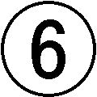
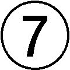
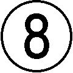

| なぜ自信が持てないのか 自己価値感の心理学 (PHP新書) | |
| 根本橘夫 | |
| PHP研究所 (2007) | |
なぜ自信が持てないのか
――自己価値感の心理学
根本橘夫
はじめに
とりたてて何事かを為し遂げているわけでもないのに、日々の生活を楽しみ、それなりに満足しながら人生を過ごすことのできる人がいます。一方で、努力を惜しまず、周囲から賞賛される立場にありながら、いつも不安や焦燥感、空虚感にかられて人生をおくる人がいます。
また、失敗したり、もめ事や悩み事を抱えていても、それほど心を惑わされることがない人がいれば、ちょっとしたことで傷つき、大きく動揺してしまう人がいます。
こうした違いは、その人の「自己価値感」に由来するものです。
「自己価値感」とは、文字通り「自分に価値があるという感覚」のことで、自分についての根底的な感覚であるといえます。
人は誰でも自分に価値があると感じたい欲求を持っており、自己価値感を求めて自分を作り上げていきます。
自己価値感をどのように獲得し、どのように保持し、また、どのように高めようとするのかが、その人の性格を形づくり、その人の人生全体をかたどっていくのです。
しっかりとした自己価値感を持つ人は、自分自身を信頼し、他者や外界に親しみを感じ、自分自身を生きているという確かな実感があります。自分と自分の人生を受け入れ、生きる喜び、楽しみ、充実感、幸福感に満たされて過ごしています。
これに対して、自分が無価値であるという感覚――「自己無価値感」を強く形成してしまう人もいます。こうした人は、無価値感のつらさから逃れるために、自己価値感を得ようと躍起になります。
自己価値感は、人に受け入れられること、何かを達成すること、あるいは人から注目されたり、賞賛されることで獲得されます。
このために、自己無価値感の強い人は、これらを求めて、演技をしたり、服従的になったり、過度にがんばってしまったり、虚勢を張ったりするようになるのです。
こうして内面に大きな葛藤を抱えることになり、人生を生きるつらさ、苦しさを体験せざるを得ないのです。
次のようなことが当てはまる人の心の底には、自己無価値感が潜んでいるといえます。
・真面目に努力しているのに、充実感がない
・周囲の目を気にして、無理にがんばってしまう
・自分より他の人が喜ぶことを優先してしまう
・いつでも人と比較してしまう
・何をやりたいのかが本当はわからない
・いつでも何かを心配している
・自分を傷つけるような行動をしてしまう
・人生は生きるに値するか疑問に思う
心理的問題を持つ人や人間関係でつまずく人の心を探っていくと、自分が無力であり、無価値であるという感覚につきあたることが多いのです。
本書は、こうした人間の心理を解き明かし、自己価値感を持つためにはどうすれば良いのかについて述べるものです。
心理学を学んだことのない人でも容易に読めるように、専門用語をできるだけ用いないで、わかりやすく記述しました。
本書により自分や他の人びとの心を理解し、より良い人生をおくるためのヒントを得ていただければ、筆者としてこの上ない喜びであります。
二〇〇七年八月三十一日
目次
自己価値感とは何か
自己価値感とは、「自分に価値があるという感覚」のことです。たとえ人と比べて劣っていても、未熟なところがあったとしても、自分はかけがえのない価値ある存在だ、という感覚です。
自己価値感は、自信や、有能感、自尊心、自己肯定感などを含み、また、それらの基盤ともなる感覚です。
人はこの自己価値の感覚をつねに意識しているわけではありません。
暖かな愛情に包まれていると感じたときや、一人の人間として尊重されていると感じたとき、あるいは、大きな仕事をやり終えたときなど、幸福感や達成感、充実感、成長感などとともに、自己価値の感覚を体験します。
むしろ自己価値感は、その価値がおびやかされたときに、自己無価値感として体験されやすいものです。
自己価値感がおびやかされるときとは、愛を失ったり、失敗したり、軽んじられたり、劣っていることが明らかになったり、自分を偽ってしまったときなどです。
こうしたとき、「自分はだめだ」とか、「どうせ私は......」とか、「私なんか......」などという言い方をします。また、わざと乱暴な口をきいたり、すねたり、反抗したりすることもあります。浪費したり、過食したり、深酒をするなど、ふだんの生活リズムを崩してしまうこともあります。自分の身体を汚す行為をするなど、自暴自棄的行動に走ってしまう人もいます。いずれの言動も、自己無価値感の表われです。
このために、自己無価値感は、屈辱感、孤独感、空虚感、無力感、卑小感、虚脱感、絶望感、不安感、恐怖感などの感情とともに体験されがちです。
また、自己価値感が希薄な人ほど自己価値感が容易にゆらぐので、無価値感を頻繁に、しかも深く体験することになります。
このことは、身体感覚と同じようなものです。私たちは生まれてからいままで、休むことなく呼吸していますが、ふだん呼吸を意識することはほとんどありません。走って息苦しくなったときや、咳き込んで苦しいときなどにはじめて意識します。喘息など呼吸器系に障害がある人は、健康な人よりも日常的に呼吸を意識させられます。
心の深層と表層
自己価値感の希薄さは、劣等感と結びついていることが少なくありません。しかし、自己の能力へ自信を持っていながら、あるいは客観的に優れた業績を上げながら、自己無価値感に苛まれる人も少なくありません。
こうした人は、業績を上げることや他者からの評価によって希薄な自己価値感を埋め合わせしようとしている人なのです。
人間の心は単純ではありません。心の表層と深層とは、おうおうにして食い違います。
このことは、フロイトが百年も前に明らかにしたことです。にもかかわらず、警察やマスコミが、たとえば、猟奇的な事件を犯した少年の犯行動機を指摘するときなど、いまだに人の心を単純で一元的なものとしてとらえようとする傾向から抜けきれません。
人の心の真実を理解するためには、少なくとも心の表層と深層との食い違いをとらえることが必要です。
自己価値感も同様に、深層にひそむ基底的で中核的な自己価値感と、表層の状況的な自己価値感とに分けてとらえなければなりません。なぜなら、基底的な自己無価値感を補うために、表層の状況的自己価値感を肥大化させている場合が少なくないからです。
深層の自己価値感――幼児期の環境
基底的な自己価値の感覚は、幼児期から形成され、児童期の初期には確立してしまうといわれています。
その形成条件は、愛情豊かで適切な養育環境です。自分が誕生した世界で自分が歓迎され、自分の内面に即応した養育がなされることです。
逆に、基底的な自己無価値の感覚は、愛情に欠けた適切でない養育において形成されます。自分と外界との不適合をつねに体験する養育環境です。自分の欲求や願望が頻繁に挫折させられ、自分の感覚や感情が無視され、自分の行動がしばしば意図したとおりの結果を生み出さないような状況です。
このような不適合な状況では、子どもは自分の感覚、欲求、意思、感情、行動に価値があるとは感じられず、自分そのものが無価値な存在だという感覚を形成してしまうのです。
もちろん、ごく幼い時期のこうした心の動きは、無意識のものです。しかし、無意識であるがゆえに、それだけ強烈に脳にすり込まれ、心のすみずみに広がり、そののちの人格を作り上げていく基礎になってしまうのです。
たとえば、しっかりとした自己価値感を持つ子どもは、自分と他者を信頼し、外界が自分を受け入れてくれることを疑いません。このために、自分の感情や欲求を素直に表現し、外界に働きかけます。こうした能動的な行動が外界への適応能力を発達させ、自分と外界への信頼感をいっそう高めます。こうして、自分を取り巻く世界はますます魅力を増し、生活は喜びや楽しみに満ちあふれたものになっていきます。
これに対して、希薄な自己価値感しか形成できなかった子どもは、自分を取り巻く外界を信頼することができず、外界に率直に働きかけることを躊躇してしまいます。これが、諸能力の発達の機会をせばめ、自信の獲得を妨げます。そのために、外界は脅威的なものと感じられ、必然的に自分を守ることへと意識が向いてしまうのです。
表層の自己価値感――児童期以降
状況的自己価値感は、意識性が強まる児童期以降に形成されます。そして、思春期、青年期、成人期、老年期を通して形成と変容がおこなわれます。
状況的自己価値感が形成されるプロセスは、大きく三つに分けられます。
一つは、人との交流によるものです。
愛されること。尊重されること。受容されること。こうした体験が自己価値感を高めてくれます。
なかでも、自己無価値感に苦しむ青年にとって、深く心を通じ合う友情や恋愛、心の師となる人との出会いなどは、基底的無価値感そのものを修復する作用を果たすことがあります。
二つめは、自分の力の拡大の自覚です。
身体が大きくなること、身体が魅力的になること、能力が高まること、何ごとかをやり遂げること、成功した体験、競争で勝つこと。こうしたことが、自信をもたらし、自己価値感を高める作用を果たします。
とりわけ、青年期にスポーツや特技などに徹底的に打ち込んだ体験は、「やればできる」という基礎的な自信をもたらします。また、成人期を迎えて、一人前に仕事ができたという体験は、その後の人生を生きていけるという現実的な自信を与えてくれます。
三つめは、他者から寄せられる評価です。
注目されること、賞賛されること、尊敬されること、憧れの目で見られること。こうしたことはいくつになっても嬉しいことであり、自己価値感の高揚をもたらします。
人は自己価値感を求める
オーストリアの精神分析学者Ａ・アドラー（一八七〇～一九三七）は、自分の価値感が減少させられるのは許せないということが「人生の最高の法則」だ、と述べています。
自分という価値を守り、自己価値感を高めたい欲求は、人間にとって基本的で、強烈なものなのです。
このために、私たちは意識的、無意識的に自己価値感を獲得し、維持し、高めようとします。愛し、愛される関係を求め、深めようとします。また、自分の力を伸ばし、自己成長しようと努力します。親や教師、友達、社会から認められようと努めます。
自己価値感を守ることは、ときには自らの命と引き換えにするほどの重さがあります。
たとえば、いじめられて自殺を考えるほどつらいのに、そのことを親に訴えない子どもがいます。親に言ったら、親にさえ情けない自分の姿があからさまになってしまうからです。そのつらさを口に出したら、自分で自分の無価値さを確認することになり、耐えられないからです。
親からひどい虐待を受けている子どもも、その親をかばいます。親にさえ愛されていないという事実を受け入れることは、耐え難い無価値感情をもたらすからです。
子どもばかりではありません。恥辱により自己価値感を傷つけられて生きるよりも、死を選ぶ大人もいます。
「たら」「れば」――無価値感を埋める心理
基本的な欲求は、それが満たされないと、その欲求への過度の執着が生じるという性質があります。自己価値感欲求も同じです。自己価値感が満たされないと、強迫的な自己価値感への欲求が形成されてしまいます。
このために、基底的自己無価値感を、状況的自己価値感で埋めようとする心理がうまれます。
したがって、基底的な自己無価値感を持つ人ほど、強迫的に状況的な自己価値感を獲得しようと躍起になります。誰からも受け入れられることを求め、自分の力を誇示したがり、賞賛を得ることに執着し、嫌われることを極度に恐れるようになります。
しかし、こうして得られる自己価値感は、「......になったら」「......であれば」という条件つきのものです。すなわち、「受け入れられたら」「愛されたら」「何々ができるようになったら」「成績が上がったら」「賞をもらえれば」「一流校に合格すれば」「やせてスタイルがよくなれば」、そのとき、はじめて自分に価値が生じると感じられるものです。
ですから、幸せは、「いま、ここ」の自分にはありません。いつでも「未来の、現在とは違う自分」に幸せを夢見ることになります。
これに対し本来の自己価値感とは、無条件性のものです。
自分の能力や容貌が劣っていようと、未熟だろうと、現在のあるがままの自分が受け入れられ、歓迎されているという実感です。ですから、「いま、ここ」の自分に幸福があるのです。
競争意識の過剰な人ほど自信がない
さて、こうした強迫的な自己価値感への欲求は、直接的な形態として表現されることもあり、偽装され、屈折した形態として表出されることもあります。
直接的な表現形態としては、次のようなものがあります。
・評価への過度の敏感性
・嫌われることへの過度の恐怖
・度をこえた努力
・旺盛な競争心
・強い顕示欲求
顕示欲求や競争意識の強い人は、一見すると自信がありそうに見え、そうした意識や行動は、自己価値感の強固さに起因するかのように思われます。しかし、実際は逆なのです。確固とした自己価値感がないために、決して負けられない、劣っている姿を見せられない、と思うのです。そのため、過度に自分を顕示し、競争意識があらわになってしまうのです。
しっかりと自己価値感が確立している人は、人との比較で評価するのではなく、自分のなかの基準で評価します。また、たとえ人と競争しても、それを楽しむ余裕があり、負けたとしても根底的な自己価値感に揺るぎはないので、ライバルをほめ称えることができます。ことさら人に自分を印象づける必要性を感じないのです。
強迫的な自己価値感への欲求が偽装され、屈折した形で表現されると、次のような行動になります。
・努力しない
・競争しない
・評価に無関心を装う
・ひねくれる、強情になる、気分を害しやすい
・幼稚な態度を示して人への依存性が高まる
・頻繁な心身症的症状を呈する
いずれも表面的には自己価値感への欲求がないかのようですが、そうではありません。このような人は、人並み、あるいはそれ以上の自己価値感への渇望があるのですが、自信がないためにあえてこうした行動をとるのです。
たとえば、努力しないことは、自分の無価値さを感じる状況を避けている行動なのです。努力しても成功できないという徹底的な自己無価値感に向き合わざるを得ない事態を、努力しないことで回避しているのです。
ひねくれることや強情になることは、それにより周囲の人を手こずらせ、自分の存在感を実感しようとする行為です。幼さや病弱であることを示すことは、それにより周囲の保護や注目を引き出すことで、屈折した形で自己無価値感を埋めようとする姿なのです。
このように自己価値感を得ようとする人のそれぞれのスタイルが、その人の性格の重要な部分を構成します。そして、人生とは、その人が自己価値感を獲得し、保持し、高めようとする行動の集成として理解することができるのです。
いかなる養育環境においても、自己価値感の形成にとって有利な環境と、自己無価値感をもたらしやすい環境とが混在します。このために、私たちは、自己価値感と自己無価値感とを両極とする直線上のいずれかの地点に位置しています。
本章では、両極に近いところにいる人を自己価値感人間と自己無価値感人間として対比し、両者の特徴を明確にします。
なお、自己価値感人間と自己無価値感人間という言葉は、木村隆介氏の『悪魔への挑戦状―真の人間の価値とは何か―』（郁朋社、二〇〇〇年）によるものです。この本は自己価値感が人間にとっていかに基底的なものであり、いかなる心理と行動と社会現象を生み出すかを徹底的に論じていますので、ご一読をお勧めします。
「存在への自信」と「能力への自信」
自己価値感人間は、自分そのものへの信頼があります。自分を信頼する（self-confidence）という本来の意味での自信があり、心と行動は、全面的で根底的なこの自信に基礎づけられています。
自己価値感人間は、自分の感覚、感情、欲求、要求、意思、願い、行動が尊重され、大事にされてきた人たちです。このために、自分が感じていること、考えていること、願っていること、これらへの価値を疑いません。これらに基づく自分の選択や行動を正当なものと考えます。
また、幼く未熟なままに歓迎されてきたのですから、自分の未熟さや、能力不足、欠陥、弱点をも、そのままに認め、受け入れることができ、それらにより自己価値が低減されるという感覚はありません。
さらに、外界を信頼しているので、自分を防御したり、自分の価値を無理に外界にアピールする必要性を感じません。それゆえに、人への接し方は自然であり、率直であり、泰然としています。
これに対して、自己無価値感人間は、自己信頼という意味での根底的な自信を欠いています。このために、「社会的価値を達成する」という自信によって、自己価値感を獲得しようとします。
状況的自己価値感を得る道は、愛されること、自分の力の向上、他者からの賞賛などであることは前述しました。養育過程のなかで、これらはしばしば結合しています。すなわち、一番になるとか、良い成績をとるとか、良い子であるなど、何か社会的に価値あることを為し遂げたときに、愛や賞賛、自分の力への自信が得られます。このために、社会的価値に過度に執着する傾向を強めるのです。
なぜ優等生でも自信が持てないのか
子どもにとって、社会的価値の達成におけるもっとも明確な基準は、他の子どもとの比較です。このために、いつでも人と比べる心性が身についてしまいます。とりわけ同年齢の友達は、親友としてよりも、ライバルとして位置づけてしまう傾向があります。その結果、同年齢の友達に圧迫感を感じ、自分より優秀な者に対しては劣等感を、下の者に対しては優越感を持つということになります。
自己信頼という意味での自信は、存在そのものへの広汎な自信です。これに対し、社会的価値を達成することで得られる自信は、特定の領域に限定されたものでしかありません。
勉強ができるという自信は、スポーツができるという自信とはまったく別物ですし、勉強ができるという自信は、社会に出てやっていけるという自信とも直結しません。
成績の良い優等生がしばしば自信がないのは、このためであり、がんばって、がんばって、高い地位についたとしても、いつか失敗するのではないかという不安を感じるのもこのためです。
能力への自信によって、基底的な自己無価値感を払拭することはできないのです。
決断できる人、優柔不断な人
日常生活におけるさまざまな決断は、その人の感覚や価値観、そのときの感情、欲求、願望などが決断の基準をなしているのであり、純粋に論理的な判断でおこなわれるものではありません。
たとえば、レストランで何を注文するか、どの映画を見るか、大学で何を専攻するか、どのような仕事を選択するか、いまつきあっている相手と結婚するか、それとも別れるか、こうした判断の基礎をなすのは、自分の好みとか、欲求とか、好き・嫌いという感情とか、こうありたいという願望とか、価値観などです。
自己価値感人間は決断力があります。
それは、自分の感覚や感情、欲求、願望、そして大切にすべきものがわかっているからです。そして、これらに疑念を持たないからです。決断とは、また、その判断に責任を負うことです。自己価値感人間は、自分への信頼があるので、決断の責任を恐れません。また、自分と外界を信頼しているので、楽天的です。いたずらに悲観的な見通しを持つことはありませんし、たとえ自分の決断が間違っていたとしても、それが判明した時点で修正すれば良いと考えます。
いっぽう自己無価値感人間は優柔不断です。
自分の本当の感覚や感情、欲求、願望がわからないためであり、わかっていても信頼しきれないからです。どのレストランに入るか迷ったり、自分で進学先を決められない、職業を決められない、ということになります。そして、親など他の人の意向に沿って決めてしまうことが多くなります。
また、自信がないために、決断への責任を恐れます。このために、とりわけ責任がともなう場面で、優柔不断さが顕著になります。リーダーシップが要求される状況になると、大きなストレスを感じてしまいます。
さらに、自己無価値感人間は、自分と外界を信頼できないために悲観的であり、しばしば不適切な決断をしてしまいます。そうした体験があるために、決断したあとでもそれが正しかったかどうかをいつまでもくよくよと考えるということになります。
傷つきにくい人、傷つきやすい人
自己価値感人間は、真、善、美に対して深い感情を体験することができます。といっても彼らの心がいたずらに動揺し、容易に傷つくことはありません。
心が傷つくということの本質は、自己価値感覚がおびやかされることです。
自己価値感人間は、揺るぎない自己価値感ゆえに、人の悪意に対して傷つくのではなく、苦笑ですませることができます。悪意ある人への怒りを、人間的な悲しみで反応します。また、たとえ何か失敗したとしても、長く落胆や絶望の感情にひたるのではなく、次の成功への材料として生かそうとする姿勢に切り替えることができます。
それに反して、自己無価値感人間は、自己価値感が容易に揺さぶられてしまうために、ちょっとしたことで傷つき、混乱してしまいます。そしてその感情が持続してしまいます。
考えてみれば、自己無価値感それ自体、深い傷ともいえるものです。感情がいたずらに混乱してしまうのは、この自己無価値感覚をもたらした幼児期のトラウマと、現在の傷ついた体験とが容易に結びついてしまうことに一因があるためだと考えられます。
たとえば、上司のちょっと批難めいた言葉で深く傷ついてしまうのは、親から叱責され拒否された体験を、無意識のうちに心のなかに再現させてしまうためと推測されます。
ただし、自己無価値感人間のなかには、鈍感さによって自己を守る術を身につけた人がいることを付け加えておかねばなりません。
このような人は、無遠慮に介入する親や、感情のおもむくままに子どもを振り回す親に対して、自らの感覚や感情を鈍磨させ、頑固に自分を押し通すことで対処しなければならなかった体験を持つ人です。
このタイプの人は、細やかな感受性や情操に欠け、思考や行動も柔軟性を失っていることがあります。容易に傷つくことはなく、自己主張が強いので、一見すると自信家に見えます。しかし、その心の底に横たわっている根深い自己無価値感情を見逃すことはできません。
「あるがまま見る人」と「歪めて見る人」
自己価値感人間は、存在自体が受け入れられてきたので、自分の劣っている点や短所をも素直に直視できます。
欠点があるからといっていたずらに卑下したり、卑屈になったりすることはありません。真、善、美を自分なりの感性で受けとめることができ、自分の頭で考え、自分の意見を持ち、自分の言葉でしゃべることができます。
これに対し、自己無価値感人間は、ものごとを自分の感性で受けとめることが困難です。自分の言葉で表現することが困難です。その場面で「感じるべき」とされていることを感じ、その場面で「言うべき」とされている言葉を発しているに過ぎないのです。
それは、あるがままの自分が受け入れられず、自分の感覚、欲求、感情が無視されたり、ねじ曲げられたりして育ったからです。
このために、無価値感人間は、自分の感性、思考、判断に自信が持てず、他の人の意見によって揺れ動きます。あるいは、逆に、揺れ動く状態が不安定で耐えられないので、自分の意見や判断に固執します。
自分の欠点やいたらなさは、そのまま自分が無価値であるという感覚をもたらします。そのために、とりわけ自分についての認知を歪めがちです。
また、自分を守るために、意識的、無意識的にいろいろな防衛策を講じます。
たとえば、試験であれば、前もって期待水準を低いところにおくとか、逆に、「できなくて当然」という逃げ道を作るために、達成不可能な高い水準を設定したりします。
行動によって逃げ道を作ることもあります。まったく勉強しないか、逆に、徹夜で勉強するなど極端な行動をします。まったく勉強しなければ、「勉強すればできる」という逃げ道が残され、無理な徹夜をすれば、「眠っていないために頭が働かなかったためだ」という言い訳ができます。
無価値感人間は、歓迎されて育てられたという感覚が希薄なので、世界は怖く、悪意あるものと感じられます。このために、他の人の行為を、自分への悪意と受け取りやすい傾向があります。
たとえば、レジでおつりを受け取るとき、ちょっとしたタイミングの食い違いで、手のなかにおつりを放られたような感じになると、相手が自分をバカにしていると感じてしまいます。試着室で洋服を選んでいるところを店員が見ていると、「買わないくせに、と思っているのだ」と邪推してしまいます。
他人から受ける行為ばかりではありません。自分の心を混乱させるものは、なんでも悪意あるものと感じられます。気持ちが落ち込んでいるときに電車が遅れれば、電車が自分に嫌がらせしているように感じられます。雨でさえ、自分への意地悪と感じてしまいます。
「したいからする」と「すべきだからする」
自己価値感人間と自己無価値感人間では、行動の動機が根本的に異なります。同じ行動をするにしても、その心理的意味はまったく異なっているのです。
そもそも人間の行動の根本的動機は、大きく二種類に分けられます。
一つは安全欲求という動機であり、もう一つは内発的欲求充足という動機です。
自己価値感人間は、基本的な安全欲求が満たされているので、自分の内発的欲求の充足のほうが優勢な動機になります。
すなわち、親しく心を通じ合うこと、愛し、愛すること、楽しむこと、興味を深めること、技能を高めること、達成感を味わうこと、自分を成長させることなどです。
これに対し、自己無価値感人間は、安全欲求を満たすことが主要な動機になります。すなわち、心と行動は、自己価値が脅かされないように自分を守ろうとすることに向けられます。
一心に仕事に取り組んでいるときの両者の様子を見てみましょう。
自己価値感人間は、どのようにしたらうまくいくか、いろいろと工夫して、自分の能力が高まり、やり遂げる達成感や充実感のなかで仕事をしています。
自己無価値感人間は、失敗して自分に能力のないことがあからさまになることを恐れて一所懸命取り組んでいます。もしくは、人から認められようとして懸命になっています。
このように行動の動機に違いがあるので、行動にともなう感覚もまた異なります。
自己価値感人間は、自分が「したいからしている」と感じているのに対して、自己無価値感人間は、「しなければならないから」しているのであり、「させられている」という感覚が強いのです。
こうしたことから、自己価値感人間は現在の行動が終われば、次の行動に積極的にチャレンジしようとします。自己無価値感人間は、うまく対処できたことに安堵し、行動の終了を歓迎します。
楽しい努力ができる人、苦しい努力しかできない人
自己価値感人間の努力は、内発的な成長力の発現に向けられています。すなわち、自分の興味や適性、希望、夢などにつながる目標の達成へと向けられています。このために、彼らの努力には、挑戦する喜びや、自己成長、充実感などがともないます。
もちろん、自己価値感人間とて避けられない苦役はあります。しかし、それらに真摯に立ち向かいつつ、それだけに終わることなく、自分の興味や夢と重なる努力をも併行しておこなっています。
また、失敗したり、挫折感をあじわったりすることも当然あります。そのようなとき落胆はしますが、そのために自信喪失の感情が広がってしまうことはありません。そもそも自分がしたかったことに挑戦していたのですから、残念だとは思いますが、これまでの努力を無駄とは感じません。
さらに、彼らは強迫的な欲求から解放されていますから、自分の目標や夢が自分の潜在能力から考えて現実的でないと判断すれば、現実的なものに修正する柔軟さがあります。
現在を精一杯生きることが必然的に未来につながっているという揺るぎない確信を持っているために、彼らの努力は、「いまを充実して生きている」という実感とともにあるといえます。
これに対し、自己無価値感人間にとっての努力は、自分のなかから発生した自分本来の目標に向けての努力ではなく、人から賞賛されるためであるとか、他人からの批難を避けるためであるなど、他者を意識した努力なのです。
このために、自己無価値感人間は、強迫的な努力をする人か、もしくは、全面的に努力を放棄した人になります。
強迫的な努力に向かう人は、いつでもより高い社会的価値の達成をめざします。このタイプの人は、真面目な努力家になり、いわゆる「良い子」であったり、競争心の強い人であったりします。
こうした強迫的な努力が悲劇的なのは、自分が楽しいと思えないもの、自分にとって意義がわからないものにでも、必死にがんばってしまうことです。
たとえば、勉強がすこしも楽しいと感じない優等生。実際にどう役立てるか見通しもないのに、次々と資格取得に精を出す人。いつも自分を犠牲にして周囲の人のために働いてしまう人などです。
こうした涙ぐましい努力は、他者からの賞賛を求めておこなっていることです。ですから、どこにも非の打ちどころがないようにしないと安心できないわけで、完璧主義に陥ることになります。しかし、完璧であることなど不可能ですから、つねに不全感につきまとわれることになるのです。
こうした人にとって失敗をしたり批判を受けたりすることは、自分の存在価値そのものが脅かされることになります。なぜなら彼らの自己価値感は成功や人からの賞賛によって維持されているからです。ですから、失敗や人からの評価を失うことを極力恐れます。そのために、努力の成果が得られるほど、彼らの努力は不安や焦りによってますます加速化されていくのです。
自己無価値感人間のなかには人並み以上の努力によって、特別に高い業績を上げる人がいます。官庁や企業などで幹部の地位に上ったり、作家や芸術家として世に知られるようになったりする人もいます。
しかし、社会的には成功しても、「自分の人生はどこか間違ったのではないか」という疑念が残り、いつか本当は能力がないことが露呈してしまうのではないか、という不安を感じたりします。
といって、こうした自己無価値感人間の努力を冷笑するのは誤りです。そうならざるを得なかった必然的な状況があったのであり、また、人一倍の努力が、じっさいに彼らの人生を構築していく支えとなるからです。こうした人たちは、多くのストレスを抱えながらも、社会的に安定した生活を築き、相応の幸福な人生を送るのが大部分なのです。
自己無価値感人間のなかには、努力を放棄するという第二の道を歩いてしまう人がいます。この道は、当然ながら、能力を生かし切れない人生、非建設的な人生、場合によっては破滅的な人生となります。
このタイプの人は、努力しても報われなかった養育環境であるとか、努力するための素養が育まれなかった養育環境などに起因します。また、そもそも本人の潜在能力の低さのために、社会的価値と合致した方向での自己価値感の獲得を断念してしまった場合もあります。
しかし、こうした人も自己価値感への欲求そのものはなくなりません。いや、むしろ、満たされないためにいっそう強くなり、屈折した形で自己価値感を獲得しようとします。
それはたとえば、自堕落、無気力のままに過ごすとか、幼さを強調するなどです。これにより、親や周囲の注目や配慮、援助を引き出すことができ、自分はそうした特別な配慮や援助に値する存在だと感じることによって、自己価値感欲求を満たそうとするのです。あるいは、意固地な反抗や、非行などで親を困らせたりすることで自己価値感を得ようとします。
こうした子どもに対して、口では「困った子だ」と言いながら、親はどこかで歓迎してしまっています。なぜなら、その子に必要とされているということで、親自身も自己価値感が満たされるからです。
こうした共依存的関係によって、子どもは、ますます努力する能力が奪われ、努力することは苦痛以外の何ものでもなくなってしまいます。
「自分は自分」と「人の目が気になる」
自己価値感人間は、外界と自分との関係を信頼しているので、関心や諸欲求が自己と外界へバランス良く向けられています。このために、彼らの価値観や判断・行動は偏りがなく、民主的・社会的価値と合致しています。
外界と交流しながら、必要な場合には、外界に対して超越的態度をとることもできます。すなわち、自分でどうにもならないことについては、必要以上に心の混乱をきたさず、受け入れることができます。
このように、自己価値感人間は、社会や集団と融和しながら、「自分は自分」という姿勢を堅持しています。
いっぽう、自己無価値感人間は、自己価値を脅かされる不安と、無価値感を補おうとする強迫的な欲求に突き動かされて外界に接します。
ですから、いつでも外界へ警戒的な態度をとり、人の目が気になることになり、自分自身のままでいることができません。自分を人と比べて値踏みするようにもなります。
自分より地位が高い人からの評価は、とりわけ自己価値感を左右します。そのために、そうした人に接するとき、必要以上に緊張してしまい、自己防衛の口実を考えたり、卑屈に取り入ったりします。
また、逆に、ふてくされたり、ふてぶてしい態度をとることで、相手からの評価を強引に拒絶しようとする人もいます。最初から好意的な評価を期待しなければ、自己価値感がそれだけ傷つかずにすむというわけです。
こうした表われ方の違いはあっても、自己無価値感人間は、人から嫌われることをひどく恐れ、人の評価をつねに気にしていることで共通しています。
愛される人、疎んじられる人
人のために尽くすなど優れた面を持ち、ほとんど欠点らしい欠点がないのに、なぜか疎んじられる人がいます。逆に、他者への配慮に優れているわけでもなく、欠点だらけなのに、好かれる人がいます。これはその人の根底的な自己価値感の違いによるのです。
自己価値感人間は、率直で自然な姿で人に接します。
疑念もなく、素直に自分を他の人に開示します。他の人をもまた、そのままに受け入れます。人を外見や地位などで区別することはなく、誰に対しても自然な配慮をし、率直で豊かな感情を持って接します。
こうした率直で自然な態度のために、周囲の人もまたありのままでいることができるのです。それが、周囲の人に心地よさを与えるのであり、この心地よさゆえに、好かれ、愛される人となるのです。
自己無価値感人間は、周囲の人と接するときに、不自然で屈折した行動をとってしまいます。その不自然が疎まれ、好かれないことにつながるのです。
こうした不自然さは、過度に気を遣ってしまうタイプ、攻撃的になるタイプ、人間関係に無関心を装うタイプなどとして表われます。
【過度に気を遣うタイプ】
このタイプは、素直に自分を表わすと嫌われてしまうのではないかと恐れ、つねに相手の気持ちを先回りして推測してしまいます。このために、人との接し方がぎごちなくなり、本当に言いたいことを言えず、心と裏腹なことを言ってしまったりします。そのため、あとあとまでマイナスの感情を引きずることになります。
また、気を遣いすぎるために、人の好意や援助を素直に受け入れられません。相手がかえって恐縮するほど慇懃にお礼を言ったりします。何か人に頼むということも苦痛です。頼むことは、負い目になり、自己無価値の表明であるかのように感じてしまうからです。
ほめられることに関しても、じっさいは、それを望んでいるのに、いざ、ほめられると素直に喜べません。自分の無価値感との間に違和感を感じてしまうからです。
このタイプの人は、周囲の人に気を遣っているのですから、外界に大いに関心があるかのように思われます。しかし、彼らの関心は自分にしか向いていないのです。他者の目に映った自分の姿だけを他者のなかに見ているのです。
また、自分の態度の不自然さを感じていて、自然さを表わそうと演技するのですが、演技すればするほど、不自然な姿を表わしてしまいます。
こうしたぎくしゃくした感じが、裏があるとか、フィーリングが合わないといった雰囲気を周囲の人に与え、良い人なのになぜか疎まれるということになるのです。
【攻撃的タイプ】
第二のタイプは、攻撃的タイプです。このタイプの人は、相手を攻撃することで自己価値を守ろうとします。
彼らは攻撃的であるばかりでなく、競争心、対抗心が強く、負けず嫌いで、なんにでも口を挟んで、無視されることに耐えられません。
そのため、表面的には自信がありそうに見えます。しかし、自分の弱みや劣っている部分を素直に受けとめるには十分な自己価値感が獲得されていないために、攻撃的な行為で自己価値感の揺らぎを防衛しようとしているのです。
このタイプの人は、周囲の人を自分の味方か敵かという視点で区別します。敵とは自己価値感を脅かす者であり、味方とは自己価値感を高めてくれる人のことです。敵であると判断した人を徹底的にこきおろし、味方と判断した人を絶賛します。
このタイプの人が地位を得ると、部下を味方と敵とに分けます。味方とは、自分を持ち上げてくれる部下、利用価値がある部下、優越感を与えてくれる無能な部下です。自分になびかない部下、有能で自分を脅かす部下は敵です。味方である部下には「えこひいき」をし、敵である部下には「いびり」を、あからさまな形でおこなったりします。
このタイプの人は、いびられている部下からも、えこひいきされている部下からも、蔑まれていて、仕事のために関係を持たなくとも済むようになれば、いずれの人からも離反されてしまいます。
【無関心を装うタイプ】
第三のタイプは、無関心を装うタイプです。無価値感が刺激され、傷つくことを恐れているために、人と関わろうとしない人です。
このタイプの人は、会社の飲み会があっても参加しないし、職場での雑談の輪に加わろうとしません。まるで人に関心がないかのようですが、内心では人の話に聞き耳をたてていて、他の人からの評価をひどく気にしているのです。
このタイプの人を飲み会に誘うのはかえって迷惑かと思って、人は誘わなくなりますが、じっさいは、誘われるのもイヤだが、誘われないのもイヤだ、と感じているのです。
「まわりの人が悪口を言っている」と被害妄想になりやすいのも、このタイプの人です。ですから、周囲の人はどのように接すればいいのか戸惑い、気疲れしてしまい、結局は疎んじることになるのです。
「現実を生きる」と「かりそめを生きる」
自己価値感人間は現実を生きています。日々、「自分の人生を生きている」という実感を持っています。
勉強、仕事、雑務など、自分の本来的な欲求や願望とは異なった行動をおこなわなければならないこともたくさんありますが、それでも、基本的には自らの欲求、感情、関心に基づき、自ら選択して、自分が築いてきた生活を生きていると感じています。
自己無価値感人間は、現実を生きているという感覚が希薄です。
いまは仮の人生であって、自分の本当の人生は将来のいつの日にかはじまる、という感じを持っています。それは、自分の本当の感覚、感情、欲求とは裏腹な自分を生きているためです。
日々の行動は、強制されて仕方なくおこなっている感覚が強く、虚しさの感覚やつらさばかりが感じられます。
こうした人の発する言葉は、現実的内容を失い、言葉だけのものになることが多く、「好き」とか「愛している」、「......したい」などと言っても、本当にいま感じていることがその言葉で表わされているかどうか、本人も疑念を持っているのです。
その場に身を置いているのですが、現実に全面的に関与している実感がありません。現実を傍観者として見ている自分がいます。たとえば、家族と食事をしながら笑っていても、その楽しい食事風景を自分が外から見ている、といった感じです。自分の人生さえも傍観者として見ているかのような感覚があります。
自分の人生・後悔の人生
自己価値感人間は、現在の自分とその人生は、自分が築いてきたと感じています。だから、自分の人生には自分に責任があると感じ、自分の人生を自分で引き受け、肯定しています。
もちろん、彼らが完全な人間というわけではありません。欠点や弱点はあり、弱気や利己主義に悩まされることもあります。しかし、彼らは、こうしたことに対しても、自分なりに誠実な態度をとろうと努力します。
これまでの人生で、達成できなかったことも多くあるし、悔いが残ることもありますが、トータルとして考えたとき、「わが人生に悔いなし」という姿勢で自分の人生を受けとめます。
このことは、やがてやってくる老いと死を、自分の人生の必然の出来事として、受け入れる準備ができていることを意味します。
ところが、自己無価値感人間にとって、人生はつねにがんばりの連続でした。もしくは、がんばることにも値しない空虚なものでありました。
そのいずれにせよ、自分自身の人生を生きてくることができなかった、自分が夢見た人生とは裏腹な人生を過ごしてしまった、そんなふうに感じられます。だから、ずっといつも「ここ」から「どこかへ」逃げ出したい気持ちがありました。
自分自身を生きてこなかったという思いは、老いを迎える年齢になって後悔や焦燥感、絶望感をもたらします。これまでの人生を受け入れられず、かといって、自分の人生をやり直す時間はもはや残ってはいない、と。
このために、自己無価値感人間にとって、死は憧れであるか、とてつもなく恐ろしいものとして現われます。がんばって、がんばって、もはや十分にがんばり抜いたという人は、死が人生という重荷から解放してくれる救いのように思われます。なかには、自ら進んでこの道を選択する人もいます。
外界を威圧する思いでがんばってきた人にとって、死は決定的な敗北のように感じられます。こうした人は、死後に寄せられる自分への評価を思いやり、老年期も安閑としていられません。地位や名誉、金銭などにいつまでも固執し、死を恐れることになります。
本人が気づかない心の屈折
以上述べてきたように、自己価値感人間と自己無価値感人間の内面は大きく異なっています。しかし、表面的にはその違いはわかりません。
それは、両者とも同じ場面で同じ行動をするし、同じ場面で同じ言葉を発するからです。さらに、自己無価値感人間のほうが社会的に望ましい行動をとることも少なくないからです。
自己無価値感人間の内面の屈折は、幼い時期からはじまっています。
しかし、周囲の人も本人もそのことに気づかず、そのため、何の問題もないと考えて対処してきて、屈折は大きくなってしまうのです。短いときには平行に見える二つの線が、はるかその延長線上では大きく隔たってしまうように。
この屈折を大きくさせないようにしようとすることが、子どもの反抗期と呼ばれる現象を出現させます。第一反抗期にせよ、第二反抗期にせよ、反抗期とは、自己価値を守り、維持し、高めようとする子どもの叫びなのです。
自分の心が自己価値感人間の心とは異なるということは、本人でさえ気づかないものです。本人が気づくのは、自分の心に敏感になる思春期以後で、それは最初、何かわからない違和感として体験されます。そして、しだいに、自分とは正反対といえる心の動きをする人が存在することに気づきます。
こうした意識を持った人は、「普通の人は......だけど、自分は......」とか、「みんなは......だけど、私は......」などという言い方をします。
さらに、生活体験を積み重ね、人と親しく接するなかで、じつは「普通の人」が自分と同様な心理傾向を持つことを知ります。このことは、大きな発見であり、自己無価値感人間としての苦しさを抜け出す一つの契機ともなるのです。
しかし、自己無価値感からくる生きづらさに苦しみながら、その本質に気づかずに生涯を終えてしまう人も少なからず存在します。
前章で、自己価値感人間と自己無価値感人間の意識や行動のさまざまなちがいを見てきました。
両者がどのようにして形成されるのかを、本章と次章で述べます。
確固とした自己価値感は健康な心の基礎であり、また結果でもあります。
そこでまず、健康な心とは何かを心理学の歴史に照らして述べることとします。
１ 健康な心とは何か
精神分析から行動主義的心理学へ
心理学の歴史を大まかにとらえると、精神分析から、行動主義的心理学を経て、人間性心理学に到達したといえます。
フロイトにはじまる精神分析は、神経症の患者など病理的な側面から人間の心理を鋭く暴き出しました。
これにより、人間が無意識によって大きく規定されること、とりわけ、「リビドー」と呼ばれる本能的、性的欲動によって翻弄される姿が明らかにされました。
しかし、理論構築の基礎が病的側面であったために、人間の本性についても否定的な見方をすることとなってしまいました。
すなわち、人間の本源的な心は危険なものであるとして、健全な心の発達とは、この本源的な心を自我がうまく制御できるようになることであると考えたのです。このために、精神分析における治療とは、自我の統制能力を強めることが主眼となりました。
これに対して、行動主義的心理学は、客観的に観察できる行動にのみ研究対象を絞ることで、人間行動の法則性を自然科学的手法により明らかにしようとしました。
これにより、複雑に見える人間の行動に、シンプルな法則性が存在することを明らかにしました。しかし、心そのものではなく、行動を対象とすることによって、この心理学は感受性を喪失し、もっぱら欠乏動機によって動かされ、環境によって操られる人間像を描くこととなってしまいました。
実際の人間は、細やかな心の動きや、苦悩や葛藤を持ち、希望と絶望のあいだを揺れ動く存在です。そして、こうした不安定な心をかかえながら、なお、世俗の価値を追求するだけでなく、真善美、愛、夢、理想などに生きようと努力する存在です。行動主義的心理学は、人間を人間たらしめているこうした心をとらえきれず、人間を過度に単純化した、生気の欠ける心理学となってしまいました。
人間性心理学とカウンセリングの発達
これら二つの心理学に対して、人間性心理学は、病的な心の法則をそのまま健康な人間の心に当てはめることは適切ではないとして、健康な人間の心から人間一般の心をとらえようとします。また、人間を統合的な存在として全体的にとらえようとします。
これにより、人間がいっそう健康に成長していくための諸条件を解明しようとするのです。
人間性心理学の理論構築の基礎には、一般心理学研究の広がりとともに、カウンセリングにおける膨大な蓄積があります。とりわけ、ロジャーズに代表される人間の本性に信頼をおいたカウンセリングの発達があります。
こうしたカウンセリングでは、人間は本来健康に成長しようとする内発的な力を持っており、心理的疾患とはこれが不適切な環境によって歪められてしまったために生じると考えます。
したがって、治療とは、健康に成長しようとする人間が本来的に持っている内発的な力が発揮されるような環境を与えてあげることが主眼となります。
心理療法では薬を飲ませるわけでも、患部を切り取るわけでもありません。心と心を通い合わせることによって、クライアントの心の開放をはかることが治療になります。あるいは、行動を変えることが治療になります。ですから、その人のなかの自己治癒的な力の存在を前提しなければ、カウンセリングは成立し得ないのです。
このように、人間性心理学では、生物としての人間が本来健康に成長していく力を持っているのであり、健康な発達とはその内発的な成長力の実現、すなわち、自己実現であるとみなすのです。
さらにいえば、夢や希望、理想、計画など、未来に描くものが、その人の心と生活を大きく規定すると考えます。精神分析では、幼児期の体験など、人間がもっぱら過去に規定される存在であるとしたのに対して、人間性心理学は過去ばかりでなく、未来に規定される存在としてもとらえるのです。
健全な心は自然に育つ
人間性心理学の知見によれば、人間にもともと内在している健康に成長しようとする内発的成長動機は、適切な環境に置かれれば、自然に一連の連鎖として機能するようにできています。
じっさい幼い子どもは、そのときそのときを自分の心のおもむくままに生きています。成長しようと努力するのではなく、ただ自然に生き、関心のおもむくままの活動を楽しむことで、能力を拡大し、成長しています。
このことを、人間性心理学の創始者といわれるマスローは、次のように記述しています。
「健全に成長を続けている幼児にしてみれば、高遠な目標のために生きているのでもなければ、遠い未来のために生活しているのでもない。かれらはあまりにも忙しく自分を愉しみ、そのときそのときを自然に生きている。かれらは生きているのであって、生きる用意をしているのではない。かれらは別に成長しようと努めるのでもなく、ただ自然と生存し現在の活動に喜びを見いだすことだけに生きている」（上田吉一訳『完全なる人間――魂のめざすもの』誠信書房・一九六四年）。
人間は、生物の進化という自然現象のなかで誕生した生き物であり、適切な環境さえ与えられれば、生物学的な叡智が働き、自然に健全に成長していくのです。
このことは、動物が食物を自由に選択できるカフェテリア実験でも実証されています。
たとえば、ビタミンＡを欠いた食べ物を長期間与えられたラットは、自由選択場面ではビタミンＡを多量に含む食物を選択します。また、妊娠した動物は、胎児に必要な食物を多く摂取します。腎上体を切除された動物は、その機能を食物で補うような選択をおこない、生きながらえます。
このような生物学的叡智は、当然社会的行動の選択においても機能しています。自由な選択が与えられるならば、健全に成長しつつある子どもはその発達段階に応じた適切な社会的選択をおこなって成長していくのです。
たとえば、見知らない同年齢の子どもたちが遊んでいるとき、子どもは他の子どもたちへの関心と、仲間に入る不安との両方を感じます。健全に育っている子どもは、関心のほうが勝って、集団に入るほうを選択します。仲間に入ることにより、集団の楽しさと喜びを体験し、いっそう仲間のなかにいることを楽しめるようになります。集団のなかで、いろいろな社会的能力を発達させていきます。
欲求の段階的高まり
人は、基本的な欲求が満足されると、ごく自然により高い水準の欲求が優位を占めるようになります。
このことを、マスローは、人間には「生理的欲求」「安全欲求」「所属と愛情の欲求」「自尊欲求」「自己実現欲求」という五つの基本的な欲求の階層があり、下位の欲求が満たされると、順次上位の欲求が優勢になると述べています。
人間の発達とは、こうした下位の欲求からしだいに高次の欲求へと精神生活の中心が移っていくことと、とらえることができます。
ある発達の段階が子ども自身にとって安全で好ましいとしたら、なぜ、子どもは次のより高い発達段階へと進もうとするのでしょうか。この点について、マスローの解答は簡単明瞭で、次のように繰り返し述べます。
「成長は次の段階への前進が主観的に喜ばしく、快適で、以前にもまして本当に満足すべきものである場合に、生ずるということである」
「子どもがおそらく他の〈高次〉の喜びに移ろうとするのは、ただ十分に満ち足りて退屈を感じるようになったときである」
「十分に恵まれて、正常に、健全に成長している子どもは、かれがよく味わっている喜びを満喫し、これに飽き飽きさせられている。そこで、危険やおそれがないとなると、みずからすすんで、（推されることなしに）一段と高次の複雑な喜びに進んでゆくのである」（いずれも前掲書）
筆者の意見もまったく同様です。成長とは、そのときどきの自然で生物学的特性に裏づけられた賢明な選択の過程なのです。そして、この選択が機能するためには、成長を不自然に急がせるのではなく、発達のその時期、その時期をたっぷりと子どもに堪能させることが条件なのです。
以上見てきたように、現在の心理学では、健康な心とは、適切な環境によってその人の内発的な成長力が発現したものと考えられています。
健康な心とは、外からあれこれ操作されることによって、形成されるものではないのです。ですから、健康な心を育てるということは、子どもの内なる成長力を信頼するということです。
子どもの側からすれば、自然な自分自身を信頼しているということなのであり、まさに基底的自己価値感にほかなりません。健康な心の基礎には、しっかりとした自己価値感が存在するのです。
２ 幼児の心が育つ三つの条件――基底的自己価値感の形成
それでは、基底的自己価値感が形成され、内発的成長力が十分に発現する自然で適切な環境とは、どのようなものでしょうか。
基底的自己価値感の形成についての諸研究は、その子自身の能力や達成水準はほとんど影響せず、親の子どもに対する接し方こそが最大の規定要因であることを明らかにしています。
それは、抽象的、かつ概括的に述べれば、親が子どもに愛情を持って接することです。しかし、愛情は主観的なものであり、歪みがある場合が少なくありません。親が愛情と信じていても、逆に、子どもの内発的成長力を阻害していることがまれではありません。
ですから、主体である子どもの側から、この条件を記述しなければなりません。そうした視点から、三つの基本的な条件が指摘できます。
第一は、自分が安全に守られているという感覚が与えられること。
第二は、自分と外界とがフィットしているという感覚、すなわち、適合感を持てること。
第三は、自分がこの世で歓迎されているという実感を持てること。
以下、この三つの条件について詳述します。
安心を与えられること
健康な心が発達する出発点は、幼い子どもに安全と安心の感覚をしっかりと与えてあげることである、という点で諸説は一致しています。
無力な存在である幼子にとって、この生まれてきた世界は脅威に満ちています。日々が選択の過程です。片方は少し恐いが成長につながる選択肢であり、他方は安心だが成長が阻まれてしまう選択肢です。
ですから、健康な成長のためには、彼らの安全欲求を保育者が引き受けてあげることによって、成長へとつながる選択ができるようにしてあげることが必要なのです。外界は、恐ろしい世界ではなく、自分を安心してあずけてよい世界なのだと、脳裏に刻みこませてあげねばなりません。
安全欲求を満たしてあげる保護者の庇護は、次のようなことで幼子に基底的自己価値感をもたらします。
「外界と自分が信頼できるという確信を与える」
「自分が世話を受けるに値する価値ある存在だという確信を与える」
「必要な場合には庇護を引き出すことができるという自分の力への確信を与える」
むろん、こうした確信は、意識的なものではなく、体感的な感覚です。そして、それゆえに、心の発達に深層から影響を及ぼさずにはおかないものなのです。
適合性の感覚を与えられること
第二の条件は、適合性という感覚です。自分と外界がフィットしており、外界との間に違和感がないということです。
これは、乳幼児に対する親の対応の適切さに依存します。
赤ん坊のほほえみに、ほほえみで反応してあげる。嬉しがって声を上げれば、その嬉しい気持ちに共感して、「嬉しいのね」と返してあげる。空腹の不快さのために泣いたとき、お乳を与えることによって不快さを取り去ってあげる。おしめが濡れて泣けば、おしめを替えてあげる。びっくりして泣けば、気持ちを優しく受けとめ、抱きしめてあげる。このようなそのときどきの適切な対応です。
スターン（個性や知能に関する研究で著名な心理学者）は、こうした交流を通して親子の心が通じ合うようになる過程を「情動調律」と呼んでいます。情動調律においては、「自分の感情が共感を持って受けとめられている」「自分は受け入れられ相手にしてもらっている」と、赤ん坊自身が実感できることが大事だといいます。
母親が子どもの内面を理解しただけでは不十分なので、「あなたが感じていることを、お母さんも感じているのよ」と、伝えてあげることが必要なのです。そして、観察によれば、母親は赤ちゃんと接するとき、意識してはいないけれども、こうした反応を一分間に一回の割合でおこなっているということです。
このような親の反応が、親との感情的交流をもたらし、自分が外界としっくりいっているという適合感を持たせてくれるのです。
このことは、子どもの欲求を無条件に受け入れるということではありません。社会生活に適応させるためには、社会的ルールに従うように導かねばなりません。
研究によれば、母親は赤ん坊に対処するとき、一方的に赤ん坊の要求に従うのではなく、ほめたり、残念がったりしながら、辛抱強く赤ん坊を社会的な方向に導いているのです。こうした愛情深い対処の仕方によって、子どもは不適合感に陥ることなく、社会的ルールを身につけるのです。
歓迎されている実感を与えられること
無力で、人に与える何物も持たず、ただ、周囲の手を煩わせるだけの存在。それでも自分を無条件に歓迎してくれる。自分の存在を喜んでくれる。こうした体験が基底的自己価値感に直結します。これが第三の条件です。
歓迎されているという実感を与える一つのルートは、言葉です。
「生まれてきてくれて、ありがとう」「あなたは、私たちの一番の宝物」「あなたがいてくれて、私たちは幸せ」
親からのこうした言葉は、子どもにとって至福の喜びであり、確かな自己価値を実感させてくれます。そうした意味で、愛情表現の下手な親は、それだけで不利であるといえるでしょう。
しかし、言葉以上に、子どもと過ごすその総体こそが影響することはいうまでもありません。
愛し合う夫婦は、生まれた子どもの一挙手一投足に喜びの声を上げます。子どもの呼びかけに暖かな反応を返し、無意識のうちに無数の歓迎のサインを発しているものです。
むかしから家庭では、子どもが誕生したことを歓迎し、成長を喜び、子どもが存在してくれることを祝う習わしがありました。
お宮参り、お食い初め、七五三のお祝いなど、子どもがそれまで元気に育ってくれたことを喜び、歓迎する行事です。五月の節句で、大きな鯉のぼりを高くかかげてもらって、誇らしげな男の子。三月の節句で、おしゃれな着物を着せられて、お雛様の前で照れたような女の子。誕生日を祝うことも、生まれてきてくれたことと、今日まで自分たちの側にいてくれることを歓迎していることを子どもに伝える儀式であるといえましょう。
子育てを楽しむこと
自己価値感の形成にかかわる三つの条件をあげましたが、大事なのは、頭で考えた子育ての技術ではありません。「子どもはこうあらねばならない」という親のイメージが先行する子育てではないのです。
親としての自然な対応が、子どもに安心感を与え、適合感を与え、そこに歓迎されているというメッセージを含んでいることが求められるのです。そのためには、親自身が子どもと一緒にいることを喜び、子育てを楽しんでいることが大切です。
コフート（オーストリア出身の精神医学者）は、子どものそばにいて、子どもを見守る大人の存在の重要さを指摘しています。
子どもは、その大人のなかに自分を映すことにより、自己を形成していくのです。自分といることを喜ぶ親、その親に自分を映し見て、子どもは自分の存在に価値を実感します。
子どもとの時間を楽しんでいる。そんなことは、親が普段にしていることではないか。そう思いがちですが、本当にそうでしょうか。
赤ん坊を抱っこしていても、「早く寝てくれないかな、そうしたら自分の時間ができるのに」と思っていないでしょうか。子どものそばにいるつもりでも、雑用で、ちょこまかと動き回っていないでしょうか。子どもが遊ぶそばについていても、他のことに気が向いていないでしょうか。
さもなければ、つい、あれこれと子どもに干渉してしまってはいないでしょうか。「こうするといいのよ」「こうしなさい」などと口をはさんでいないでしょうか。
あらためて振り返ってみると、親が子どもと無条件に楽しさを共有している時間は、思いのほか少ないものなのです。
一緒にいることを楽しんでくれる親は、自分が歓迎されており、自分の存在自体が人を喜ばせるものなのだ、という感覚を子どもに与えます。
たとえば、「たかい、たかい」という遊び。幼児は夢中になって、キャッキャと喜びの声を上げます。このとき、親は子どもの喜ぶ姿に、無上の喜びを感じ、その親の喜びを子どももまた、感じとるのです。親は子どもを喜ばせているつもりなのですが、子どものほうもまた、親を喜ばせているという気持ちなのです。
ちょっと注意深く観察すれば、自分が喜ぶ姿を見る親の反応を子どもが気にかけていることがわかります。親の喜ぶ姿を見ることが、子どもの喜びを何倍にも増幅するのです。
子どもを人気のテーマパークや動物園に連れていっても、携帯電話で仕事の連絡をしているとか、「連れてきてあげたのだ」というような態度をしめしていては、子どもは、自分が親のお荷物に過ぎないのだと、感じてしまいます。
子どもと一緒にいることを楽しんでいる親は、たとえ多少の不適合感を与えていたとしても、それを補ってあまりある自己価値感を子どもに与えてあげることができるのです。
３ 青年期までに発達する自己価値感
達成の喜びを体験する
自己価値感の形成の出発点は、受容されることでしたが、ある年齢以上になると、自分が何事かを達成することが、自己価値感を高める作用を果たすようになります。
達成感の起源は、自分がイメージした結果を引き起こすことができた、という喜びの体験です。この体験がはじまる年齢は意外に早いのです。
赤ん坊は、天井につり下げられたメリーゴーラウンドがメロディを奏でながら回るのを見て喜びます。これは、動いているものを見る喜びとともに、自分がなんらかの働きかけをすることで動かせる（あるいは、動かしてもらえる）ということを喜んでいるのです。
このことは、ベッドのなかで赤ん坊が身体を揺するとメリーゴーランドが動き出すようにセットした実験で証明されています。赤ん坊は、身体を揺らして、メリーゴーランドが動くと喜びの声を上げ、何度もくり返します。
さらに、一歳半頃になれば、自分がやろうとしたことがうまくできると、それを嬉しがる「熟達微笑（mastery smile）」と呼ばれる反応が見られることが報告されています。
二歳になれば、独力で達成したいという欲求が明確に見られるようになります。
たとえば、子どもが何度も積み木を積もうとして失敗しているので、大人が代わりにやってやると怒るなどという行動が生じるようになります。あるいは、服のボタンをはめられるようになった子どもが、手間取っているので親がとめてやろうとすると、拒絶するといったことが生じます。子どもは自分でできる喜びを体験したいのです。
幼い子どもにとって、達成の水準そのものは評価基準にはなりません。ただ、自分ができたこと、あるいは、ただ、独力でやることが達成の喜びをもたらすのです。ですから、ヘタな絵でも、子どもは誇らしげに親に見せるのです。
幼いうちは、他の子どもとの比較も達成感の基準とはなりません。だから、運動会で転んだ相手が立ち上がるまで走るのを待っている子どもも珍しくありません。
競争意識が最初に表われるのは、達成に関してではなく、親の愛情や関心の獲得を巡って生じます。たとえば、親が一人の子を抱くと、他の子も抱いてとせがみます。愛情と関心を自分にも向けてほしいという訴えです。このために、競争心には嫉妬が含まれます。
自己意識の発達にともない、しだいに自分と他者の達成度や能力などを比較するようになります。そして、優劣により自己価値感を高めたり、低めたりするようになるのです。
学校生活は、とりわけ、この点で大きな影響を与えます。なぜなら、学校では、同じ時間に同じ課題をおこなうことが求められ、達成の水準が評価されるからです。このために、地道に取り組めば達成できるという自己有能さの感覚を獲得できるか、あるいは自分はだめだという劣等感を強めてしまうかの発達的危機の段階といわれるのです。
さらに、中学生や高校生ともなれば、こうした有能感や劣等感を含んだアイデンティティを形成していきます。しかし、この場合でも、達成の客観的水準が自己価値感にそのまま影響するわけではありません。
基底的自己価値感が確固とした子どもは、自分の達成や能力が客観的に劣っていても、それにより自己価値感が大きく揺るがされることはなく、劣っているという事実を受け入れ、その影響は自我の限定的な領域にとどまることになるのです。
人のために役立つこと
達成による自己価値感の高揚をもたらし、達成を促進させる機能を果たすのは、達成に対する周囲の反応です。達成を賞賛し、わがことのように嬉しく感じてくれる人が、達成の喜びを増幅してくれるのです。
父の日に保育園で描いた父親の絵を、家に持ち帰って父親にプレゼントする。目や鼻の位置がおかしくても、喜んで部屋に飾ってくれる父親。そうした父親の姿を見て、子どもも嬉しく、自分を誇りに感じるのです。子どもが作った段ボールのイスを、つぶさないようにそっと座って「快適、快適」と喜んでくれる父親。そうした嬉しく照れくさいような子どもの頃の記憶。こうした体験が、子どもに自己価値感をもたらすのです。
このような体験を通して、達成は人の役に立つ喜びと結びついていきます。
家の手伝いをしたり、弟や妹の面倒をみたり、中高校生ともなると、クラス活動、部活、学校行事などでいろいろな役割を担うようになります。こうしたことが他の人の役に立つ自分という自己価値の感覚をもたらしてくれるのです。とりわけボランティア活動は、人の役に立っている自分が実感でき、ストレートに自己価値感を高めてくれるものです。
仕事を持つ
仕事は、青年期以降、自己価値感のもっとも大きな源泉といえます。
アルバイトの体験は、自分でお金が稼げるというちょっとした自信と、いまの自分にお金が支払われる価値がある、という仕事への準備的な自己価値の感覚を与えてくれます。
自分の適性や興味・関心、これまでに得た自信、自分なりの将来設計、これらの重なり合う延長線上に青年は仕事をイメージし、職業を選択することになります。
就職した職場で一定期間継続できれば、この仕事でやっていける、という自信を与えてくれ、仕事で得られた自信は、自分がこの世界を自分の力で生き抜いていけるという広汎な自信へと広がっていきます。さらに、やがて新しい家族を作り、新しい生命を育てる、という次世代へとつながる自信へと発展していきます。
仕事とは、その人の全人格をかけた活動です。仕事とは、人が最大の知性と最大の能力と最大のエネルギーを持ってぶつかる対象です。また、仕事は、自分の達成感や満足感ばかりでなく、収入や名誉、賞賛、感謝など、自己価値感を支えるいろいろな要素と結びついています。このために、多くの人にとって仕事は生き甲斐となり、自分の人生に意義を与え、自己価値感の拡大をもたらすものとなるのです。
女性においては、子どもを産み、育て、家庭生活を切り盛りすることで、相応の自己価値感を獲得できます。それでも、職業生活の体験は、いっそう自信と人生への意義を感じさせることでしょう。
友情関係
友情とは、お互いをあるがままに受け入れ合う関係であり、友人とは支え合い、励まし合い、刺激し合って人生を一緒に広げていく存在です。それゆえに、それぞれの発達段階で相応の自己価値感をもたらす作用があります。
幼なじみは、空間と時間を共有したことで多くの共通体験をするために、お互いのなかに、お互いの人生がしっかりと位置づけられていることが感じられます。いくつになっても無条件に相手を受け入れ、相手に受け入れられる対等の関係で、ほのぼのとした自己価値の感覚を与えてくれます。
小学校の高学年から中学にかけて、男子は数人程度、女子は三名程度の結束のかたい友達関係を結びます。この仲間で価値観や秘密を共有し、ときに歓楽街に入り込んだり、アダルトサイトを覗き見たり、社会規範から逸脱する行為をします。また、喫煙や万引きなど非行行為をする場合もあります。このために、発達心理学ではこうした年齢の子どもを「ギャング・エイジ」と呼んできました。
このギャング・グループに依存することで子どもたちは公然と、あるいは密かに親や学校に反抗しますが、これにより、子どもたちは、ちょっぴり大人になった自信を実感するのです。そして、この自信が、これまでの圧倒的な力を持つ親に対抗する自信を与えてくれ、反抗期が出現します。親への反抗は、親の「くびき」を離れる自信へと発展します。
青年期の友情は、単に行動を共有するだけでなく、価値観を共有したい欲求に裏付けられています。このために、青年の友情は、語り合う関係が優勢になります。心の思いを何時間も語り合い、親にも兄弟にも明かせないことを話します。友はわがことのように受けとめてくれ、相手の思いを、自分のこととして受けとめます。こうした心のうちのやりとりが、高揚した自己価値感をもたらしてくれる体験となります。
恋愛体験
多くの人にとって、恋愛ほど自己価値感覚と自己価値の感情への陶酔をもたらしてくれるものはないでしょう。
この世でたった一人、かけがえのない人として選ばれた喜び。相手の心に自分が満ちている喜び。賛美し、理解してくれる存在がいることの喜び。相手をこれほどまでに大事に思える自分。相手のために献身してあげたいと思っている自分。相手を何から何まで理解してあげたいと思える自分。
世界は二人だけのものになり、結び合う二人の世界がどこまでも広がるかのような自己価値感の高揚と陶酔がうまれます。
恋愛は、友情によってある程度の練習がなされます。友を思いやること。友を理解すること。友を守ること。友に上手に甘え、甘えさせること。こうした友情体験が、恋愛をより満足のいくものにするのです。しっかりした友情を結びあえる人が、恋愛においても豊かな結びつきを得られるものといえます。
恋愛は、自己価値感が希薄だと歪んだものになりがちです。自己無価値感を補うために相手を利用してしまうからです。たとえば、満たされなかった甘えの感情から、一方的に甘えさせてくれる対象として恋人を求めたり、自分の優位性を感じたいために恋人に服従を求めたりしてしまいます。
しかし、同時に、恋愛には、無価値感を修復する機能もあります。恋愛によって癒され、建設的な人生への意欲をとりもどし、幸福な自己価値感人間へと変わる例も少なくありません。
結婚生活と子育て
結婚し、健全な家庭生活を営んでいくこと自体、自己価値感の大きな源泉となります。
さらに、子どもの誕生は、自己価値感の高揚を明確に自覚させる出来事であります。母親となる喜び。父親となる喜び。そして、この子をしっかりと育てる責任を引き受けようという決意。こうした実感とともに、自分が過去、現在、未来をつなぐ存在となったという自分への尊厳、自己価値感の抑えきれない喜びがわき上がるものです。
とりわけ、女性にとって子どもを産むという体験は、大きな自己価値感を与えてくれます。
生命の連鎖のなかに、しっかりと自分が位置しているという、誇らしげな感覚を体験します。赤ん坊の誕生とともに、自分が一人の成熟した人間として生まれ変わったような感じがするのです。
子どもは無条件に親を信頼します。自分が全面的に必要とされているという子育ての感覚は、ストレートに自己価値を実感させるものです。
さらに親は孫の誕生を喜んでくれますから、自分が親に喜びを与えることができたという意味で自己価値感を体験する女性もいます。
これまで、親に対して自己否定していた人も、子育てから得られる喜びに重ね合わせ、親に対する自分の存在を肯定的に受け止め直すことができることにもなります。
前章では、健康な心と自己価値感の形成要因について述べました。
本章では、自己価値の感覚が得られず、無価値感が形成されてしまう諸状況を述べます。
自己価値感と同様、自己無価値感の形成もまた、養育環境によるところが大きいといえます。
そして、その無価値感を状況的自己価値感で補おうとすることで、自我を構築していく人が多いのです。
１ 自己無価値感に陥る根本原因
乳幼児期からはじまる
乳幼児期の体験が心の形成に大きな影響を与え、その影響があとあとまでも残ることは、精神分析が指摘したことであります。そして、その後の動物実験や不幸な環境に置かれた子どもたちについての研究は、この指摘が事実であることを実証しています。
近年では、胎児期から乳児期を対象とした周産期心理学の発展により、従来考えられていた以上に胎児や乳児に学習能力があることが明らかにされています。
こうした早期の学習能力に裏付けられて、自己無価値感の形成もまた早期にはじまるといえます。
この点について、アドラーは、子どもの基礎的な心は五歳までに決定されてしまうと述べており、交流分析の創始者であるバーンは、八歳頃までに固まってしまうといっています。こうしたことから、基底的自己無価値感は、児童期初期にはほぼ確定してしまうと考えられます。
私たち大人は、主体としての自分と客体としての自分とを分けてとらえていますが、乳幼児期にはこれが未分化です。痛いとか暑いなどの諸感覚、悲しい、嬉しい、恐い、楽しいなどの感情、抱っこしてほしい、甘えたいなどの願望は、すべて「自分そのもの」にほかなりません。
ですから、これらの感覚や、感情、願望が否定されたり、拒絶されたりすることは、「自分そのもの」が否定され拒絶されることなのです。
この点で、たとえば、次のような実験は示唆的です。
この実験では、生後四カ月の赤ん坊を二群に分け、半数には赤ん坊がほほえんだときに実験者がほほえみ返し、残りの半数にはそうした反応をしませんでした。すると、ほほえみ返された赤ん坊はよくほほえむようになり、そうでない赤ん坊には変化は見られませんでした。
そのあとで、今度は、実験者は正反対の反応をしました。すると、ほほえみ返されるようになった赤ん坊は、ほほえみが多くなりました。逆に、ほほえみ返されなくなった赤ん坊は、とたんにほほえまなくなり、実験者の顔を見なくなるばかりか、目をそらしてそっぽを向くようになってしまいました。
このように、赤ん坊は、非常に早い時期から周囲の人びとの対応にすばやく反応をしているのです。
ごく幼いうちにこの実験のように拒絶される体験がくり返されれば、幼児は自分の感覚や感情、欲求、願望などを表出することをやめてしまいます。ひどい場合にはそうした自分自身の感覚、感情、欲求、願望などを消滅させてしまうこともあるのです。願っても満たされないものならば、もともと願わないほうが心安らかにいられるというものです。
親と子の不幸な関係
それでは、基底的自己無価値感の形成条件とはいかなるものでしょうか。
前章で述べたように、基底的自己価値感の獲得条件は、一つは十分な安心感と安全感が得られること、二つ目は、適合感が得られること、そして、三つ目は、自分が歓迎されているという実感が得られることでした。したがって、基底的自己無価値感は、これらの実感が得られないことによって形成されることになります。
十分な安心を与えられないこと
赤ん坊は、子宮という快適な環境のなかで、安心感の原型を形成して生まれてきます。そして、誕生後に適切に庇護されることで、安心感を発展させていきます。
しかし、適切な庇護が与えられないと、誕生したこの世界は不快で、脅威に満ちた世界に感じられることになります。
濡れたままのおむつで放置されれば、冷えてきて不快ですし、やわらかな肌はただれてかゆくなり、しまいには痛くなります。暑くて気分が悪いのに厚いふとんをかぶせられたり、手足の自由がおさえつけられたりします。また、見知らぬ人が恐いのに、その人の腕に預けられたりします。
不安なので甘えたいのに、甘えさせてもらえない。一緒にいてほしい気持ちに反して、しょっちゅう一人にさせられる。「勝手にしなさい」など、見捨てられるかのような言葉を投げつけられる。乱暴に、冷たく、邪険に扱われる。
こうした体験がくり返されると、子どもは安心できず、自分が安全に守られるほどの価値もない存在だという感覚を持ってしまいます。
不適合感を与えてしまうこと
親は、子どもの発達段階や心理的状態に合わせるのではなく、無意識のうちに一般の基準に子どもを合わせようとしてしまうことがあります。
ミルクを飲む量が標準より少ないと、つい、もっと飲ませようと強制してしまいます。標準より体重が少ないと、食べる量をふやそうと努めます。発する言葉が少ないと、もっとしゃべるようにと無理に働きかけてしまうことがあります。
キャリアウーマンをめざす女性のなかには、産休の間に同僚たちと仕事の差がついてしまうことに焦りを感じる人がいます。そもそも親になることを望まなかった親もいます。このような親は、赤ん坊の世話をしながら、無意識のうちに赤ん坊から身を引いてしまっています。赤ん坊を抱きながら、目も心も赤ん坊に向いていないことがあるのです。
こうしたことが、赤ん坊に体感的な違和感をもたらします。
また、幼いうちから、意識的あるいは無意識的に、子どもを競争に巻き込んでいることも少なくありません。たとえば、他の子がおしめをはずしたと聞くと、うちの子もと急がせてしまうことなどです。
厚生労働省が二〇〇一年に生まれた子どもを追跡調査している「21世紀出生児縦断調査」（二〇〇四年、二〇〇五年、二〇〇六年）によれば、二歳半の子どもの一四％が習い事をしており、三歳半になると二三％、四歳半では三八％にのぼります。
習い事とは外の基準に自分を適合させることであります。こうした早期の習い事は、いまの自分では駄目だから、外の基準に合う自分に作り変えなければ価値がないのだ、という感覚を子どもに植えつけてしまう恐れがあります。
愛情が深くても、性格的に子どもに適合感を与える対応ができない親もいます。
過度に感情抑制的な親は、幼い子どもの高ぶった感情に共鳴することができません。性格的に柔軟性の乏しい親は、子どもの心への感応性に欠けています。自分の心を相手に投影してしまうプロジェクション傾向の強い親は、意識せずに自分の自我を子どもに押しつけてしまいます。
親と子の間に、不幸な資質の不適合が存在する場合もあります。
感受性と能力に恵まれた早熟な娘が、十八歳で不幸な亡くなり方（自殺）をしたとき、「不思議な子だった」と、しみじみとその母親が述懐していました。この男性的な性格の母親には、繊細すぎる娘の心の動きを理解するだけの資質が備わっていなかったのです。
歓迎されている実感を与えられないこと
「お前さえ、いなければ」「お前なんか生まなければ良かった」
あからさまにこのような言葉を口にする親はほとんどいないでしょう。しかし、暗黙のうちにこうしたメッセージを伝えてしまうことは、決して少なくないのです。
子どもを膝に抱きながら、夫（妻）の悪口を言う親。結婚生活への後悔をいつも口にする親。こうした親は、「自分は歓迎される存在ではない」というメッセージを子どもに発してしまっているのです。
保育所に子どもを迎えにいき、いっしょに帰るときに、親は何げなく「疲れた」という言葉を発します。すると子どもは、自分は疲れた親をわずらわす存在だ、と感じてしまうことがあります。親が子育ての喜びよりも、子育ての大変さを感じている場合も、同じような危険があります。
また、子どもが楽しく遊んでいると、つい水をささずにいられない親がいます。「宿題は終わったの」「明日の準備はすんだの」と。
子どもと一緒に楽しめない親は、成長する過程で、楽しむことは罪悪だ、という意識を持たされてしまった人です。子ども時代に自分が楽しむことに熱中できなかったために、楽しいことに熱中する子どもを無意識のうちに嫉妬していることも稀ではありません。
このような家庭では、子どもは自分に浸りきることができません。「いま、自分は大丈夫だろうか」と、しじゅう自分への疑惑を心にとめておかなければなりません。
多忙さと生活の厳しさ
昨今の労働環境の厳しさにより、多くの親は、自分たちの生活を営むことで精一杯という感じです。子どもに愛情を持っていても、その愛情をしっかりと子どもに注ぐ時間とエネルギーが失われているといってもいいでしょう。
休日以外、子どもと接する時間がほとんどない父親も少なくありません。独立行政法人国立女性教育会館の国際比較調査（二〇〇六年）でも、子育て上の悩みとして「子どもと接する時間が短い」ことをあげた父親が四〇％を越えています。父親の労働環境は、母親にも影響します。たった一人で子育てをまかされ、なおかつ疲れて帰宅する夫の世話もするのです。
親がこうした余裕のない状態で子どもに接していては、安心感や安全感、適合感、さらに自分が歓迎されているという感覚を十分に与えることが困難になります。
このような場合、子どもは、守られる自分、愛される自分としての心を形成するよりも、疲れた親を思いやる心のほうを優先させねばなりません。自分を抑えて、親の大変さを救おうとする心性が作られてしまいます。
ある学生は、次のような話をしてくれました。
彼女は、親が共働きだったので、幼い頃から祖父母の家に預けられて育ちました。親も祖父母も、「遠慮しないでいいのよ」と、よく言っていました。
当時、自分には遠慮しているつもりはなかったのですが、現在では、過度に周囲に気遣ってしまう性質のために、自分をつらい状態に追い込んでしまっています。
それは、無意識のうちに幼いときから自分を抑え、過度の遠慮と周囲へ気遣いをする傾向が作られていたのです。祖父母も親もそのことに気づいて、「遠慮しなくていいのよ」と言ってくれていたのだと、いまは理解できるといいます。
親は自分が働くことは、子どものため、家族のためと思っています。子どもは親の背中を見て育ってくれる、と考えています。しかし、もっぱら仕事だけに関心を向ける親の背中を、子どもは自分への拒絶の壁と感じて育つのです。
なぜなら、幼い子どもは自分の願望で世界をとらえるという性質があるからです。懸命に働く姿は、それだけでは子どもに歓迎されているという意を伝えることにはならないのです。
また、親が生活する大変さを強調すると、子どもはこの世界を生きていくことに不安を持ってしまうことがあります。努力すれば幸福に平穏に生活していけるという楽観的な自分への信頼感を形成することができなくなるのです。
「生きていくのは、大変なことなのよ」、というのが口癖だった母親に育てられたある男子は、子どものときから「きっとそのうち失敗する」とか、「どこかが間違っていて、やがてそれが暴露される」という感じをずっと抱いて生きている、といいます。
むしろ世の中は「なんとかなるもの」なのです。まじめに努力すれば大丈夫、完璧でなくていい、なんとかなるものだ。そうしたメッセージを子どもたちに送りたいものです。
忙しく働く大部分の親は、子どもと一緒にいる時間の短さを、密度の濃い接触で補うことを心がけています。
たとえば、保育所に子どもを預けている親への調査結果では、いっぱい子どもの話を聞いてあげる、いっぱい抱きしめてあげる、子どもが眠るまで絵本を読んであげる、休みの日には、目いっぱい一緒にいてあげる、こうした姿が浮かび上がることが多いのです。
子どもの自己価値感の形成にとって大事なのは、子どもと一緒にいる時間の長さではありません。無条件に愛されているという実感を子どもに与えられることであり、そのためには親が一緒にいられる喜びで包み込んであげることです。忙しさそのものが、子どもの無価値感を作るものではないのです。
未熟な親
結婚は、ある程度の心の準備により、決断を経て成立します。そして、結婚生活のなかで、しだいに親になる心が準備され、多くの人びとの歓迎のなかで赤ん坊が誕生することになります。
これに対し、「できちゃった婚」では、結婚生活への準備も、親になる準備もないうちに、親としての役割に直面させられます。
「もっと自由な時期がほしかった」「若すぎてお互いに相手を見る目がなかった」「本当にこの相手とやっていって良いのだろうか」「この子ができなければ、別な人生を歩んでいただろうに」
こうした結婚への疑惑が強いと、無意識のうちに態度に表われ、赤ん坊は不適合感や歓迎されていないという感覚を幼いうちから植えつけられてしまいます。
子育ては、自分の欲求を抑えて、子どもを優先することが求められます。たとえ自分は食べなくても、子どもには食べさせます。自分のものは買わなくても、子どもに惨めな思いはさせないようにと努めます。このような子どもを大事にする親の行為が、子どもに自己価値感と親に対する感謝とをもたらすのです。
ところが、子どもよりも、自分の欲求を優先させてしまう未熟な親がいます。
おいしいものを、子どもの目の前で、一人で食べてしまう父親。チャンネル権を独占する父親。夜、幼い子どもたちだけを残して、パチンコやカラオケに行く親。
こうした状況では、子どもは、自分は親から大事にされるほどの価値はない、自分はパチンコやカラオケほどの価値もないのだと感じさせられてしまいます。
未熟なために、自分の感情をコントロールできず、気分の波の変動が大きい親もまた、子どもに無価値感を与えてしまいます。
たとえば、子どもの感情に配慮するよりも、短気で気性の激しい父親の感情を損ねないことが優先される家庭があります。家族の平穏のために機嫌を損ねがちな母親の気分に気を遣わなければならない家庭もあります。
こうした家庭では、大事なのは親の感情であり、自分たちの感情や欲求は親の感情のために犠牲にされて当然だ、という信念が子どもに形成されてしまいます。
また、こうした家庭では、子どもは自分を抑え、もっぱら父親（あるいは母親）の気に入られるように振る舞う姿勢が身につくことになります。
この場合、女子はまだ良いかもしれません。人に気を遣う姿勢は、女性に求められる性役割と合致するからです。子どもや夫や周囲の人に献身する姿勢に通じるからです。
しかし、男子の場合、男性性の獲得を妨害することがあります。達成を求めて果敢に挑戦する姿勢、独立的な判断能力、他者をリードする能力、こうした男性的な姿勢や能力が育たず、感情的に相手に取り入ることで相手を操作する傾向が身についてしまうからです。
親の気分しだいで、子どもが振り回される家庭があります。親の機嫌の良いときには、お気に入りの人形のように溺愛され、親の機嫌が悪いときには、飽きられたぬいぐるみのように放っておかれます。
この場合も、子どもは親の機嫌を察知し、それに対応しなければなりません。自分の感情や欲求よりも、親の機嫌を優先させねばならず、親が不機嫌なときには自分を抑え、親の機嫌が良いときには、機嫌の悪いときの分を取り返すほど甘えるという不安定な心が形成されやすくなります。その結果、自己価値感と自己無価値感との間を大きく揺れ動き、安定した自己価値感を獲得することができません。
不仲な親
夫婦仲の悪さは、子どもの心に無価値感を形成します。それは、まず何よりも、安全と安心を十分に与えることができないからです。また、適合性の感覚を与える対応が困難になるからです。さらに、歓迎されている実感を与えることも不可能だからです。
しかし、これ以外にも、自己価値感の形成に不利に働く要因があります。それは、子どもは、夫婦仲の悪さそのものが、自分に責任があるように感じてしまうためです。
幼い子どもは、夫婦げんかを見ると、けんかの原因が自分にある、と思いこんでしまう傾向があるのです。夜、両親がけんかしている声で目が覚めて、起きていくことはできず、眠ったふりをしている。そして、布団のなかで、なぜか自分を責めている。そんな子どもの頃の体験はないでしょうか。
親が離婚した子どもも、離婚の原因が自分のためだと思いこんでいることが少なくないのです。親が病気になると、「自分が良い子にしていないからだ」と、思ってしまう子どももいます。親に自殺された子どもも、自分を責めてしまいます。
幼い子どもがこのような思いこみをするのは、自分のために親が犠牲になって尽くしてくれていると、確信しているからです。
親の関係を悪くする自分への罪責感、親を仲良くさせることができない無力感、これらが根深い無価値感をもたらすことになるのです。
「子はかすがい」という言葉のように、子どもが不仲の夫婦をつなぎとめる役目を担っていることがあります。こうした場合、子どもは自分のために親が別れられないということで、自分の存在を否定的に受けとめてしまうことがあります。
親から片方の親の悪口を聞かされて育つと、少なくとも自分の半分は愛されない部分と感じます。また、女性性や男性性への否定的な態度へとつながりやすくなります。女の子が母親の悪口を聞かされて育つと、女性としての自分を否定されているように感じ、女性性の受容が困難になることがあるのです。
夫が妻に暴力をふるう家庭でも、女の子が女性としての健全な自己価値感を発達させることが困難です。
暴力的な父と耐える母
ＯＬのＡ子さんは、ついつい恋人をわずらわせる行動をしてしまいます。いつもたいした理由はなく、恋人に迷惑をかけていることは自分でもわかっています。自分がいけないことを十分わかっているのですが、それでも彼を困らせることをしてしまうのです。
たとえば、彼が電話で、「今日は夜まで仕事なので会えない」と言うと、「自分を嫌いになったからだ」とか、「自分のことを大事に思ってくれていない」などと、長い時間ぐずぐずと彼を責めてしまいます。あるときなどは、ホテルで気分を害して、洋服のまま風呂に入ってしまいました。彼が、「出て来るように」と言っても出てきません。仕方なく、友達に電話をして洋服を持って来てもらい、友達と一緒にようやくＡ子さんを風呂から引き出した、というようなこともありました。
彼は、このまま彼女を包容しきれるか、自信を失いかけています。Ａ子さんも、また、なぜ自分がこうなってしまうのか、苦しんでいます。
Ａ子さんが育った家庭は、父親がしばしば母親に暴力をふるっていました。母親はだまって耐え、Ａ子さんや妹が母親をかばおうものなら、暴力は子どもたちにも向けられたのです。そうしたときには、長女であるＡ子さんは、妹を守らなければと必死だったそうです。
Ａ子さんが小学校高学年になっても、父親は母親との夜の営みを隠そうとすることはありませんでした。夫を嫌いながら夫を受け入れてしまう母親に幻滅を感じていたといいます。
こうしたことから、Ａ子さんには根深い男性不信と女性であることへの否定的な心理が刻印されてしまったのです。これが、男性を加害者として仕立てる行動へ無意識のうちに導き、女性として素直な愛情を受けることを妨害してしまうのです。
要求が高すぎる親
適切なしつけは、子どもの自己価値感を高めますが、不適切なしつけは、無価値感をもたらします。
しつけとは、子どもの内発的な欲求と外界の要請との折り合いを求めることです。適切なしつけは、子どもの内発的な欲求、感情、意思、願望などを尊重しつつ、社会のルールに従うように導きます。このために、自律性や自発性の感覚をともないながら、しつけが成立します。
こうした適切なしつけにより、子どもの適応能力が増大します。そのために、子どもは自分が自分をコントロールできるという自信とともに、有能感を実感できます。また、自分が大事にされているという感覚が与えられ、子どもはしつけを親の愛情の伝達と受けとめることができるのです。
これに対し、不適切なしつけは、自律性や自発性の感覚を奪い、自分が無価値であるという感覚をもたらしてしまいます。
不適切なしつけとは、早すぎること、要求が高すぎること、厳格すぎること、一貫性のないことなどです。
早すぎるしつけの場合を見てみましょう。
たとえば、整理整頓をしつけるには、子どもが無我夢中で遊びに浸りきるという体験をたっぷりした後でないと、遊びに熱中することが悪いことであるかのような心性が形成されてしまいます。なぜなら幼い子どもは本来無秩序であり、夢中で遊べば、乱雑になるのはあたりまえだからです。
人に優しくすることをしつけるには、自分の感情や心を大切にすることをしっかりと学んだ後でなければ、「優しさとは、自分の心に反して、相手の要求に服従することだ」と誤解してしまいます。
厳格すぎるしつけでは、子どもの内発的なものを無視して、もっぱら外界の要請に服従することを強制します。このために、価値あるものは外的なものであり、自分の内なるものは無価値なのだ、という感覚を持ってしまうのです。
こうして外見上はよくしつけられた子どもが、生身の感覚や欲求、感情、意思、願望を無価値なものとして捨て去ってしまった姿である場合があるのです。もっぱら「良い子」として振る舞ってはいますが、その実、自分の内面は無内容であるという感覚を強く持っていることがあるのです。
完璧であろうとする親
子どもを愛し、子どものために尽くし、理想的な家庭を築こうとする良心的な親が、一歩間違うと無価値感の強い子どもを育ててしまう危険があります。それは、子どもに子どもとしての生活に没頭させるのではなく、小さな大人であることを求めてしまうからです。
高学歴の夫婦やがんばってきた夫婦で、表面上どこにも問題がない幸福な家庭でこれがおこなわれていることがあります。
このような家庭では、家族間の感情が抑制的であり、知性化の傾向が強く、大人たちは率直な感情を出してぶつかりあうのではなく、それぞれが立派な大人として我慢しあっています。そして、これを子どもにも求めてしまいます。明るく、屈託がなく、素直で、行儀良く、しっかりとお手伝いができ、お利口な子ども。もちろん人に迷惑をかけるなど論外。外からは、理想的な家族として羨ましがられています。
しかし、そもそも人間とは、不完全なものです。互いの未熟さや歪みを受け入れ、許し合いながら生活していくものです。とりわけ、子どもは不完全な存在ですから、ときには幼稚な感情を爆発させ、ときに退行し、また、ときには過ちを犯しながら、成長していくものです。
完璧を求める親は、子どものこうした不完全さを歓迎することができません。幼さに目をつむることができず、「不十分さ」としてしか、見ることができないのです。そのために、「不十分さ」や「未熟さ」を早期に卒業させようとする養育になります。
ですから、こうした親は、過干渉になることが多く、また、「お前なら、もっとできるはずだ」とか、「お前なら、がんばれるよ」など、プライドや激励を与えようとする言葉が多くなりがちです。
しかし、子どもにとっては、自分がいつも不完全なのだと言われているようで、不全感を強めてしまいます。親の要求に応えきれない自分を意識せざるを得ず、親に迷惑をかける存在として、無価値感を強めてしまうことになるのです。
いじめにあっている中学生は、次のように書いています。
「死を選ばなくて相手に罰を負わせて恨まれないような方法はないのでしょうか。いまの日本には絶対にないんですよ。Ｂｅｓｔな方法が......。結局いじめられているのをがまんするか、先生に打ち明けてまた倍になって返ってくるのを耐えぬくかの方法を選ぶしかないと思うんです。親には知られたくないんです。これ以上迷惑かけたくないんです。受験のこと以外は」（進研ゼミ中学講座編 『学校で起こっていること――中学生たちが語る、いじめの「ホント」』 ベネッセコーポレーション 一九九七年）
自分が完璧であろうとする親は、子どもが批判されると、自分の育て方が批判されているように強く感じてしまいます。また、自分が一所懸命なので、つい、子どもにも同じ程度の懸命さを求めてしまいます。
こうした親は、子どものすべてを知っていないと気がすみません。学校から帰ると、毎日「今日はどうだった？」と、訊ね、遊びから帰ったときも、その様子を根掘り葉掘り聞くことになります。
これは、子どもにとっては裸にされるような苦痛です。自分の心の奥まで、親に掠め取られてしまうかのように感じられます。自分だけの世界を持つことさえ許されない無力感を持ちます。
ダブル・バインド（二重拘束）の親
完璧であろうとする親は、感情的に激することを自制し、子どもに対して丁寧に言い聞かせる接し方をしようとします。
しかし、表面上は立派に見えるこうした親の態度は、子どもに心から納得させようとするものではありません。実態は、絶対的な親の力を背景にした押しつけに過ぎないのです。このために、子どもは、内面で反発しつつも、その反発を表出できない自分に無力さを感じてしまいます。
こうした親の言葉は、建前だけが述べられて、親の生身の感情や要求と乖離していることがあります。そうなると、子どもにとって「ダブル・バインド（二重拘束）」の状態となります。
ダブル・バインドという概念は、子どもが相反する二つの要請に応えることが求められ、どちらに応えようとも片方は満足されず、そのために、救いのない不安を背負わされる。そのような状況をさしています。
たとえば、勉強しているとき、友達が遊びに誘いに来たとします。子どもは「遊びに行っていい」と親に聞きます。すると、親は「あなたの好きにしていいのよ」と答えます。しかし、その表情は明らかに不快感を漂わせ、「遊びに行かないで、ちゃんと勉強しなさい」と語っています。
この場合、子どもは親の「好きにしていいのよ」という言葉に従って遊びに行けば、親の無言の本音の要請に反抗することになり、また、遊びに行かなければ、親の明言された建前の言葉に反抗したことになります。
どちらを選ぶにせよ、子どもは親に応えられない自分でしかあり得ないのです。
子どもが大きくなってもこうしたダブル・バインドにより、子どもに罪責感を負わせ、無価値感を強める親がいます。
「年頃なのだから異性の友だちの一人くらい作りなさい」と言いながら、いざ異性の友だちから電話がかかってくると、聞き耳を立て、「どなたなの、どういう方」と詰問するような口調になるなどです。
中学生や高校生になれば、子どもは、こうした親の言うことが欺瞞であり、自分への接し方が不適切であることを知るようになります。それが反抗期を生み出すのですが、反抗すると親が傷つくので、ただ黙って表面だけ従っている賢い子どもも少なくありません。しかし、なかには、親に反抗するほどの力さえ育てられなかったために、反抗できない子どももいます。
こうしたことのために、完璧な親が子どもにとって良い親なのではなく、「まあまあ満足できる」程度の親が良い親なのだ、と提言する心理学者もいます。
過度の願望を託す親
親自身の願望を実現させることを子どもに強く求める親がいます。子どもを一流校へ入れようとする親、子どもを医者にしようとする親、スポーツ選手に仕立てようとする親、自分の跡を継がせようとする親などがそうです。
この場合、親が自分に期待してくれ、注目してくれるということで、自己価値感を強める子どももいます。
しかし、たとえ親の願望通りの地位を得ても、自らの願望の実現ではないので、心からの自信を得にくく、空虚感に苦しむことがまれではありません。
他方、親の願望を満たせない子どもは、親の期待に応えられない自分ということで、無価値感を形成してしまいます。いっそう悲劇的なのは、こうした親は、子どもが期待に応えられる存在ではないことがはっきりしてくると、あからさまな失望を示すことも少なくないことです。
親自身ががんばりやで、一代で財を築いたとか、社会的地位を得たなどの場合、親は自分に課した厳しさを同じように子どもに押しつけてしまい、子どもを肯定的に見ることができません。このために、ほどほどの成績を上げているのに、深い無価値感に悩む子どももいます。
子どもに対する期待が親の生きがいになっているような場合、子どもが多少それに応える能力があると、過度のがんばりやになることがあります。親を喜ばせることで自己価値感を獲得しようとするからです。
しかし、こうした過度の努力は、関心とエネルギーを狭い領域に限定し、柔軟な精神性の発達を犠牲にしていることです。そのために、思春期以降に挫折を体験すると、もろく崩れてしまうことがあります。いわゆる優等生の息切れタイプといわれる登校拒否などはこの典型です。
自己無価値感の強い親
自己無価値感の強い親のなかには、意識的、無意識的に子どもに自己無価値感をもたらす行動をしてしまう人がいます。それは、子どもにより自分の無価値感を刺激されるからであり、また、無価値感を子どもを利用して補おうとするからです。
自己無価値感人間は、愛されることにひどく執着するので、他の人が愛されていることに嫉妬してしまいます。
たとえば、子どもが自分以外の人に愛情を示すと、ひそかに嫉妬を感じます。子どもが父親になつこうとすると、母親が感情を害するということもあります。子どもが母親との世界に浸っていると、父親はのけ者にされたかのように感じてしまうというようなことも起こります。
祖父母の愛情を子どもと争ってしまう親さえいます。祖父母の前で、子どもの親としてではなく、祖父母の子どもとして振る舞ってしまうのです。祖父母が孫をほめると、自分の子どもがほめられたことを喜ぶよりも、自分の育て方がほめられたと感じ、祖父母が孫を叱ると、叱られていない自分を「良い子」と感じてしまう親さえいます。
ひそかに大人が子どもの愛を得る争いをしている養育環境では、子どもは大人の顔色をうかがい、愛情のバランスをとる努力を強いられます。
そのために、だれにでも愛情を分配はしますが、深い愛情を交換する姿勢が身につきません。なかには、自分が注目を引くことが罪のように感じられ、影の薄い存在であろうとする姿勢を身につける子どももいます。
むろん大部分の親は、こうした嫉妬の感情をあからさまには表現しません。しかし、子どもは親の微妙な表情や行動のなかに、何かそぐわないものを感じとり、自分のどこかがいけないのだという疑念にかられるのです。
子どもを無力化する過保護、過干渉な親
親が自分の無価値感を補うために子どもを利用すると、過保護や過干渉になります。
過保護であることは、「この子のために自分はこんなに尽くしているのだ」という自己満足が得られますし、「自分はこの子に必要とされている」ということで、自己価値感が得られるからです。
過干渉はさらに、この子を支配しているという自分の力への満足や、自分がこの子を良い方向に変えているのだ、という自己高揚感をもたらします。
人は自分より弱い者に依存されることで、自己価値感が高まります。そのために無価値感の強い親は、子どもが無力であることを無意識のうちに歓迎し、じっさいに無力化してしまうことが珍しくありません。
過保護や過干渉は、子どもを無力化するという点で大きな影響を与えます。なぜなら、過保護・過干渉とは、子どもが自らの力で外界に対処する機会を奪い、外界に対処する諸能力の発達を妨害するからです。
また、過保護、過干渉とは「あなたには自分で対処する力がない」と親が暗黙のうちに決めつけていることであります。親の子どもに対するこうした見方は、子どもに伝わり、子どもは自分を無力な存在であると受けとめてしまうのです。
さらに、過保護な養育環境は、成長することや自立することが親の愛と保護を失うという恐れと結びついています。このために、子どもは無力なままにとどまろうとする心性を形成してしまいます。
過保護・過干渉の養育環境ではこのように自分の力への確信が育たず、自分の安全や欲求の満足は他人しだいだという心理状態がもたらされます。そのために、子どもは他の人を自分のためにうまく利用しようとする姿勢を身につけます。自分が依存できる場面や、依存できる相手がいるときには、恐れず自分を出せますが、依存が許されない場面では、自信のなさが顕著に表われてしまうことになるのです。
過保護とは、親が子どもの欲求や感情に屈服することでもありますが、それ以上に強制が多い養育環境です。過保護はいつでも何らかの形の過干渉と結びついています。
なぜなら親は、子どもの感覚や感情を先取りし、子どもが感じないことを感じさせ、ほしくないものを押しつけるからです。
「お腹がすいたでしょ、これ食べなさい」「寒いでしょ、もう一枚着なさい」「風邪ひいたんじゃないの。薬のみなさい」「疲れたでしょ、早く寝なさい」「プレゼントもらって、嬉しいね。お礼を言いなさい」などなど。
親が先回りして欲求を満たしてくれ、親が先回りして感情を言語化してくれます。このために子どもは現実とぶつからず、自分が感じているもの、自分の感情、自分の欲求を、生身の自分の感覚として体験しないままに済んでしまいます。こうして、身体感覚や、感情、好みさえ希薄化していきます。
「お腹がすいた」とか「疲れた」ということが、本当はどんな感覚なのか、子どもの頃はわからなかった、という人がいます。大人になっても、「本当は何が好きなのか」「本当は何をしたいのか」わからない。「うれしい」「楽しい」「しあわせ」といった感覚が、本当はどんなものか確信が持てない。そうした状況も生まれてきます。
現実とは、感覚や感情そのものにほかなりません。ですから、このような状態がさらに進むと、自分という存在そのものが現実的なものとして感じられなくなってしまいます。生きている自分が夢のなかの出来事のように感じられたり、離人感を持ったりするようになることもあります。
過保護、過干渉により無力化されて育てられたために、親に世話を焼かせる以外に、親の愛を得る方法が身についていない子がいます。無力さを演じることで、自己価値感を得ようとする姿です。
ころんで怪我ばかりする子。しょっちゅう体調が悪くなる子。非行で親を悩ませる子。借金を作ったり、仕事を転々としたり、異性問題をくり返したりして、いつまでも大人になりきれない子。
親はこうした子どもを愚痴るけれども、心の隅ではこの関係に甘味を感じて満足しているところがあるのです。
過保護、過干渉は、見かけ上は子どもに依存させることですが、このように、じっさいには親が子どもに依存しているのです。過保護、過干渉を受け入れてくれる子どもを、親が必要としているのです。そして、この関係は親が絶対的に立場の強い強制的な関係なので、子どもが自分からこの関係を脱することは不可能です。
そこで、子どもは親が自分に依存せざるを得ないという弱みを突いて、なんとか自己価値感を最大限満たそうと試みることになります。ぐずったり、意固地になったり、わがままになったりして親をてこずらせる行動をとる子どもがいます。虚言や窃盗、非行などで親を振り回す子どももいます。
このように、親と子がお互いの自己無価値感を満たそうとする共棲的関係になって、最終的には引きこもりや家庭内暴力に至るような例もあります。ここでは親に依存しながら、親を召使いのように支配する行為をとることが少なくありません。
論理や特権で丸めこむ親
自己無価値感の強い親のなかには、子どもが自分よりも劣位であることを確認させることによって、自己無価値感を満たそうとする人がいます。
子どもはこれをくり返し体験させられることで、無能感や無力感が強まることになります。
具体的には、次のようなやり方が用いられます。
論理で言い負かす
幼い子どもを、かなわない論理で丸めこむことです。「だからあのとき、ママが言ったでしょ」など過去の話を持ち出したり、あるいは、「みんながそうしたら、どうなると思うの」などと不当に論理を拡大するのです。
親の特権を使う
言うことを聞かなければ「お小遣いをあげない」とか「夕食を作ってあげない」など、親が持つ力によって、子どもに劣位を確認させることです。
この手法はもっと巧妙な細工が施されることがあります。たとえば、明らかにわかっていながら母親が、「明日、お弁当いる？」などと聞きます。「うん、いるよ」と子どもに答えさせることで、子どもが自分に依存していることを確認させているのです。
もっと自分の優位さを示したい場合には、「明日、お弁当いらないよね」と聞くのです。この問いに対して、「ううん、いるよ」と答えさせることで、依存していることをさらに明確に確認させることになるからです。
表面上は子どもに献身的な親なのに、じっさいにはこの手法を多用していて、子どもに徹底的に無力感をもたらしてしまう親がいます。
不十分さを確認させる
子どもの落ち度を見つけて、補足し、「......しておいてあげたわよ」と言うなどです。これは、「あなたには、まだ、まだ私の助けが必要なほど幼いのよ」と暗に伝えているのです。
この傾向が強い親は、子どもが自分で完全に物事を処理してしまうと、自分の存在価値が低減されたかのように感じます。子どもはこの親の微妙な気持ちを読み取り、何かするとき、どこか不完全な箇所を残すという癖がつくことがあります。
愛情を剥奪する
「もうお母さん、知りません」「そんな子はうちの子じゃありません」など、親が子どもへ向ける愛情を引きあげてしまうことです。子どもの哀願を無視する手法もよく用いられます。
幼い子どもにとって親の愛情が剥奪されることは、世界にたった一人で放り出されたようで、ひどく恐ろしいことです。それなのに、この方法は暴力をふるうわけでもないので、親は自分を責める度合いが少ないのです。このために、良心的な親が、これを切り札として用いていることも少なくありません。
暴力で従わせる
なぐるとか、押し入れに閉じこめるなど、身体的な苦痛を与えたり、拘束したりすることで、親に対する劣位を肝に銘じさせる方法です。直接暴力をふるわなくとも、「お父さんに言いつけるよ」などと、暴力をにおわす手法も用いられます。
以上、無価値感を持つ親が、子どもに無価値感を埋め込みやすいことを指摘してきましたが、むろん自己無価値感の強い親が、かならず子どもに自己無価値感を植えつけてしまうわけではありません。
自己無価値感に悩まされた賢明な多くの親は、子どもにはこの苦しさを味わわせないようにと、意識的に努力して、子どもにはしっかりとした自己価値感を育んであげようとします。
両親の愛に恵まれなかったＳさんは、父親の姉である伯母の家で育ちました。気性の激しい伯母は、愛憎半ばする感情をＳさんに向け、「お前の父親は優秀だったんだから、お前も......」という反面、「お前は親に捨てられた子」などと言い、出来が悪いとあざ笑うこともありました。こうした養育環境のなかで、Ｓさんは自分が歓迎されない子どもであり、よけい者であるという強固な無価値感に苦しみました。
このために、現在は家族の愛情を人一倍大切にし、「生まれてきて本当に良かった」と実感できる生活を与えてあげたいと願いながら、子どもと接しているといいます。
虐待される子ども
児童養護施設は、従来、親のいない子や親が面倒を見ることができない子どもを収容する施設でした。ところが現在では、親はいるのですが、その親に虐待を受けている子どもたちで満杯の状態なのです。
二〇〇〇年に施行された児童虐待防止法では、虐待を次の四種に分けています。
 暴行を加えること
暴行を加えること
 わいせつなことをおこなったり、させること
わいせつなことをおこなったり、させること
食事を与えないなど監護を著しく怠ること
 ひどい心理的外傷を与える言動をおこなうこと
ひどい心理的外傷を与える言動をおこなうこと
虐待された子どもは、自分が大事にされるに値しない存在であり、自分は愛されるほどの価値がないという信念を植えつけられます。
また、虐待は愛しているがゆえのしつけだと合理化されておこなわれていることが多いので、愛情と暴力とが切り離しがたく結びついてしまいます。
このために、こうした育ち方をした若者は、恋愛においても暴力的な要素が入り込みやすくなります。すなわち、暴力を加えがちな異性に惹かれたり、愛していながら苛めてしまうということを繰り返すことになりがちです。
さらに、反復強迫といって、自分が親になったときに、子どもに虐待を与えてしまう傾向があるともいわれています。
性的虐待の体験は、とりわけ自分の性の拒否につながり、愛されることを素直に受け入れられなくなることがあります。人によっては、性を異性に対する復讐の道具として使うようになることもあります。
言葉での虐待は、虐待と思われていないことがあって、他の三種の虐待に比べて、頻繁におこなわれています。
「あなたなんか産まなければ良かった」「堕ろそうと思ったのに」「やっかい者」など、虐待的な言葉は、子どもの心の深部に内在化し、この言葉に沿った心と行動へと導かれることがあります。非行、精神的疾患、自殺未遂など、いっそう迷惑をかけ、親に嫌われる行動をすることにつながることがあります。
虐待とまではいえなくても、子どもを無価値感に陥らせる多くの言葉があります。
「男（女）の子だったら良かったのに」「○○ちゃんのような子なら良かったのに」「もう少しマシかと期待してたんだけど」「お前ならこの程度だな」「お前ビリなんだもの、恥ずかしかったよ」
虐待は一般に幼い時期に与えられるほど、その影響は深刻です。
幼い時期は、急速に心が形成される時期で、また、外的世界と戦う能力が未形成の状態だからです。発達初期の心的外傷は、なんらかの形で人生全体を通して作用することも少なくありません。
ところで、虐待されている子どもが親を憎むようになるかというと、ことはそう単純ではありません。自分は親から愛されず、虐待されているというあまりにもひどい事実を認めることは、徹底的に自己価値感を破壊してしまいます。このために、虐待されていることを否認することで、本当は愛されているのだという幻想に寄りすがり、自己価値感を保とうとする心理が働くためです。
虐待されたり、捨てられたりした子どもでも、親を慕い、親孝行したいと思うのです。「親の心子知らず」ではなく、むしろ、「子の心親知らず」といっていいでしょう。これもまた、親に愛されていることを信じることで自己価値感を保とうとする心理機制が影響しています。
遺伝的な素質について
本節の最後に、無価値感に陥りやすい遺伝的な素質について考えておきましょう。
すなわち、もともと無価値感を形成しやすい子どもと、そうでない子どもとが存在するだろうか、という問いです。
その答えはおそらく「イエス」です。
たとえば、過敏な神経系を持つ子どもは、自己無価値感を導きやすいと考えられます。なぜなら、それは環境への感受性の鋭さとなり、外界のちょっとした刺激に、不安や不適合性を感じやすいからです。
あるいは、気分的に「うつ」に陥りやすい素質を持って産まれた子どもの場合です。
たとえば、脳内物質であるドーパミンは快感情に、セロトニンはうつ的気分に関係するとされていますが、そうした脳内ホルモンはある程度遺伝的な要因に規定されています。遺伝的にうつ的気分に陥りやすい人は、いろいろな出来事を否定的方向に受けとめやすいので、自己価値についても当然否定的になりやすいと推測されます。
単純な身体的虚弱さも、自己無価値感に関係する可能性があります。
ちょっとした身体的異変がストレスとなり、外界との不適合感を感じやすいからです。
また、こうした素質の子どもは気むずかしく、親にとっては手のかかる子どもなので、親のほうもストレスや疲労感、子育てへの不安感を多く体験することになります。こうしたことのために、柔軟性を欠いた対処や過保護・過干渉などになる可能性が増大します。さらに、親が子育てを歓迎し、楽しむ心を弱める作用も果たす可能性があります。
３ 自己無価値感を強めるもの
競争の敗者と勝者
幼い時期には、ものごとの出来具合で競争することはありません。幼い時期の競争は、親の愛を得る兄弟間の競争で、親に好かれようとする競争です。このために、競争には嫉妬がともなうようになります。また、愛情欲求が満たされない子どもほど、嫉妬心が強く、競争にこだわるようになります。
学校に入ると、同一時間に同一課題を達成することが求められます。このために優劣の差が明確になります。また、学力を中心とした達成水準で評価されます。こうしたことのために、学校では他の子どもとの競争という意識が強められます。親や教師も、意識的、無意識的にこの競争をあおり立てます。
基底的な自己価値感が確立していれば、この競争で多少敗北しても自我全体が脅かされることはありません。現在の自分を受け入れ、子ども時代、青春時代をそれぞれ楽しみ、自分に満足しつつ生きていきます。
しかし、無価値感の強い子どもにとって、競争に負けることは価値のない自分であるという証明になってしまい、ストレートに自我を脅かされます。このために、負けることを受け入れることができず、なんらかの形で勝利を得ようと大きな努力を傾けるようになります。
学校で成功するための能力が与えられた子どもの場合には、この競争は結果的に賢明な選択になるかもしれません。彼らは学業成績によって一定の自信と自己価値感を確保し、これをよりどころに、自分の人生を作り上げるからです。
このタイプの人は、社会へ出てからも地道な努力を続け、一定の業績を上げ、人から評価され、信頼され、自信を獲得し、状況的自己価値感を高めます。
しかし、本当の自己価値感を形成するのは、自分の内からの目標への挑戦やその達成であります。右のようなケースでは、自分の人生目標を自己無価値感を埋めるための道具で置き換えてしまっています。このために、基底的無価値感を根底的に払拭することはできません。
その子に適性がない場合には、勉強での競争で勝利するために、過大な努力が要求されます。小学校レベルであれば、努力によって適性の欠如を補うことが可能ですが、中学や高校になると、努力だけでやっていくことは困難になります。
この段階で自分の適性との折り合いをつけて選択し直せば、その後の人生への現実的な見通しに沿った努力ができるようになります。
しかし、この段階においても、勉強ができることに固執していっそう強迫的な努力へと向かってしまう子がいます。どのような目標にたいして努力しているかではなく、努力そのものを評価する日本の教育では、この絶望的ともいえる努力さえ、好ましいものとして奨励されてしまいます。
こうした子どもは、勉強ができるということの虚しさを感じています。勉強ができるということは、社会への準備ができているということを意味しないことを知っています。
逆に、勉強だけに縛られることで、社会を生きていく本当の力がついていないことを知っています。自分は無内容だ、無能力だと、そんな感じを抱いています。ですから、生活する力としての能力に自信が持てず、社会に出る頃になって強い不安を感じます。
自己価値感の形成にとって不利な環境に置かれ、その上、学校での成績を上げることでも不利な素質を持った子どもにとって、学校での競争は絶望的な状況です。
彼らは、通知票に並ぶ１や２の数字を、「まぎれもなく君は劣った人間だ」「確かに君は無価値な人間だ」という烙印として受けとめざるを得ません。通知票を、無能力で、将来の見込みのない無価値な自分の証明書として実感せざるを得ないのです。
このような子どもたちの多くは、社会的な価値の達成で自己価値感を得る可能性に見切りをつけ、刹那的な喜びを追い求める生活を選択することにもなります。
容貌が自己価値感に作用する
小学校では、女の子も男の子も、勉強ができることへの価値を疑わず、多かれ少なかれ努力をします。思春期になると、第二次性徴期を迎え、性的対象としての異性への関心が強まります。このことにより、容貌という人を評価するまったく別な価値基準の比重が大きくなってきます。
とりわけ女子は、努力や達成力や誠実さなどの人格特性よりも、容貌が優先するという現実を頻繁に体験することになります。身体的魅力を持つ女の子には、多くの男子の関心が集中し、多くの好意が寄せられます。こうしたことのために、容貌が、その人の自己価値感に大きな影響を与えるようになります。
これまでにしっかりした自己価値感を持てなかった子どもは、自分の容姿が魅力的であることに気づき、身体への自信を得て、明るく積極的な性格へと変わることがあります。
しかし、この場合、自己無価値感を補うものが性的魅力としての容姿のみにとどまってしまうと、地道に努力することで生活を築いていこうとする態度が身につかず、もっぱら容姿を武器にする生活スタイルをとってしまいがちです。
容貌の上で不利な女の子は、これまでに築いてきた自己価値感が多かれ少なかれ侵食されてしまいます。容貌は生まれつきのものであり、努力の対極にあるものですから、努力で無価値感を埋めてきた人ほど、努力の空しさを感じさせられます。
そうした人のなかには、これまでの努力で作り上げた自分のすべてを否定してしまうことがあります。
そうなると、新たな自己価値の方向をみいだせず、諦めや恨み、自棄的色彩の強い性格になります。なかには、自分の性的存在としての側面を切り捨てて、なお勉強だけにしがみつき、青春を勉強への努力だけで生きようとしてしまう人もいます。
大部分の女子は、現実の自分との折り合いをつけ、容貌の変えられない部分は受け入れ、その上で、より美しく変えられる部分に着目します。そして、化粧をしたり、服装を選んだり、ダイエットによりスタイルを修正しようとします。また、これまでの努力を継続することにより、自分の生活を作り上げていこうとします。
男子の場合も、右のことは基本的にあてはまります。しかし、男子では、女子ほど容貌が重要な評価軸にはなりません。勉強ができること、スポーツで優れること、ひょうきんさ、何らかの特技など、自己価値感を得る多様な方法が存在します。
さらに、この時期、男子は文字通り大きな力を獲得しつつあることを実感します。それは、身体が急速に大きくなり、腕力や体力で大人に負けないほどになることです。
この身体と力の強大化により、男子は大人になったという尊大な意識と、社会を自分で生きていけるという思い上がった気分が湧いてきて、自己価値感の高揚を体験します。
これまで勉強でも特技でも目立つことができなかった男子のなかには、もっぱらこの体格と腕力で自己価値感を高めようとする人がいます。それが、荒々しい言動、ケンカなど腕力での粗暴な行動、集団リンチなど反社会的行動として表われるのです。
体格や腕力での自信と努力とをうまく折り合わせることができれば、こうした自己価値感は人生を肯定的な方向に推し進めることになります。
自信のある体力や腕力を基礎に、ある職種の技能を身につけることで、仕事での充実感、満足感を体験します。仕事への自信は広範囲な自己価値感へと広がっていき、ある年齢に達すると、腕力を誇示する必要性を感じなくなります。
これに対し、身体的自信を努力と結合できなかった青年は、いつまでも粗暴さや、荒々しさで人や社会に対処し、対抗し、反抗することになります。こうした男子は、同じような仲間で集まり、仲間のなかでも、また、同じような他のグループとの間でも、力を誇示する争いを続けます。
青年期に身体的な自己価値感を獲得できない男子もいます。それは、身長が伸びない、体格が貧弱、腕力や気力が弱い、運動神経が鈍い、容貌も優れない、徹底的に基底的自己無価値感情が形成されてしまったことなどがその原因です。
こうした男子は、これまでの延長線上の努力を継続することで、自己価値の維持を図ろうとします。それは勉強であったり、幼い頃から習っていた特技であったりします。
しかし、これまでに地道に努力する習慣がついていない場合には、自分の世界に閉じこもることで自己価値感を守ろうとします。そうして、親友のいない孤立した男子になったり、ゲームオタクになったり、さらには引きこもりやニートへと至るような場合もあります。
無価値感をもたらすショッキングな出来事
生きていくなかで、人は多かれ少なかれ自己価値を左右される出来事に遭遇します。このときに、基底的自己価値感が確固としていないと、そうした出来事によって深刻な影響をこうむることになります。
失敗
大事な場面での失敗は、自己価値を基底から突き崩すことがあり、「自分は駄目だ」という思いが一生残ってしまう人がいます。
中学一年生のとき、Ａさんは、通っているピアノ教室で一番上手だということで、発表会の最後に演奏することになりました。ところが、何でもない箇所を間違えて、混乱してしまい、最後まで弾くことができませんでした。それ以来、長いことピアノに触れることができず、大学生になったいまでも、ピアノを見ると胸が苦しくなるといいます。
Ａさんはもともと活発で明るく、「なんでもできる」と先生に言われた子どもでした。小学校では、ずっとクラスの委員長であり、六年生のときには児童会長もやったほどでした。しかし、その発表会での失敗をきっかけに、いろいろな面で自信がなくなり、引っ込み思案な性格に変わってしまった、ということです。
挫折
目標の達成を目指してがんばってきたのに、それが挫折したとき、その目標が自分にとって大事であればあるほど、無価値感に襲われます。
たとえば、就職試験に落ちると、多かれ少なかれ「あなたは無価値である」と通告されたように感じさせられます。また、長いこと会社に尽くしてきた人が、降格されたり、リストラされるなどの体験は、いっそうひどい無価値感をもたらします。
いじめ
いじめのなかでも、とりわけ集団全体からいじめを受けることは、惨めな自分、無力な自分という感情を強く持たざるを得ません。こうした状態が継続すると、怒りや憎しみ、反抗心などよりも、はるかに強い無価値感が心全体に広がってしまいます。
いじめられて自殺した子どもの遺書に、いじめた相手を非難するのではなく、「俺はだめな人間だ」「自分は弱い人間だ」と、自分の無価値さを責める言葉を残すことが少なくないのです。
失恋
失恋は、人によっては、自分の人生と生命さえも危険にさらす無価値感をもたらします。
恋愛とは、お互いのかけがえのない価値を感じ合うことであり、何よりも自己価値感を満たしてくれる体験です。ですから、その関係が壊れることは、自己価値感をまともに直撃することになるのです。
レイプ
レイプされた女性は、むろんレイプ犯への怒りや憎しみの感情を持ちます。しかし、同時に、自分が女であることへの呪いの感情や自責の感情を持ってしまいます。自己無価値感の強い女性ほど、相手を責めるのではなく、自分を責めてしまいがちです。
さらに、自責の念には、「もっと早く帰れば良かった」など、自分の行為を責めることと、「誘いに乗ってしまった自分の心が弱かったからだ」などと、自分の性格を責めることとがあるのですが、自己無価値感の強い女性は、自分の行動を悔いるよりも、自分の性格を責める傾向があるのです。そのために、いっそうひどい無価値感がもたらされてしまうのです。
「外に出す自分」と「内に秘めた自分」のギャップ
自己無価値感の強い人は、自分の感覚、感情、欲求を抑えて、親に認められることを求めて、自分の心と行動を作り上げてきた人です。このために、内面と外面との分裂が大きく、その分裂が、無価値感をいっそう強める作用を果たしてしまいます。
それは第一に、自分自身を生きていないためです。
努力や達成感が自己価値の感情を高めるのは、自らの内発的な課題に挑戦して、そうした目標を達成した場合です。ところが、自己無価値感の強い人は、親の容認を得るための手段であったものが、自分の目的・目標にすりかえられてしまっています。
たとえば、幼稚園や小学校時代は良い成績をとることは、親を喜ばせる手段でしたが、中学、高校となると、これが内面化され、自分の目標となってしまいます。このために、勉強がちっとも面白いと感じられないのに、良い成績をとることにこだわるようになります。親に受け入れられるために自分を抑えて「良い子」でいたことが、やがて自己目的化し、「良い子」としての自分から離れられなくなってしまうのです。
このように、親の期待や意向を自らの課題にすりかえてしまうと、努力はつらさを増し、達成は空虚さを強めることになります。「面白くない」とか、「嫌だな」という感覚や感情とは裏腹の行動をしなければならない自分。こうした自分と自分の人生は空虚で、無価値だという感覚に至らざるを得なくなります。
自己の分裂が無価値感をもたらす第二の道は、虚構の自己像に逃げ込むためです。
思春期以降、自己の分裂が急速に拡大します。すなわち、「外に出す自分」と「内に秘めた自分」とのギャップが大きくなります。そして、外に出す自分は演技している自分であり、仮面の自分であり、かりそめの人生を生きている自分である、という意識が強くなります。このために、「外に出す自分」は「偽の自分」だと思おうとします。そして、内面の秘めた自分こそ「真の自分」だ、という思いを持ちます。
この「真の自分」は、卑劣で、淫らな「汚れた自分」であると同時に、「卓越した自分」であって、いじめる奴をやっつける力を持っていたり、文学賞の最年少受賞者であったり、将来のサッカーのスター選手であったり、だれからもうらやましがられるスタイル抜群の美人であったりします。この「卓越した自分」によって、自己価値感を支えようとするのです。
しかし、この「真の自分」とは、イメージだけの虚構の自分でしかあり得ません。ですから、いざ外界と接すると、そうではない事実としての自分の姿を確認させられ、自己価値感が大きく揺らいでしまうことになります。
このために、内的世界に閉じこもる傾向を強め、これまでの友だちとのつきあいを制限し、また、つきあいはしても心の内は明かしません。自己価値を脅かされる危険の少ないヴァーチャルな世界でのつきあいに向かう人もいます。
このようにして現実世界に働きかける体験が欠如すると、現実世界に対処する自信を獲得できません。傷つきやすい自我のままにとどまり、その自我をいつでも守ろうとするために、つねに他人の目が気になります。他の人から翻弄されているという感じになり、弱く脆い無価値な自分をいっそう意識させられることになるのです。
なかには、外界へ攻勢的に対処することで、この虚構の「真の自己」を守り抜こうとする若者がいます。無価値感を高い虚構のプライドで補い、自分の優位を攻撃的な行動で確認しようとするのです。
こうした若者の表面だけを見て、自己尊大な若者と見誤ってしまう人もいます。そして、現在の若者の高すぎる自己価値の感情こそ問題だと主張します。
しかし、こうした若者の心に多少とも丁寧に踏み入ってみれば、彼らの心の底に横たわる自己無価値感という鉱脈に突き当たります。じっさい第五章で述べるように、日本の子どもや青年の自信のなさ、自己価値感の低さは国際的に見てもきわだっているのです。
他の人の優れたところも、ありのままに受け入れること。自分の劣ったところも、ありのままに受け入れること。こうした姿勢をとろうとすると、自己価値感が大きく脅かされてしまうために、他者を見下し、尊大な態度をとり、これによりなんとか自己価値感を守ろうとする悲劇的な姿こそ、彼らの真の姿なのです。
自己価値感を守ろうとする反抗期
以上のように見てくると、反抗期が自己価値感の発達に対して持つ意味が理解されます。
子どもにとって反抗期とは、自己価値感を守ろうとする闘いの時期であるとは、すでに触れました。
ですから、自己価値感を脅かされるような養育環境でなければ、反抗期は生じません。つまり、内発的成長力が妨害されず、また、自己価値が脅かされない幸運な環境に置かれた子どもであれば、反抗など必要としないのです。
しかし、完全にこうした環境を与えることなど不可能です。このために、行動としては反抗が表現されなくとも、心のなかでの反発や、親に対する冷静な分析という形での反抗はなされているのが通常です。
ともあれ、こうした環境に置かれた子どもは、確固とした自己価値感を形成しており、自我の分裂も健全な範囲にとどまっているので、将来の問題行動につながることはありません。
さて、反抗期が生じる条件として、次のような要件があげられます。
第一に、自分の感覚、感情、欲求、要求、意思、願望などが価値あるものとして子どものなかに位置していることです。
赤ん坊でもほしくないものを強制されると拒絶し、怒ります。やりたいことを妨害されると怒ります。自分のやりたいことに介入されたり、親のやり方を押しつけられたりすることに、反抗します。
このように、「自分」が犯されることへの怒りや不当性を感じさせるだけの自己信頼が形成されていることが反抗期が存在する一つの条件です。
第二に、強い大人に対して反抗できるためには、自分の力への一定の自信が必要です。
第一反抗期は、急速に運動能力や言葉の能力が伸びる時期であり、第二反抗期は、身体も頭脳も親に負けないほどに発達する時期です。こうした自分の力への自信が、親や社会への反抗を出現させることになるのです。
第三に、親との間に絶対的な信頼感が形成されているという確信の存在が必要です。
反抗期における反抗とは、あくまでも甘えのなかでの出来事です。反抗しても決定的に見捨てられることはない。この確信があるからこそ、子どもは親に反抗できるのです。
反抗期は親子が発達を遂げるチャンス
子どもにとって、それまで絶対的な存在であった親に反抗できたということは、自分の力へのいっそうの確信を得ることになります。大人と「対等に」戦えたということで、自分が一歩大人に近づいたという自信がつきます。こうした反映として、第二反抗期以後、親と対等の口をきくようになるなどのことが見られるのです。
親の側からすると、反抗期によって、「いつまでも自分のいいなりになる子どもではない」という事実を確認させられます。これにより、反抗期は、親の子離れをもたらすのです。
すなわち、親は、子どもをたんに未熟な存在としてではなく、自立しつつある一人の人間として見る姿勢を強め、そして、それに応じた接し方をするようになるのです。
この親の側の接し方の変化は、自分が成長したという自覚と自信を子どもに与え、自己価値感を高揚させることになります。
このように、反抗期とは、子どもの一定の自己価値感をもとに生じる現象であり、反抗期を適切に通過することで、子どもの自己価値感を拡大する作用を果たすのです。
右のことから、反抗期がない子どもの問題点が明らかになります。
第一に、反抗できないのは、確固とした自分が存在していない場合です。
反抗してでも守るほどの自己価値が存在しないのです。自分の感覚、自分の感情、自分の願望、自分の意思、そうしたものが掠めとられてしまった子どもなのです。
第二に、自分の力への自信が持てない場合です。
すなわち、自分が大人に反抗できるほどの力を持っていると、自分を信じ切れないのです。反抗できるほどの力を持っていないため、教師の理不尽な言動にただ服従していた体験を持つ人は多いのではないでしょうか、これと同じことです。
第三に、親に対する絶対的な信頼を形成できなかった場合です。
反抗できるほどの甘え、また甘えさせる関係が成立していないのです。反抗すれば、「勝手にしなさい」「家を出て行け」などと、見捨てられる不安のほうが強いのです。
親が感情を害しやすいので、反抗はいっそう悪い状況を引き出し、それが持続するという恐れがあり、あるいは、父母の不安定な関係がいっそう悪化し、最悪の結果さえ予測されます。そもそも親が自分のことで精一杯で、自分が反抗したら、対処不能なほど混乱してしまう。こうした場合には、子どもは内面に敵意や憎しみを蓄積しつつも、反抗を控えざるを得ないのです。
反抗期の欠如は、反抗期を通して獲得される力への自信が得られないままになってしまうことであり、また、親離れの機会を失し、親の介入、支配を継続させてしまうことでもあります。このように、基底的自己無価値感は反抗期を奪い、反抗期の欠如は自己無価値感を強化してしまう作用をするのです。
自己無価値感がそのまま問題になるわけではありません。その感覚を深く持った人も、大部分は健全な社会生活を送り、さらに人一倍崇高な生き方を貫き通す人も少なくありません。
しかし、なかには病理的な状態に陥ってしまう人も存在します。
本章では、そうした事例を述べることにより、自己無価値感の作用を明らかにします。
なお、事例はプライバシー保護のために本質を損なわない程度にデフォルメしてあることをお断わりしておきます。
【Ｙ子の場合】――モノを買う高揚感がたまらない
Ｙ子は、短大を出て、小さな企業に勤務し、結婚と同時に家庭に入りました。夫は五歳年上の地方公務員。まじめで神経質で典型的な公務員タイプです。毎日、八時には家を出て、夜七時には帰宅します。
Ｙ子はおしゃべりを楽しみたいのですが、夫は自分から話すことはほとんどなく、二人で共有する話題もありませんので、二人の会話はすぐに尽きてしまいます。夫は食事の内容にこだわることもなく、テレビを見ながら出されたものを食べるだけです。結婚前に、休日はどこかに出かけたり、買い物をしたりして、一緒に楽しむことを夢見ていましたが、夫のほうは、休日ぐらいは家でゆっくりしたいと、自分の部屋に入り、一日中パソコンの前にいます。
少し気弱な自分の性格と夫の性格は共通する部分があると思うのですが、家庭でお互いに求めているものはまるで違っていたのだと、Ｙ子は結婚してすぐにさとりました。いや、じつは結婚を決意し、結婚式の準備を進めるなかで、夫のそうした性格に気づいてはいました。しかし、取りやめる決心がつかなかったというのが本音でした。
Ｙ子は、短大時代は気の合う友達と青春を楽しんでいましたし、ＯＬ時代も、会社に若い女の子が少なかったので、ちやほやされていました。しかし、結婚と同時に、そうした人たちとの関係もとぎれました。
結婚当初は、夫を送り出し、掃除や洗濯をして、夕食を作って夫の帰りを待つ静かで安定した生活に、「これが幸福というものなのだ」と思おうとしました。しかし、しだいに寂しさや満たされなさがつのり、毎日が空虚な時間の流れのように思われました。
そんなときテレホン・ショッピングに関心が向きました。最初はちょっとした小物でしたが、しだいに頻繁に、高額な品物を買うようになっていきました。
短大のときに亡くなった祖母が結婚資金として残してくれた五百万円ほどの貯金が手つかずにありました。いざというときのために大事にしてきたのですが、これに手をつけはじめました。一度その貯金を切りくずすと、あとは平気になって、堰を切ったように、デパートでバッグや靴、化粧品などを買いあさるようになりました。
何かを買いたいと思うと、その思いだけが高じて、居ても立ってもいられないのです。そして、デパートに行くと、ウインドウ・ショッピングで終わることができません。「どうせ買わないんでしょ」というような店員の視線を感じて、それに対抗するような見栄も働いて、ついつい高額な商品を買ってしまうのです。
モノを買うときの高揚感がたまりません。物質的にも、精神的にも自分が豊かな人間になった、と感じられ、さらに、店員からちやほやされることが快感です。自分がその店から価値ある人物として扱われている、という気分になるのです。
ところが、お金を払って店を出た瞬間には、もう後悔しています。祖母の厚意にそむいてしまった罪悪感、夫に隠し事をしているうしろめたさ、買い物袋を手にしながらひどい自己嫌悪に落ち込むのです。でも止められません。
Ｙ子はまったく相反する行動をとることも少なくありません。たとえば、スーパーに食料品を買いに行って、野菜が少し高いと思うと、買えないで帰ってくるようなことがあります。
こうしたことから、いつしか、一人になると過食し、トイレで吐くということをくり返すようになりました。
押し入れにしまいこんでいた高額な商品を夫が発見したことから、Ｙ子の買い物依存症が発覚しました。夫がきびしく詰問してけんかになり、夫は離婚すると迫りましたが、このときには、両方の親が出てきて、もとの鞘に収まりました。しかし、ほどなく、Ｙ子の買い物癖が再発しました。
夫は性格的にこうしたことがとくに耐えがたく、結局、実家がＹ子を引き取るかたちで、離婚になりました。
【分析】――親にも夫にも上手に甘えられない不幸
Ｙ子は、一人娘として大事に育てられました。これ以前に、金銭的な問題を起こしたことはなく、むしろ、堅実すぎるほどでした。たとえば、お年玉をもらって友だちと買い物に行っても、ほとんど使わないで帰ってくるし、給料をもらうようになってからも、スーツやコートなど少し値が張るものを自分で買うことはできず、親のほうが気を遣って、買い物につれてゆくような状態でした。
Ｙ子は、きまじめで、融通がきかない性格でした。たとえば、高校までは授業中にとったノートを家で清書してきちんとしたノートを作る習慣がついていたのですが、短大に入ってからも同じように続けようとしました。ところが、通学に往復三時間以上かかるので、とても時間がたりません。そのために、パニック状態になったことがありました。
また、友だちのなかで中心的な存在になることは避けるのですが、ある程度の注目を得ていないと満足できない顕示欲がありました。たとえば、みんなが盛り上がっているときに、突拍子のないことを言ったりして注目を集めます。ところが、みんなの注目が集中したとたん、自分から引いてしまうのです。
Ｙ子の父親はふつうのサラリーマンでしたが、母親は美容師の資格があって、自宅の一階で美容院を開いていました。母親は、姑とうまくいかない嫁でした。姑から逃げるために店に出るのです。ですから、Ｙ子は幼い頃から、母親と二人でゆったりした時間を過ごすという体験はあまりありませんでした。日常のことは、もっぱら、祖母が面倒をみてくれました。
確執のある祖母と母親の間で、Ｙ子は両方の機嫌をとろうとした子どもでした。自分が「良い子」でいることが、祖母の母親に注がれるきつい視線から母親を守ることであったし、店で忙しくしている母親の手を煩わせないことが、母親から愛される条件でありました。
こうした養育環境ゆえに、注目してほしいという強い願望を持ちながら、素直に甘えることのできるだけの自己価値感を持ち得なかったものと推測されます。
Ｙ子と夫との短い結婚生活は、夫に上手に甘えられない妻と、甘えさせられる許容性を持たない夫との、不協和音の必然的な結末のようにも思われるのです。
【Ａ子の事例】――自慢と誇張に満ちた言動
Ａ子は二十代後半のＯＬです。入社時から積極的で目立つ存在でした。配属された課でも、ただ指示をうけて働くのではなく、率先して仕事をこなし、上司の評判も悪くありませんでした。ところが、大きな失敗をしたわけでもないのに、一年もたたないうちに、課のなかで煙たがられるようになり、いまでは、社内でほとんど孤立状態です。
本人は、まわりの人間が自分に意地悪をしていると思っています。しかし、実際は周囲の人は腫れ物に触るようにＡ子に気を遣って接しているのです。
Ａ子には学生時代からこうした傾向がありました。学園祭の実行委員やクラス委員に立候補し、本人は一所懸命やるのですが、しばらくすると人間関係でつまずいてしまうのです。その原因は、リーダーとして全体を配慮する十分な力がないのにリーダーシップをとりたがり、自分の意見を押し通そうとするためです。自分に無条件に従うよう求めるので、他のメンバーが離れていってしまうのです。
そうした自分の側の非を認めず、「他の人が協力してくれない」「他の人が指示通りに動いてくれない」などと、愚痴を言ってまわります。これがメンバーの耳に入って、いっそう関係が悪化してしまいます。
Ａ子の話は自慢と誇張に満ちています。子どもの頃、絵画展で金賞をとったこと、ダンスのコンクールで優勝したこと、テレビにも大きく取り上げられたこと、母親の実家が有名な資産家であることなどです。周囲の人は、最初はおもしろがって聞くのですが、くり返し聞かされるので、いやになってしまいます。
いまでは新入社員や新規のアルバイトの人たちが、彼女の標的になっています。彼らは当初は面倒見のいい先輩としてＡ子を歓迎します。しかし、ある程度その性格を知ると、適当に距離を置くようになります。こうしたパターンが毎年のようにくり返されます。
会社の人を「だれだれさんは私の味方、だれだれさんは私を嫌っている人」と、まわりの人を敵と味方に分けてとらえます。また、「○○さんにみんなちやほやしすぎる」とか、「○○さんは上司に取り入るのがうまい」などと、他の人を批判し、嫉妬をあらわにします。
Ａ子はそのうちに会社を辞めてデザイナーになると言います。あるコンテストで最終選考まで残ったとか、佳作になったとか自慢するのですが、会社の人でその作品を見た人はいません。
【分析】――敗北感を埋めようとした母親
Ａ子の父親は企業の役員を務め、現在は嘱託として勤務しています。夫を受け入れない妻に心を閉ざし、家庭内別居のような状態です。娘であるＡ子に対しても拒否的で、酔って暴言を吐くようなこともあります。
母親は一流企業に就職し、華やかなＯＬ生活をしたのち、結婚して家庭に入りました。兄弟や従兄弟が彼女の夫よりも高い地位についているので、自分の結婚が間違いであったと、後悔していて、いざとなれば裕福な親の援助を期待できるので、離婚を夢見ています。
その母親は、一人っ子のＡ子を自分の分身のように可愛がり、ピアノやバレエ、絵画や習字、英語など、いろいろな稽古事に通わせました。小さい頃は、各種の大会で賞をもらって、勉強もできたので、母親の自慢の子でした。
しかし、小学校高学年頃から、Ａ子の潜在能力のなさがしだいにはっきりしてくると、「あんたの成績ではお母さん恥ずかしくて」など、しだいに拒否的な言動を示すようになりました。いまでは、「もっといい大学を出て、もっといい会社に入っていれば、いい結婚話もあったのでしょうけどね」などと口癖のように言うのです。
両親の結婚は比較的遅く、勝気な妻に対して七歳年上の夫が包容力を示していたので、結婚当初は安定した家庭生活でした。夫には将来の昇進の可能性も見込まれていたし、何よりも美人で率直な感情表現をする母親の若やいだ雰囲気と行動が明るい家庭生活を作り出していたのです。
このために、Ａ子の誕生した当時は暖かで豊かな家庭生活であり、彼女はこの家庭で歓迎されました。多少病弱な傾向も、深い両親の愛と関心を得る作用を果たしました。色白で、おしゃまな子どもであったので、近所の人たちからも可愛がられました。こうしたことのために、Ａ子に基底的な自己価値感情がある程度は獲得されたものと推測されます。
しかし、両親の関係が十年もすると、しだいに悪化し、また、もともと母親の競争的性格のために、自分の夫が兄弟や従兄弟、友だちの主人に遅れをとってしまったことで、不満感や敗北感を募らせることになりました。
この敗北感を埋めるために、母親はＡ子に過度の期待をかけます。Ａ子が何度も泣きながらがんばったという稽古事。しかし、それでもしだいに母親の要求に応えきれなくなり、母親の自慢の子どもから、失望の子どもへと転落してしまいます。Ａ子の内発的成長はしだいに歪められ、とにかく母親の意に添い、母親の機嫌を損ねず、母親を喜ばせようとする代償的な自我を発達させざるを得なかったのです。
両親からの無条件の受容が奪われた子ども
「自己中心的性格は、幼い頃過度に甘えさせたためである」と主張する人がいますが、それは逆なのです。十分な注目と賛辞のもとで育てられれば、過度にそれらを求めるようなことはありません。十分な自己価値感があれば、他者による注目と賞賛によって自己を支える必要はありません。
この点で、たとえば、精神分析学者のコフートは、自己愛的性格は親からの安定性と一貫した応答の欠如によると述べています。スイスの心理学者ミラーも、「ある人が憑かれたように愛を求めたり、『むやみにほしがったり』するとしたら、それはいつでも、その人がかつて一度も手に入れたことのない何かを探し求めている証拠なので、子どもの頃あまりたくさん与えられていたためにその味を忘れられないでいるわけではないのである」（山下公子訳『魂の殺人』新曜社・一九八三）と書いています。
成長の途中から両親の無条件の受容が奪われてしまうこと。これは、幼い子どもにとって厳しい出来事で、とりわけＡ子のように、自我の強い母親の自慢の子どもから失望の子どもへの転落は、大きな精神的ショックを与えたものと思われます。
自己価値感を保持しようとしてＡ子は、母親に取り入るあらゆる努力を試みます。それが母親の期待通りの「良い子」であり、また、過度のがんばりです。しかし、母親からはその反応が得られず、そのために、他者に強迫的に注目と賛辞を求めることで心のバランスをとろうとするのです。
自分の能力とエネルギーを越えると思われるほど発揮される積極性は、自己の内発的な欲求ではなく、母親、そして周囲の人に注目と賞賛を求める強迫的な欲求の表現です。
自分を責める傾向の希薄さに見られるように、Ａ子には罪責感よりも悲劇感が強く表われています。おそらく早期に獲得された一定の基底的自己価値感のために、自己の存在そのものを否定的にとらえることよりも、親の賞賛の地位から滑り落ちたヒロインとしての悲劇的感覚になりやすいのだと思われます。
むろんこの自己価値感はすでに大きく揺り動かされています。だからこそ、自慢により自己価値感を支えなければならないのであり、デザイナーになるなど空想のなかで自己価値感を補う試みもせざるを得ないのです。
３ 引きこもり
引きこもりの若者というと、「無愛想で暗い性格」をイメージしがちですが、むしろ人一倍愛想良く、もともとはスポーツ少年であることも少なくありません。ただ、彼らに共通するのは人間関係において心理的プレッシャーを強く感じてしまう性格であるということです。
比較的多い引きこもりのタイプは、根底の自己無価値感を懸命な努力によって補おうとしてきた人が、その努力に限界を感じて、ついに引きこもるというものです。
たとえば、自己無価値感を勉強によって支えてきた「優等生」や、だれからも好かれる「良い子」であることで支えてきた人です。
ですから、引きこもる人のなかには、ある限定的な領域での自信と、それ以外の領域での極端な自信の無さとが共存することも少なくありません。
引きこもりの多くは、自己無価値感を意識させられるつらさを回避しようとする試みとして理解されます。
【Ｕ男の事例】――優等生の転落
Ｕ男は二十歳。高校を中退し、家に引きこもりの状態です。親が話し合おうとしても、部屋のドアをかたく閉じて返事をしません。食事は親が食べ終わってから一人で食べ、ほとんど昼夜逆転の生活を送っています。夕方から夜にかけて外出して、コンビニやレンタルビデオ店、本屋などに行きます。
接していて一番安心なのは近所のおばさんたちで、いまでも道で会えば愛想良く挨拶します。おばさんたちも、Ｕ男を小さいときから知っているので、むかしのままで気軽に声をかけてくれます。そんなとき、Ｕ男は素直な自分でいられるといいます。
Ｕ男がもっとも苦痛なのは同じ年齢の男子です。コンビニで雑誌の立ち読みなどしているとき、同年齢の男子が入ってくると、そっとその場を離れてしまいます。
Ｕ男は、小中学校時代の成績は、ほとんどトップレベルでした。それで、親の希望もあり、地元の高校ではなく、レベルの高い遠方の高校へ進学しました。ところが、入学直後、ふとしたことで自分の入試の成績が中程度であったことを知って、ショックを受けました。
その上、自分は同級生にくらべて精神的にも肉体的にも劣っていて、とても太刀打ちできないという感じがしました。しかも、他の生徒は、スポーツにしろ、趣味にしろ、また話す内容にしろ、それぞれ自分の世界を持っていますが、自分にはそうしたものがなく、自分がひどく幼く、薄っぺらに感じられたのでした。
高校一年の秋頃から登校拒否が始まりました。最初は嘔吐で、朝起きて顔を洗おうとすると吐くということが何回かありました。朝食を全部吐いてしまう。そんなことが何日か続いたので、母親が医者に連れて行きました。しかし、精密検査をしても、いっさい異常がなく、心因性のものと診断されました。
吐いては休む。これがくり返されて、いつのまにか登校拒否という状態になりました。学校も最初は休学扱いにしてくれたのですが、その期間も過ぎ、やがて退学の手続きをとりました。
自分の部屋に閉じこもっているときには、優等生で強い自分でいられます。寝ている時間が一番長いのですが、起きていればビデオを見るか、インターネットをするか、本を読んでいます。チャットでは強気を演じてみることがあります。意外にうまくいくのですが、いざじっさいに外に出ると、とたんに周囲に圧倒され、弱気になってしまいます。
ふがいない自分をどうすることもできないことが、Ｕ男自身を責め立てます。かつて優等生であったというプライドの高さが、いまではいっそうひどい無価値感をもたらしています。
【分析】――感情の激しい母と一歩引いて見守る父
両親とも教師で、姉にもＵ男にも勉強ができることが当たり前というように接してきました。姉は最難関といわれる女子大学を卒業し、大学院に在籍しています。その姉は小さいときから我が強く、反抗期も激しく、母親をだいぶ困らせたのですが、Ｕ男は小さいときからおとなしく、母親のお気に入りの子どもでした。
Ｕ男は小学校まで病弱で手がかかりました。しかし、母親は仕事優先で、Ｕ男が多少熱を出しても保育所に預けて、仕事にでかけたのです。
Ｕ男は、しょっちゅう病気をして健康に自信がなく、また、運動が苦手で、容姿にも自信が持てませんでした。このことは、「自分」のもっとも基礎となる身体に、しっかりとした自己価値感が付着していないことを意味しています。
母親は、教師として有能で、男勝りで、遠慮のない口の利き方をするタイプです。そのため、Ｕ男の病弱さをあからさまに嘆いていました。また、子ども心を傷つけるような言葉を無神経に口にすることもたびたびで、たとえば、運動会でのＵ男の走り方を笑いの種にしたり、姉のピアノ発表会での失敗をくり返し話題にすることがありました。
もちろん、子どもを可愛がるということでは疑いがないのですが、子どもに対する態度に一貫性が欠け、そのときどきの感情を直情的に子どもにぶつけるのです。
一方、若くして校長になった父親は、母親の感情の激しさから自分を守るためか、子育てや家庭生活にいっさい口出しをしません。学校での威厳を家庭内に持ち込むことで、自分の居場所を確保しようとするかのようで、子どもたちに対しても、つねに一歩引いて見守るという姿勢でした。
父親のそうした姿勢は、働いている母親にストレスを与えることになり、そのストレスを子どもに向けるようなところがありました。子どもたちが家の仕事を手伝わなかったりすると、「犬だって飼ってくれる人のために働くのに、犬にも劣る」などと暴言を吐くことがありました。そして、しょっちゅう「子どもを育てるって大変なことなのよ」「生きていくのは大変」などという言葉を口にしていました。
姉弟の父親評は、「自分たちを愛してくれていたのだとは思うけれど、可愛がられていたという実感はない」というもので、父親からも基底的自己価値感の強化を受ける機会は乏しかったといわざるを得ません。
こうした両親により、Ｕ男の心の底には強固な基底的無価値感が形成されており、その無価値感を代償的に補うのは「自分が勉強できること」だけでした。
こうしたＵ男にとって、高校での優等生の地位からの転落は、自己価値そのものの崩壊につながる脅威でした。身体的不調を口実に、この代償的自己価値感を守ろうとする試みが不登校なのであり、徹底的な自己無価値感に陥ることを自分だけの世界に入ることで防ごうとしたことが、引きこもりという状態を生み出していると解釈されるのです。
４ 自殺
自殺の動機には多様なものがありますが、多くの自殺に何らかの形で自己無価値感が関係していると思われます。実際、自己無価値感に陥ったことが自殺と直接に結びついていることも少なくありません。
たとえば、事業や仕事での失敗を苦にしての自殺、受験や試験に失敗しての自殺、失恋しての自殺、教師や親に叱られたための自殺、辱められたための自殺などです。
自殺した人や自殺を試みた人の遺書には、自己無価値感が直接表現されていることも多く見られます。「自分は迷惑をかけるだけの存在で、生きていても仕方がない」「自分はとりえのない人間だ」「自分は弱い人間だ」などの言葉です。
また、自殺する子どもは、親にくり返し「申し訳ありません」「ごめんなさい」「自分が悪いのです」などと謝罪の言葉を残していることも少なくないのです。死ぬほどつらい状態でも、自分の思いを主張するのではなく、親の気持ちを優先してしまっています。自分という価値をまったく希薄なものにしてしまっているのです。
【Ｔ子の事例】――何を考えているかわからない子
Ｔ子は、大学一年の終わりにうつ病と診断され、三カ月ほど入院し、退院した三日後、家人が外出した隙に首をつって自殺しました。
彼女は子どものときから一貫して学業が優秀で、近隣の高校にもトップクラスの成績で入学しました。しかし、高校在学中に手首を切ったり、校舎から飛び降りたり、医者からもらった薬をいっぺんに飲んで意識朦朧となったりと、何度か自殺をはかっています。いずれも、命に関わるほどではなく、事故として処理されました。
拒食は中学時代からくり返していましたので、家族は「勉強などそんなにがんばらなくていいのよ」と言っていましたが、食事を摂らないような状態で夜中の二時、三時まで勉強し、全国的にも評価の高い国立大学に現役で合格しました。
Ｔ子にとって、目標を定めてそれに注意と努力を集中することが救いなのでした。そうでなければ、訳のわからない不安に押しつぶされてしまうという恐怖がつねにありました。
大学入学時には「サークルに入らなければ」と、サークルの決定に悩んでいました。家族は「入りたいから入るものでしょ」と、Ｔ子の悩み方に不満でした。新入生のクラスコンパでは明るく参加しており、そのとき撮った写真を見ながら、「私って幽霊みたいでしょ」と友だちに笑って言ったということです。
五歳年の離れた妹がいます。妹のほうは屈託がなく、年齢よりも幼い感じがします。父親は果樹園をついでおり、母親は市役所に勤めています。父方の祖父母と同居しており、祖父も夫もおとなしい働き者です。しかし、夫はまだ健在な親のもとで、影の薄い存在で、気の強い祖母が家族全体を仕切っている感じです。
高い学歴を持ちながら園芸農家の息子に嫁にきてくれて、しかも同居してくれていること。さらに、生活のかなりの部分が彼女の給料で営まれていること。こうしたことから、祖父、祖母、夫は、Ｔ子の母親に遠慮がちな面もありました。
一方、母親のほうも、子どもを預けて働きに出ているので、祖父母と夫に対して遠慮があります。そのために、早い時期から、Ｔ子に対してかなり厳格なしつけをしました。
幼い頃からＴ子は手のかかる子で、しょっちゅう吐いたり、熱を出したり、また、転んで腕を折るなどしていました。妹のほうは手がかからない子で、母親は、「妹は何を考えているのかが手にとるようにわかる」けれども、「Ｔ子のほうはなかなか理解できなかった」と、語っていました。
【分析】――周囲を振り回すことで愛情を欲する
Ｔ子が家族全体の精神的な力関係の犠牲者であることは、比較的容易に理解されます。この家族にもっとも影響力をあたえたのは、嫁と姑との潜在的な葛藤といえます。
もともと祖母は、息子の結婚相手として母親を歓迎していませんでした。気の強い姑と嫁が同居を続けていられるのは、両者の遠慮と我慢であり、また、嫁の不在時間が長いためです。
祖父母は、初孫のＴ子の誕生を歓迎し、自分たちに取り込もうとしました。一方、Ｔ子に接する時間が短い母親は、それだけ強引にＴ子を自分に惹きつけようとします。
もともと繊細な感覚を持ったＴ子は、こうした大人の力関係を鋭く感じとり、両者の要求に応えようとしたのです。祖父母と両親との親和的な関係が築かれていれば、「祖父母っ子」でもあり、「母親っ子」でもあることは、家族のなかで全面的に受け入れられているということで、確固とした基底的自己価値感の形成につながります。しかし、この家族のように祖父母と母親との間で強い葛藤があり、Ｔ子を引き合うような状況では、彼女はほどほどの「祖父母っ子」であり、ほどほどの「母親っ子」である状態に注意深くとどまらざるを得なかったのです。このために、彼女は無条件に受容されているという感覚をどちらからも受け取ることができず、基底的自己価値感は危ういものでしかありませんでした。
Ｔ子が五歳のときに妹が生まれると、祖父母と両親の関心と愛情は妹へと移っていきました。両者の引っ張り合いの渦中にいたＴ子にとって、この変化は大きな失意をうみだすことになりました。妹に集中する家族の関心をなんとか自分に向けなおしてほしい、という強固な願望は、おとなしい「良い子」でいるというだけでは満たされず、「手のかかる子」になるという状態を引き起こした可能性があります。
このように、優秀な子どもであるということも心身のバランスを失うことも、妹に奪われた愛情と注目を取り戻すことにより、自己価値感を得ようとする無意識の試みなのです。
くり返される自殺未遂も、庇護を受けることで自己価値感を取り戻そうとする悲劇的な試みという面があります。これにより、親や周囲を振り回すことができ、何よりも、しばらくの間、注目と同情、優しさを得ることができるからです。その上、そんなにがんばらなくてもいい、という安らぎを得ることもできます。
同時に、Ｔ子のこうした問題は、家族に対する敵意の表明でもあります。とりわけ、母親に対する敵意を読み取ることができます。
自分が健康を害しても、問題を起こして苦しんでいても、母親は仕事に出て行きます。母親を困らせようとする意識的、無意識的動機、さらに、祖母にまかせて仕事に出て行く母親に罪責感を味わわせようとする気持ちも含まれています。母親もまた、娘のそうした意図と敵意をひそかに感じ取っています。だからこそ、母親はＴ子を受け入れきれないということがあるのです。
祖母は、孫娘を自分のほうに引き寄せたい願望と、息子をないがしろにする嫁に対する反感から、孫娘と母親との仲がうまくいかないことを無意識のうちに歓迎していたといえます。子どもの問題行動は、嫁の母親失格の証明だからです。こうしたことも、Ｔ子の症状を強化する作用を果たしたものと思われます。
妹は、幼い可愛らしさで家族にアピールします。これに対抗して、Ｔ子はがんばることで愛を得ようとしました。幼い時期、母親がそれを要求したからです。これが強固に作られてしまってからは、そして他に自己価値感を獲得する方途を持たない彼女にとっては、この「がんばり」にすがる以外、道は残されていなかったのです。偏差値の高い大学入学がどれほどの意味を持つかを考えることもなく、それにまっしぐらに突き進むしかなかったのです。
しかし、それが達成されても、何も変わりません。いや、逆に、自己価値感を獲得できると思える目標がなくなってしまった分だけ、いっそう絶望的状況に陥らざるを得なかったのです。
「ぼんやりとした不安」の大衆社会
資本主義の発展は社会の流動性を拡大させ、大都市、大組織、大企業を生みだしました。この社会的流動性は人びとを住み慣れた地域から切り離し、頼るものもなく社会に投げ出された「寄る辺のない」感覚を人びとにもたらしました。
人びとは、自分の生活を作り上げることに必死にならざるを得ず、人生は慢性的に漠然とした不安感、無力感、孤独感、無価値感をともなうものになったともいえます。
大衆社会においては、自分がとるにたりない存在であることを頻繁に意識させられます。
通勤のために駅の階段をのぼる多くの人びとの群れのなかにいるとき。知らない人ばかりの街なかで人混みにまじって歩くとき。選挙において自分の投票は何千何百万票のうちのたった一票にすぎないのだと、実感させられるとき。自分が投票した候補が落選すればなおさらです。
大衆社会はまた、契約社会でもあります。自分がある位置からはずれれば、その位置を次の人が占めます。
人事異動で、自分が座っていた席に他の人が座っているのを見ると、「かけがえのない自分」ではなく、「取り替え可能な自分」をいやというほど認識させられます。ましてや、リストラにより会社を追われるとき、せっせと築き上げてきたと思っていた自己価値感は、無惨に砕け散ります。
機械に振り回される人間
科学技術の進歩は、私たちの環境を巨大な建造物に変えました。高層ビルを見上げるとき、デパートやホテルの大きな吹き抜けの下にいるとき、これを作り上げた科学技術の偉大さを感じると同時に、それらに圧倒される思いがします。
むかしから権力者や宗教家は、圧倒するという心理を利用して大衆を操作してきました。宗教は巨大な寺社を作り、権力者は大きく、きらびやかな城を建造しました。その巨大さで大衆に無価値感を与え、服従させることを容易にしたのです。
人間の力を超える機械の出現もまた、人間に大いなる有能感とともに、無力感をもたらしています。
自我との一体感が得られる機械は自己価値感を増大させ、一体感の得られない機械は自己無価値感を増大させます。車で疾走するとき、私たちの自己価値感は高揚しますが、歩行者としての自分のすぐ脇を猛スピードの車が走り抜けたときには、自分の身体のひ弱さを痛感させられます。
新しい機器が次々と登場しますが、その取り扱いについていけない惨めさは無能感をもたらします。ふだん使っている機械でも、どのようなメカニズムによるのかはほとんどわからないものがあります。
たとえば、インターネットで世界中の情報を瞬時に検索することをおこなっていても、それがどのようなメカニズムでおこなわれているのかを説明できる人が、どれほどいることでしょうか。機械を使っていながら、自分はその支配者ではなく、機械に使われている存在であるように感じられます。
マスメディアの発達
マスメディアは、私たちが処理しきれないほどの情報をもたらします。多くの情報と多様な価値観のなかで、それぞれの情報をどのように判断すべきか、途方に暮れてしまい、無能感を刺激されます。テレビで多数のコメンテーターが起用されるようになったのも、こうした大衆の戸惑いを反映しているものと考えられます。
マスメディアから流れる多くのコマーシャルは、夢を与えるとともに、無力感をもたらします。それは購買意欲を誘うとともに、それらの大部分は買うことをあきらめねばならない商品だからです。
マスメディアのなかでも、とりわけテレビは、不断に比較対象を提示することで無価値感を与えます。
定年までのローンで買った小さなわが家に、仕事で疲れ、帰って来て、夕食の卓を囲みながらテレビをつけると、勝ち組といわれるヒルズ族、富豪の大邸宅、何百万円もする装飾品をキラキラさせる若い女性、つい、自分の身と引き比べてしまいます。抜群のスタイル、完璧の美貌、特異な才能。テレビ画面のそうした人びとへの賞賛とともに、自分の心の隅に生じる落胆を否定することができません。
自然との乖離
文明の進歩は、人間を自然から引き離す結果をもたらしました。子どもの遊びも、大人の仕事も、自然そのものを対象とすることが少なくなり、機械や人間社会を対象とするものが多くなりました。こうした自然との乖離が、自己価値感の獲得に不利な条件となっています。
自然との闘いは、遊びにせよ、労働にせよ、自分が持つそのときの知恵と力を最大限発揮して対処する機会です。その結果は勝ち負けではありません。競争でもありません。うまくいかなければ、ただうまくいかないだけです。うまくいかない原因を考え、自分なりに創意工夫して、次にはより賢明に対処しようとするだけです。
こうした一連のプロセスには、自分の力が客観的に表われ、それはつねに挑戦であり、充実感をともなった労苦であります。自然相手の遊びや仕事は、自分の能力の向上を実感できるし、自分が達成できるようになった、という有能感の高まりも経験できたのです。
核家族化――地域社会との断絶
人類の歴史のなかで、永いこと子どもは地域みんなの子どもでした。家族はその地域・社会にしっかりと根を下ろしており、子どもは「誰々さんとこの子」と、地域のみんなに知られ、みんなに受け入れられていました。
子どもにとっては、優しいおばさん、口うるさいおばさん、恐いおじさん、面白いおじさん、物知りのおじいさんなどがまわりにいて、生まれたときから自分がそうした多くの人びとに見守られながら成長してきたと感じられたものです。
親に叱られ泣いていると、声をかけてくれる近所のおばさんがいました。家を飛び出した子どもを、気持ちが落ち着くまで家に居させてくれるおじさんがいました。多少問題のある子どもでも、大人になったら真っ当になると、周囲の人は大目にみてくれたものです。
子どもたちは地域の人びとに受け入れられているという安心感があり、それは知らず知らずのうちに、自己価値の感情を根づかせる作用を果たしていました。
家族もまた大人数でした。兄弟姉妹がいて、祖父母や、何らかの理由で親戚の人などが同居していることも珍しくありませんでした。大家族のなかでは、両親とうまくいかなくても、自分を可愛がってくれ、自己価値感を満たしてくれるほかのだれかを見つけることができました。夏目漱石の『坊つちゃん』に登場する「お清」、井上靖の『しろばんば』における「ばあちゃ」などです。
ところが、社会的流動性の急速な高まりとともに、家族は地域社会と切り離されました。二男、三男は都会に出て、あらたな家庭を築き、生活や収入、仕事に合わせて、住居を短い期間で次々と変えるようになります。このために、隣の家の子どもの名前さえ知らない状況が生まれ、子どもはもはや地域社会の子どもではなくなりました。
同時に、核家族が多くなり、子育ては、母親が全面的に責任を負うという暗黙の規範ができあがりました。「誰々さんちの子ども」というよりも、「自分たちの子ども」という意識が親に強まりました。とりわけ、子どもの養育を主に担う母親に、「私の子ども」という意識が強くなり、母親が子どもを抱え込むという状態がうまれました。
こうしたことの反映でしょうか。百五十年間の少女たちの日記を分析したアメリカの研究者は、とりわけここ三十年ほど親からの自立に悩む傾向が強まっており、自己価値感の急速な低下が見られる、と指摘しています。
競争によるストレス社会
現在は国際的な競争の時代であり、企業は生き残り戦略で合理化を進め、社員を競わせています。公務員も財政改革のために批判のやり玉に挙げられ、労働条件の切り下げを強いられています。
さらには、多くの若者が職に就けず、国民は「痛みに耐えよ」のスローガンのもとに、年金は減額され、福祉は切り下げられ、生活を切りつめることを余儀なくされています。
規制緩和の名のもとに自由競争を導入した結果、競争はルールなきまでに激化し、勝ち組と負け組との格差も目に余るものとなっています。
自殺者が年間三万人を超えているということにも、現在のストレス社会の影響が反映されていますが、京都文教大学の島悟教授を主任研究者とする厚生労働省の調査は、さらに驚くべき実態を報告しています（『朝日新聞（夕刊）二〇〇七年七月十二日』）。この調査は、都内の中小企業の従業員を対象としたものですが、「過去一年以内に死にたいと思ったことがありますか」という問いに、「頻繁に思った」が一・八％、「ときどき思った」が八・五％で、じつに一〇％を越える人が、「死にたいと思った」ことがあるというのです。さらに、「過去一年以内に実際に自殺しようとしたことがありますか」という問いにも、二・二％の人が「ある」と回答しているのです。
このように、国民にとって希望をみいだすことが困難で、敗北感や無力感、孤立感にとらわれやすいストレスの多い社会となっています。こうした社会感情から、現在を「うつの時代」と名付けた研究者もいるように、自己無価値感は国民のなかに広範に広がっています。
２ 日本文化と自己価値感
自己価値感に不利な日本文化
人間の歴史は、自己価値感にとって有利な状況と不利な状況を作り出してきましたが、わが国の文化は、自己価値感の形成にとり不利に働く要因が少なくありません。
たとえば、わが国では子どもの長所を伸ばすよりも、欠点を直すことに関心が向きがちです。筆者が滞米中に体験した出来事を思い出します。
ある会合で、日本の婦人が「うちの子はリズム感がないので、リズム体操を習わせています」と言ったら、米国婦人はきっぱりと答えました。「私たちはそういうことはしません。子どもが得意だから習わせます。好きだから、習わせます」と。
琴を弾き、日本語も話す音楽専攻のアメリカ人女性が、小学校の音楽教育について語っていました。「日本では特定の楽器を与え、あるレベルまで演奏できることを求めますが、米国の小学校では、いろいろな楽器をひと通り体験させ、それで好きなものがみつかったら、あとはその子に任せます」
『間違いだらけの○○』と題した本の氾濫にも、無能感を強いる日本文化の特色が表われています。学校での英語教育は、この典型といっていいでしょう。
文法的な正確さが優先され、もっぱら間違いを訂正されます。生徒が黒板に書いた英文を、赤いチョークで先生が徹底的に訂正していきます。この体験が鮮明に残っているせいか、私は未だに英語では臆してしまいます。
努力至上主義の日本では、自分を責める心性が育ちやすいといえます。
たとえば、日本の子どもは、テストの成績が悪かったとき、努力が足りなかったなどと、自分に原因を求める傾向が強いのです。これに対し、他国の子どもたちは、運が悪かったとか、問題が難しかったからなど、自分以外のものに原因を求めます。そして、成功した場合には、自分に力があるからだと、自分に原因を求めるのです。
こうした日本文化の特徴は、子どもをほめる度合にも表われています。
日米の学校で教師のほめ言葉の頻度を比較した研究によれば、教師が子どもをほめる頻度は米国のほうがはるかに多いことが明らかにされています。それも、ほめる頻度だけではありません。「パーフェクト！」など、賛辞の度合も大きいのです。「パーフェクト」とは、もはや欠けるものがなく、まったくそのままでいいですよ、という生徒へのメッセージです。
自己価値感が低い日本の子ども
こうしたことのために、各種の国際比較調査で、日本の子どもは自己価値感が低いという結果が一貫して得られています。
たとえば、ベネッセ『モノグラフ・小学生ナウ Ｖｏｌ．12』では一九九二年にストックホルム、ハルピン、サクラメントと東京の子どもたちの比較調査をおこなっています。これによると、勉強ができるとか、スポーツができるなど自分の能力への評価は東京の子どもが最低であり、正直さや親切さ、勇気など人格の自己評価も最低でした。
日本青少年研究所の二〇〇二年日米中三カ国の高校生意識調査では、「私は他の人に劣らず価値ある人間である」という項目で「よく当てはまる」「まあ当てはまる」と回答した比率は、日本三七・六％、米国八九・三％、中国九六・四％であり、逆に、「自分はダメな人間だと思うことがある」という項目で「当てはまる」を選択した比率は、日本七三・〇％であるのに対し、米国四八・三％、中国三六・九％という結果です。
同じく日本青少年研究所の二〇〇三年日米中韓四カ国の高校生の意識調査でも、「全体としてみれば、私は自分に満足している」という項目で、「まったくそう思う」と「まあそう思う」と答えた割合は、日本が最も低く三六％ほどで、最も高い米国の高校生は約八三％でした。
慶応大学の河地和子氏は日本、アメリカ、スウェーデン、中国の十四、五歳の男女約四〇〇〇人におこなった調査結果を報告しています（『自信力はどう育つか』朝日新聞社 二〇〇三年）。ここでも、日本の子どもたちの自信が極端に低いという結果が得られています。
たとえば、「自分に積極的な評価をしている」という項目に「そう思う」と肯定的な回答をした比率は、中国約九四％、スウェーデン八三％、アメリカ七八％であるのに対し、日本の子どもは四〇％でした。また、「私は自分を誇れるものがない」という項目に「そう思わない」と否定的回答をした比率は、他国の子どもが七〇％以上なのに対し、日本の子どもは四四％なのです。
学力の国際比較調査を見てみると、日本の子どもの成績はトップクラスです。ところが自信のなさでもトップクラスなのです。
国際教育到達度評価学会の国際学力調査結果速報（国立教育政策研究所、二〇〇三年）を見てみましょう。
これによれば、中学二年生の数学の平均得点は四六カ国のなかで、五位の成績です。ところが、「数学の勉強に対する自信」が「高い」者の割合は一七％で最下位です。国際平均の四〇％よりも二三ポイントも下回っているのです。理科についても、成績は六位ですが、理科の勉強についての自信が高いレベルにある者は、韓国と並んで最下位です。
さらに、ＯＥＣＤ（国際経済協力開発機構）の高校一年生を対象にした学習到達度調査（二〇〇三年）を見てみましょう。
読解力は四〇カ国中一四位で上位第二グループ、科学的リテラシーは同点トップ、問題解決能力は四位です。ところが、「学校は決断する自信をつけてくれた」という項目に肯定的な回答をした者の比率は、四〇カ国の平均が七〇％なのに対して、日本の子どもはわずかに五二％でした（国立教育政策研究所編 『生きるための知識と技能――ＯＥＣＤ生徒の学習到達度調査（ＰＩＳＡ）』ぎょうせい 二〇〇四年）。
こうした調査結果に表われる自信のなさは、かならずしも全面的に否定的なものとして受けとめるべきではありません。
なぜなら、一面では、謙遜が美徳とされる日本の文化的な影響による部分があり、さらに、日本の子どもや青年の内省能力の高さも、一定程度は反映していると思われるからです。
しかし、そうした文化的特殊性を考慮しても、日本の子どもが自己価値感を持ちにくい社会に置かれていることは否定しがたいのです。
それは、親が自分の子どもを見る目も厳しく、子どもに満足している程度も低いという調査結果でも裏づけられます。
一例を挙げましょう。文部科学省が、韓国、タイ、米国、英国、スウェーデン、日本の親に対しておこなった調査があります（『家庭教育に関する国際比較調査』 一九九三年）。
このなかで、「自分の子どもに満足しているか」という質問に対して、「満足している」という回答は、子どもの年齢にかかわらず、日本の親が最も低いのです。十歳から十二歳の子どもを持つ親で見てみると、「子どもに満足している」と回答した親は、米国で約八五％なのに対し、日本ではわずかに三六％でした。
３ 学校が自己価値感をおびやかす
自己価値感を奪う学校
子どもたちの自己有能感を育てるべき学校もまた、自己価値感を低減する作用を果たしています。このために、子どもたちの自己価値感は、小、中、高校と学校生活が長くなるほど低下する傾向があります。
米国でのある調査によれば、小学校入学時には八〇％の子どもが高い自尊心を持っていたのですが、五年生では二〇％に落ち、高校卒業後ではたった五％しかいなかったということです。
また、全米大学女性協会の報告（一九九一年）によれば、「いまの自分に満足している」と回答した比率は、九歳女子で六七％、男子で六〇％ですが、高校生になると、女子二九％、男子四六％に減少してしまいます（グロリア・スタイネム著 道下匡子訳『ほんとうの自分を求めて――自尊心と愛の革命』中央公論社 一九九四年）。
日本の調査でも、この傾向はほぼ一貫して示されています。そればかりではなく、先の国際比較調査で成績は良くても自己価値感が低いということに示されたように、とりわけ日本では、成績が良くても自己価値感が育たないのが特徴的なのです。
学生相談に携わるカウンセラーは、偏差値の高い大学ほど精神的疾患を持つ学生の比率が高いといいます。偏差値の高い学生とは、それまで学校という制度によく適応してきた子たちです。そうした精神的疾患は、多かれ少なかれ自己無価値感と関係しています。ですから、このこともまた、学校が自己無価値感をもたらすことを示唆しているといえます。
学校は子どもを仕事と社会へ向けて準備させる機関です。まじめにがんばれば、相応のことができるというしっかりした自己価値感を与えるべきところです。
ところが逆に、成績の良い子どもにさえ、学校は自己価値感を低下させてしまう機能を果たしている可能性があるのです。
なぜ、学校が不利に働くのか
学校は服従を強いる
それでは、なぜ学校が子どもの自己価値感に不利に働くのでしょうか。じつは、そもそも学校という制度が、自己無価値感をもたらしやすい性質を含んでいるのです。
その一つは、学校が画一化への服従を求めることです。
学校制度は、そもそも子どもの要求に基づいて作られたものではありません。わが国では富国強兵策の一環として、国家的見地、社会的な必要性から始められたものです。
ですから、学校では子どもの内的要求によって活動が決められるのではなく、学校教育の目的を達成するために必要とされるあらかじめ決められた活動をおこなうことになります。すなわち、「英数国社音美体」など教科の学習と、学級活動や全校活動など教科外の活動です。しかも、これらをつねに集団的な規律に従っておこなわなければなりません。
子どもの側からすれば、学校とは自分を抑制して、こうした要請に服従しなければならない場所なのです。
決まった時間に登校し、決められた時間割に従って、決められた内容を学習しなければならないのです。違反すると、辱められ、叱られ、罰せられ、それでも反抗すれば、親まで巻き込んで屈服を迫られます。
とりわけ日本の学校では、行動の抑制や禁止事項が多数あります。服装、髪型、髪の色から、装飾品やカバンにいたるまで、さまざまな規制が加えられます。
こうした規制、画一化の最たるものは、じつは時間割なのです。時間割とは、すべての子どもの関心を時間区切りで次々と強制的に移行させるものです。個々の子どもの関心や思い、感情、欲求などを切り捨てる制度なのです。
このように大勢のなかで画一化を求められ、外的強制への服従を強いられるので、子どもたちは自分に価値を実感することが困難です。自分を抑えて服従せざるを得ないことで、無力感や無価値感覚を持たざるを得ないのです。
学校は無意味さの受け入れを強要する
学校でおこなう諸活動は、学習指導要領により大枠を定められています。子どもたちが希望したから実施するというものではありません。
そのために、子どもたちには意義がわからず、興味を持てない多くの内容を学ばなければなりません。漢字の筆順、小数のかけ算や割り算、分数のかけ算や割り算、素数、根、三角関数、歴史における年号、体育の跳び箱、逆上がりなどなど。
また、学習においては、言葉だけに終わることが大部分です。たとえば、「鎌倉幕府が開かれた年号」を答えられても、「幕府が開かれたとは具体的にはどのようなことなのか」を知りません。いや、そもそも「幕府とは何か」がわかりません。これでは学習は自信に結びつきません。
学んだことで自分が一歩成長したという実感は、なんらかの実体験と結びついていなければ得られないものなのです。具体的に何かを操作したり、実際に作り上げたり、ワクワクするような感情をともなったり、なるほどと納得するような体験がなければなりません。
そうでなければ、ただ無意味さを学ばせられる自分という感覚を持たされるだけです。意味のわからない徒労という努力を強いられる無価値な自分という感覚を強めるだけです。
学校は競争を強いる場所
学校では、同じことを同じ時間で達成することが求められます。このために、いやでも優劣が明確になり、その上、達成が評価されるので、競争的色彩が濃くなります。
日本では、偏差値による確固とした高校間格差が存在します。このために、比較的優劣への敏感さを持たない子どもでも、高校へと進学する段階で、自分の優劣上の位置をいやというほど意識させられます。
競争では大多数が負け組にならざるを得ません。なぜなら、どんなにがんばってもトップの人以外は、自分の上にだれかがいることになるからです。また、たとえクラスでトップになっても、学校全体ではさらにその上の人がいます。学校でトップでも、他校にはさらにその上の人がいます。
だから、競争とは、いまの自分に満足することを大多数の人に許さないシステムなのであり、すべての人にとっての自己価値感を脅かす関係のあり方なのです。
自分より上の者に対する劣等感と、下の者に対する優越感の混在という形での、いびつな自己価値感を形成させる制度なのです。
学校ではその他大勢であること
新入学時に、たった一人で見ず知らずの者のなかに投げ込まれた心細さ。同級生がちょっとこわそうに感じられたり、妙に大人びて感じられたりします。
家では親の関心と愛が自分だけに注がれてきましたが、教師の関心と愛はクラスのみんなに分散しています。制服という同じ服を着せられ、ときには名前でなく番号で呼ばれることさえあります。自分が尊重されているという感覚を得にくい場なのです。
学校では、つねに集団のなかの自分であり、その他大勢としての自分です。そのなかで目立った活躍ができなければ、自己価値感は薄められてしまいます。こうしたことから、大規模校であるだけで、学校は子どもの無価値感を強化してしまう作用をするのです。
仲間関係の希薄化
友人関係が築かれ、学校になれると、しだいに自分を発揮できるようになります。友だちとの関係のなかで、自己価値感を獲得する多くの機会に出会うようになります。自己価値感への学校の否定的な影響に抗して、子どもたちはその影響のない時間と場所で、自己価値感を獲得してきたものです。
その一つは、自分たちの主体性による部活動や生徒会活動、学級活動でした。
ここでは、もっぱら教師に服従する生徒ではなく、自分たちで活動のルールを作り、リーダーシップをとりあいます。とりわけ、部活の運営と、部活のなかで形成される能力の高まり、この両者によって生徒たちは大人へと成長しつつある自分を感じ、自信を獲得してきました。
二つめは、休み時間や放課後、さらに学校内外での友だちとのつきあいです。
とりわけ、先輩を交えての交流は、自分を一歩越えたかのような自信を与えてくれます。年長のガキ大将に率いられた集団のなかで、小さい子どもたちは、年長の子どもの力を自分の力の延長として感じることができるのです。
さらにいえば、しばしば、こうした遊びや活動は、学校から禁止されたり、社会的批判を浴びるようなものなので、それだけにまた子どもたちは、自分の世界の枠を越え、自分の力を体感し、自信を獲得してきたのです。
子どもたちの仲間集団は、学校と大人という圧倒的な力で迫る社会に対する自分たちの無力感をはね返す機能を持っていたのです。
ところが現在、子どもたちの仲間関係は希薄になり、集団としての力を自らの力として実感する機会が少なくなりました。子どもたちは、自分一人の力で学校や社会の圧倒的な力に対抗せねばならず、それゆえに、自分の力への確信が獲得しにくい状況にあります。
仮面性の強まり
人間関係の希薄化にとどまりません。いじめなど、その子の自己価値感を徹底的に破壊するような行動も頻発するようになりました。
ある中学生の女子は次のように語っています。
「放課後同じクラスのコ、四人でしゃべってたとき、四人とも自分のことを二重人格だと思うって言った。学校の門をくぐるとそこから『えんぎ』がはじまるって。ヨーイ、スタートでパッと表情をかえて学校用に顔を作るって。家にいる自分と学校にいる自分は全然ちがう」（進研ゼミ中学講座編『学校で起こっていること――中学生たちが語る、いじめの「ホント」』ベネッセコーポレーション 一九九七年）。
たしかに学校は、むかしから楽しい反面つらいところでもありました。少なからず傷つけられる場所でもありました。しかし、現在の学校は、この性質を極度に強めており、子どもたちにとってむかし以上につらい場所になっています。傷つくことを恐れ、素直な自分を抑え、演技により適応すべき場となってしまっています。
こうした状態では、いくら上手に適応できるようになっても、自己価値感の強化にはつながりません。逆に、演技によってうまく適応すればするほど、本来の自分を生きていないという自分の弱さや欺瞞性を実感させられ、無価値感を強めてしまうことになります。
自己価値感を高める学校に
わが国において、子どもや学校のいろいろな問題が指摘されていますが、そうした諸問題の解決と、自己価値感をもたらす学校に変えていくこととは別のものではありません。
たとえば、スタイネム（前掲書）は、カリフォルニア州議会が設置した自尊心（＝自己価値感）についての特別調査委員会の紹介をしています。
この調査委員会の報告書では、自己価値感が「犯罪と暴力、アルコールの弊害、クスリの弊害、十代の妊娠、子どもと配偶者の虐待、長期の福祉依存、学校での成績不良」すべての領域で原因として考えられる第一の要因であった、と結論しているというのです。
そして、その後、実際に自己価値感を高めるプログラムを実施して、その影響を調べていますが、その効果は驚くほどでありました。
十代少女の望まない妊娠は、三年間で一四五件から二〇件に減り、生徒の非行は七五％も減少しました。退職したいという教師の数は、一年のうちに四五％から五％に減少しました。
それでは、いかにすれば、学校が自己価値感を高める組織に変わるのでしょうか。学校が肯定的機能をいっそう発揮するためには、次のような点を強化する必要があります。
自発性の感覚が持てるように工夫すること
学校とは、一定の年齢になると強制的に全員を特定の場所に収容して、国策に沿う人格的改造をはかる制度です。そうした意味で、刺激的な表現を使えば、子どもの徴兵制度とでもいうべきものです。
学校に行くのは当たり前。大多数の人が持つこの暗黙のルールにより、学校の強制的性格は秘匿されています。しかし、多くの子どもたちは感覚的にこのことを感じています。この被強制感を越えて、主体的に取り組んでいるという実感を子どもたちに持たせることが求められます。
そのためには、教える内容を精選し、わかる授業を創造し、参加型の授業を追求することです。そうした点で、総合的学習の時間の可能性は大きいのです。
また、学級活動、学校活動において、主体的・自治的活動の仕方を教え、子ども自らの自主的活動を豊富に取り入れることです。
競争でなく、協同を基本とすること
健全な自己価値感は、競争で他者に勝つことから生まれるものではありません。
「わかった！」「できるようになった！」という嬉しさ、やり遂げることができたという達成感、新しい世界を経験したという高揚感。みんなと協力し、みんなの役に立つことができたという喜び。みんなとの連帯感や、仲間から評価される嬉しさ。そして、何よりも、努力し続ける過程で、自分が成長しているという実感。こうしたことが自己価値感を育てるのです。
社会に出れば競争。だから、学校では競争に勝ち抜く力を育てることが必要という主張がなされますが、これは間違いです。
社会は競争ではなく、協同（協働）こそ基本です。
自分の職場を振り返ってみていただきたい。同僚とは競争関係ですか？ 協力しあって働いているではありませんか。地域は競争関係ですか？ 自治会役員を順番にやったり、一斉清掃をみんなでやったり、お祭りをみんなで盛りあげたり、まさに協同ではありませんか。
企業と企業との間など、組織間の競争はあります。しかし、そのなかで働く一人ひとりに求められるのは、お互いに協力する姿勢です。個人にとっては、学校や会社に入るほんの入り口のみが競争であるに過ぎないのであって、不断の競争などではありません。
競争する力よりも、協同して働ける力をこそ学校教育は育てることが求められます。「社会に出れば競争」という意識そのものを改める必要があります。
にもかかわらず、学校でもっと競争させるべきだと、主張する人がいます。そうした主張をする人は、他の人をもっぱら敵としか見ない強固な競争意識が染みついてしまった人です。他の人を蹴落としても、自らを高い位置に置こうとする意識に固まった人です。
仲間関係を構築すること
基本を競争ではなく、協同に置くこと。すなわち、支え合い、協力し合うことで為し遂げられる活動を豊富におこなうこと。こうしたなかで、学校での人間関係が深まり、共感し合う仲間としての関係が強固になります。
仲間としての力を発揮することで、一人ひとりの子どもが、仲間の力と自分の力を実感できます。たとえば、自分たちでやり遂げた大規模な学校祭、その中心を担ったのは役員だとしても、その後夜祭では参加者一人ひとりが祭事の成功を自分たちの力によるものとして感動することができます。
一人ひとりが大事にされているという感覚を与えること
学校や教師が主役になるのではなく、子ども一人ひとりが主役となるように学校を組織し、活動することです。
日本の教師たちは、生活綴り方運動、生活教育運動、学級集団づくり、全校集団づくりなど、他国には見られないすぐれた実践を蓄積してきました。この蓄積をいっそう発展させる条件整備をこそ、教育行政はおこなうべきです。
このために、少人数学級を求めることは必然です。ゆとり教育を求めることは必然です。
他の先進諸国並みにＧＤＰに対する公教育費の割合を上げるべきです。これをするだけでいじめや不登校など学校での問題のかなりの部分は解決されるでしょう。しかし、現在、政府や地方教育行政はこれに逆行する方向に動きつつあることは誠に憂うべきであります。
４ なぜ女性は自己価値感を持ちにくいのか
男子より低い自己価値感
男女の自己価値感を比較すると、小学校ぐらいまではあまり差がありません。しかし、中学くらいから女性の自己価値感が目に見えて低下する傾向があります。
このことは、自信について直接質問した研究でも、自己評価を取り上げた研究でも、自己肯定感や自尊感情を取り上げた研究でも、ほぼ一貫して認められます。
優秀な女子でも、女子であるがゆえに、自己価値感の低下を免れ得ないという点について、イリノイ州の優秀な高校卒業生の追跡調査で見てみましょう。彼らのうちで、自分の知性を「平均よりはるかに上」と評価した者は、高校卒業時には男子二三％、女子二一％でしたが、大学卒業時にはこの比率は男子二五％、女子では〇％になったということです。
女子のこうした自信のなさや複雑で屈折した心理を、フロイトは女児が自分の身体に気づくことから生じると考えました。有名な男根羨望説です。
つまり、女児は、男児の身体に付いている物が自分にはないことに気がつきます。そして、自分は去勢されてしまったのではないか、大事なものが自分から奪われてしまったのではないか、と不安になり、無意識のうちに男根を羨望するというのです。これにより、女性の自信のなさや屈折した心理が形成されるというのです。
これに対し、女性の精神分析学者であるホーナイは、女性には子どもを宿す器官があるのであり、失われた器官にこだわるよりも、男児にはない器官に自信を持つことだってあるではないかと指摘し、男根羨望説に反論します。たしかに少なくない男児が子どもを産みたいという願望を持つ時期があり、ホーナイの説に首肯できる人のほうが多いのではないでしょうか。
さらに、心と身体と社会とを有機的にとらえようとしたエリクソンは、内的空間論として女性の心理を考察しています。男女の身体の違いが、男女の行動様式や意識の違いを生む源だというのです。
すなわち、女性の身体は、男性の身体を受け入れることで満たされる構造をしており、このために、自然に待ち受ける意識と行動が導かれます。能動性といっても、せいぜい相手を魅惑するという程度です。
これに対し、男性の身体は、女性に侵入する構造をなしています。このために、男性の意識や行動は能動的、攻撃的になるというのです。そして、こうした行動様式や意識の違いに文化的な要因が重なってくると考えるのです。
しかし、自己価値感には、そうした器官の違いによるよりも、社会的な要因が大きく関係していると考えられます。
それは、女性について求められる社会規範です。女性は、控えめで、自分のことを優先するよりも、自分を無にして男性にかしずくことを求められます。男性に安心を与え、慰撫を与え、自尊心を与えることが求められます。
男の子は、母親から世話をしてもらうことによって、男としての自己価値感の基礎が与えられます。女の子の場合には、世話をする母と自分とを同一化せざるを得ません。このために、母親から世話を受けることが、男子のように単純に自己価値感を強めるものとはならないのです。
女性にとって身体はイライラの対象
また、子どもは家庭で母親と父親の関係を見ており、女は男と同じように社会で活躍することはできないのだ、ということを知ります。そして実際、それを裏付けるかのような出来事に遭遇します。生理です。月ごとに気分の落ち込みや身体の変調がもたらされます。生理はそれだけで、女性の自己価値感に否定的な影響を与えている可能性があります。
確実に訪れる自分ではコントロールできない出血。自分で自分の身体を統制できない無力感。ある女子学生は、「自分の身体は」という言葉に自由に続きを書くことを求められて、「たえず管理しなければならないやっかいなもの」と書いています。別な女子学生は、「イライラの対象」と書きました。こうしたことが男性と同等にやっていく意欲を少なからず挫く作用をするのです。
男性の場合には、努力して能力を高めることに無条件の価値が置かれますが、女性の場合には、有能であることが男性の自尊心や慰撫の邪魔物になってしまいます。このために女性は、ある年齢になると、自分が有能であることに疑惑を持つ傾向があります。この点について、アメリカ人女性の心理学者ホーナーは、女性が成功することに恐怖心を持つことを指摘し、これを「成功恐怖」と命名しています。
こうしたことのために、女性は、有能でもストレートに自信につながらず、ましてや全体的な自己価値感に拡大しません。そのために、非主張的で、リーダーとしての位置を避けがちになり、さらに、公的場面でたとえそのような役割を果たしていても、私的場面や秘められた場面では「女」になることが少なくないのです。
高校で生徒会長も務めた優秀な女子学生でさえ、つきあっている男子生徒には、試験の成績が自分のほうが高かったと言えず、いつも相手よりも低かったと嘘をついていたといいます。
女性の容貌と自己価値感
男性の場合は、能力を高めることが評価され、その能力は努力により獲得できます。これに対し、女性の場合には容貌やスタイルが重視され、その容貌やスタイルは、努力で補える余地があまりありません。このために、女性においては、容貌が自己価値感と大いに関係することになります。
女性を労働力として必要とした時代には、容貌上の不利は、「働き者」というほめ言葉で代償されました。新生児の死亡率が高かった時代には、妊娠しやすいとか、元気な子どもを産むとか、お乳の出が良いなど、身体の機能で代替されました。
現在、女性がそうした美点で讃えられることはほとんどありません。見た目だけが異常に重視され、出産に適さないほどの痩身が讃えられ、乳房も大きさだけが讃えられます。
このことは男性の意識のなかだけのものではありません。じっさい美醜によって、女性の世界には大きな差異がもたらされます。可愛い女の子は、より多く注目され、より多くの笑顔を向けられ、より多くの好意的場面を提供されます。
裁判でさえ、美醜が影響してしまう可能性があります。実験によれば、同じ犯罪を犯した場合、被告が美人の場合にはそうでない場合よりも刑が軽くなってしまう、という結果が得られているのです。もっとも、女性の武器を利用した犯罪の場合には、美人のほうが刑が重くなってしまうのですが。
美容整形をした人は、自分が美しくなったとたんに男性の扱いが変わった、と言います。男性に限らず、同性である女性の接し方も変わります。美人には媚びるか、羨望と嫉妬の目を向けます。こうしたことから、美容整形がある程度自己価値感を高めるのは確かなようです。
しかし、本当の自己価値感には、他者の目に左右されない自己満足が必要です。ですから、自分の内実を外見に左右されない超越心を持たないと、いつまでも自分に残る欠点に振り回され、何度も美容整形手術をくり返してしまうということになります。
女性は、他の人から見られる自分に価値を置いてしまっています。化粧室では、必ず鏡で自分をチェックします。それは、いつでも自分に修繕が必要だと思っているかのようです。
若い女性は、健康のためではなく、美容のためにやせた身体を求めます。ボディ・イメージの研究によれば、女性は実際よりも自分が太っていると思い込んでいます。また、実際に男性が好む体型よりも、はるかにやせた体型を男性は好むものだ、と思い込んでいます。
拒食症の人は、病的なほどやせすぎの体型を、なお太りすぎと思っています。こうしたことのために、女性の大部分は、自分の身体への慢性的な否定感のなかにいるといえます。
女性に非現実的な清純さを求める男性中心社会も、女性に無価値感覚をもたらす可能性があります。
女性の身体は、男性を興奮させ、男性を満足させるほど価値があるとされています。しかし、当の女性が性欲を持つことは期待されていません。むしろ、性欲がないことが清純さとして讃えられます。せいぜい男性によって性欲を刺激され、男性に屈服してしまうという姿が好まれます。
しかし、思春期の性ホルモンの分泌により、若い女子にも性的欲求が高まります。女の子は、自分のなかのそうした自然な肉欲を意識するだけで、自分が恥ずかしい存在であるかのように感じなければならないのです。
見目麗しい女性は、それだけで幸福な人生を得る有利な位置にいます。この事実を認識し、受け入れることは、それまでがんばってきた女の子には大きな落胆になります。とりわけ、自己無価値感を埋めるために勉強でがんばってきた子には、破滅的な事態になることがあります。これまで努力により作ってきた自己価値が、まったく無意味であったかのように感じられてしまうからです。
大部分の女の子は、生まれつきの容貌とがんばりとを心のなかで折り合わせ、男子ともっぱら競り合うよりも、男子に好まれる女性になろうと生き方の舵をきります。すなわち、自分の女性性を受け入れます。
ところが、こうした女性性を受容できず、中性的なままにとどまろうとする女子がいます。そうした女の子は、それまで以上に勉強において過度の努力にこだわります。化粧や装飾品を拒否し、男の子を遠ざけるなど、自分の性的要素を拒絶する傾向を強めます。大学で精神的問題に遭遇する女性には、このタイプが少なくありません。
逆に、勉強や運動などで自己価値感を持てなかった女の子は、思春期以降の身体的成熟により性的魅力に自信を持つようになることがあります。
そうした女の子のなかには、地道にがんばることとの調和がとれず、もっぱら身体的魅力に頼って自己価値感を得ようとする人がいます。性的身体を強調する服装をし、異性との性急な性的接触に走ったり、異性を翻弄することで自己価値を感じたり、身体的魅力をお金に換えるなどの行動をとることもあります。
加齢とともに、女性の身体の価値は減少していきます。そして、やがて、閉経として女性の重要な一面を失うという年齢に至ります。
この卵巣機能の一部終了は、ホルモンのバランスを失わせ、心身ともに不安定さをもたらします。子どもが独立し、空の巣症候群と呼ばれる精神状態と重なることも少なくありません。こうしたことで、この時期、無価値感に悩まされる女性も少なくありません。
もちろん男性も年とともに身体の美しさを失いますが、男性の場合、それまでに達成した社会的価値や内面の深みなどが評価基準とされます。ロマンスグレーなどといわれ、年相応の老いた身体さえ、それなりに評価されることもあります。そのために、年をとること自体がもたらす無価値感は、女性ほど強いものではありません。それよりも、男性の場合には、リストラや定年など仕事上で用済みと認定されることのほうが自己価値感を揺るがす要因になります。
５ 民主主義と自己価値感
自信がない人ほど独裁者を支持する
自己価値感は民主主義の心理的基盤であり、民主主義の心理的目標でもあります。
逆に、自己無価値感はファシズムの温床となります。独裁者になるのは自己無価値感人間である場合が多く、自己無価値感人間が独裁者を支持しやすいからです。
独裁者は、強力な権力欲、支配欲、顕示欲を持ちますが、いずれの欲求も、自己無価値感人間が自己価値感を得るために希求するものです。独裁者の心の底には、深い自己無価値感が存在するといえます。
独裁者の多くは、虐待されたり、それに近い形の養育を体験しています。
たとえば、ヒットラーは、父親から鞭でたたかれ、犬のように口笛で呼ばれたりするなかで育ったとの話もあり、スターリンも、酒に酔った父親にしばしば厳しく鞭打たれ、サダム・フセインは、異母兄弟とともに、母親の再婚相手である継父に虐待されて育ったといわれています。いずれも、基底的自己無価値感を生み出す養育環境でした。
一般大衆としての自己無価値感人間は、自由な場面に立たされると戸惑ってしまいます。自分の感覚、感情、欲求、判断、意見を信頼することができないために、内的判断基準がないからです。むしろ権力者が決定してくれて、強制的に行動させられるほうが安心なのです。
また、自己無価値感人間は、独裁者と一体化することで、自分が力を得たかのような高揚が得られます。このために、容易に独裁者を支持してしまうのです。
支配者が国民を支配する手法は、基本的にはむかしから変わりません。「分断し、孤立させよ」です。これにより、国民は無力感に貶められ、無価値感人間にしたてられ、この無価値感から逃れるために、理性的な指導者よりも、情緒的で強い支配者を歓迎してしまうのです。
しかし、このことは、自由で闊達な欲求を抑えつけることでもありますので、国民に不満・敵意が蓄積することになります。この不満・敵意が独裁者に向かわないように、独裁者は敵を作り出し、この敵と戦うことこそ聖戦なのだ、という幻想を演出します。この敵と戦うことは、共に闘うという連帯意識をもたらし、民衆の自己価値感の高揚をもたらすという作用があります。
自己価値感が政治の腐敗を見破る
残念ながら、この手法が現代の日本においても通じることが、近年の国会や選挙で明らかになりました。
国民は、長びく不況のなかで、徹底的に無価値感を味わわされました。国民が団結してその意思を実現する組織である組合は、支配者側の意図的なたくらみによって、弱体化されてしまい、いまやストライキをおこなえる組合など、ほとんどみあたりません。それどころかストライキ自体が悪であるかのような価値観さえもたらされてしまっています。
国際競争力をつけるというお題目のもとに、これまでのわが国では考えられなかった強引で大規模なリストラが実行されました。残った社員も、「物言えば唇寒し」というべき状態で、過重労働を強いられています。若者からは職場さえ奪ってしまい、その職に就けない若者を責めるという状況です。
まさに、この間の政治のやりかたは、国民を分断し、孤立させ、仮想敵を作り、この仮想敵に国民の不満を向けさせることで政策を遂行していく、典型的なファシズム的支配の手法であるといえます。
非民主主義的な動きに対抗し、民主主義を守り、発展させるためには、国民一人ひとりが確固とした自己価値感を持つことが要求されます。
自己価値感とは、自分の感覚、自分の感情、自分の意見、自分の人生、自分の理想に価値があると実感していることです。自分に敬意をはらうことです。それは当然、他の人も同じ人間として価値があると実感し、尊重することへと通じます。
このために、自己価値感人間は、自分のみでなく、人びとに無価値感をもたらす支配者のたくらみや、自由を奪う強権的支配に憤り、対抗する行動をとります。
確固とした自己価値感を持つ人は、自分の内部に羅針盤が存在しますから、支配者の非合理なスローガンに付和雷同することはありません。支配側のプロパガンダの正体を見破ることができ、理想を背景とした正論で、反撃することができるのです。
最後に、自己無価値感を深く宿した人のなかには、自分の無価値感ゆえに、人に対する優しい感受性が磨かれ、虐げられた人びとへの深い共感能力を持つ人がいることを強調しておきます。
こうした人は、自己の尊厳の取り戻しと、人間の尊厳を脅かす政治や社会に対する戦いとを重ねあわせてとらえることができます。そのために、人一倍民主主義を守り、発展させる活動に邁進することができるのです。
１ 自己価値感人間への五段階
無価値感人間から脱皮するプロセス
木村隆介氏は、自己無価値感人間が自己価値感人間に脱皮するプロセスを五段階に分けています（前掲書）。おおいに参考になりますので、以下概略を紹介します。
第一段階
日々精神的にも、身体的にも生きづらさを感じながら、およそ自分の生き方が間違っているとは気づかずにいる段階です。
この段階の人は、生きづらさを自分の内面に求めるのではなく、もっぱら外界のためだとして、外界を批難します。あるいは、生きづらさを社会的価値に依存することで解消しようとあがきます。
自己無価値感人間の多くの人は、この段階から抜け出せないままに人生を終えてしまいます。
第二段階
ふと、もしかしたら自分の生き方が間違っているがゆえの生きづらさなのではないだろうか、と疑ってみる段階です。
この疑問を持ちながら、やっぱり間違っていないと逆戻りしてしまう人がいます。疑問をさらに進めて、自分の生き方こそが間違っているためだという結論に至る人もいます。後者の人は、自己無価値感人間を脱却するための大きなハードルを越えたことになります。
第三段階
生きづらさを抱える自分と、日々生き生きと生きている人びととの間では何が違うのだろうかと、あれこれ考えながら、主に生き方のテクニックに走り、いろいろ試してみる段階です。
こうした表面的な手法は、一時的にそのつらさを癒してくれても、根本的な解決にはなりません。
真の原因に気づかずに、この段階でとどまってしまう人が多いのです。
第四段階
生きづらさから脱するためには、表面的な行為ではなく、もっと根本的なことを変える必要があるのではないかと、疑問を持つ段階です。
この疑問を深めていくと、人間の本当の価値とは、表面的な社会的価値とはまったく違うものなのだということに気がつきます。
すなわち、社会的価値の達成や所有ではなく、「その人がそこに居る存在こそに本当の人間の価値がある」という認識に達するのです。
しかし、それでもなお、自己無価値感を埋めるための社会的価値を求める行為から逃れることができず、この矛盾に苦しみながら生きている状態です。
第五段階
人間の真の価値を理解した上で、その動機をもとにした行為を重ねることで、ますます確信を深めていく段階です。
先の矛盾に対して、生きづらさそれ自体が、自分や他人を守るために本来人間が持っている必要な要素であると気づき、そのつらさをありのままに受け入れられるようになります。
これにより、必要以上に生きづらさを増幅するということがなくなります。
真の人間の価値の理解から生みだされる動機により、自分や周囲の人に対してありのままを愛せるようになり、幸せな人生を歩んでゆくことになります。
このように、あなたが生きづらさを感じる人だとしたら、それはあなたが引き受けざるを得ない試練なのです。それを引き受けながら、大事なのは真の人間的価値としての行動を積み重ねていくことです。
そうした行動を積み重ねるなかで、社会的価値という外的基準ではなく、自分の内発的な基準で物事を感覚し、理解し、判断し、評価し、欲求することができるようになっていくのです。
自己無価値感を一気に抜け出るような特効薬はありません。本当の自己価値へと向かう誠実な努力を積み重ねるなかで、少しずつ、そして、いつのまにか自己価値感を感じとれるようになるのです。
自分と自分の人生を受け入れる
自己価値感人間に至る五段階説は、無価値感の生きづらさから一足飛びに救われることはないということを教えてくれます。また、当然のことですが、現在の自分の延長線上にしか、これからの自分も存在し得ないということを確認させてくれます。
これまでの自分を否定したところに、救われた新たな自分があるわけではありません。ですから、過去と現在における自分を受け入れ、その上でこれからをどう生きるのか、と問うことです。
自分と自分のこれまでの人生を受け入れることが、新たな自分づくりへの基礎であり、出発点なのです。
ある人は、これまでの人生を「つらかったのに、よくがんばってきたな」と自分をほめ称えながら、受けとめることができるでしょう。ある人は、「意気地がない、だめな自分だった」と悔恨ばかりが感じられるかもしれません。ある人は、「別な環境が与えられていたら、もっとましな人生が送れたはずなのに」と、恨みがましい気持ちが強いかもしれません。また、ある人は、演技し、迎合し、自分を生きられなかったと、恥じる気持ちが強いかもしれません。
そのいずれにせよ、自分だけに責任があるわけではありません。幼く無力な存在であった自分と、圧倒的に強力な外界という力関係のなかで、それぞれの人が置かれた状況により、そうならざるを得なかった自分なのです。
そう考えれば、それほど否定的な人生ではなかったといえるのではないでしょうか。どのような人生を生きてきた人でも、「健気にもがんばってきた自分」とほめることができるのではないでしょうか。
自分の人生は、だれも代わりに引き受けてはくれません。だれを恨もうと、だれを妬もうと、自分の人生が変わるわけではありません。
人生には勝ちも負けも存在しません。ただ、自分が生きてきたという事実が、そして、自分がどれだけ満足であったかということだけが残るのです。だとしたら、これまでの人生を愛しみを持って受け入れようではありませんか。これまで生き抜いてきた自分を、ほめ称えようではありませんか。
自分と自分の人生を受け入れること。これだけでも自己価値の感慨が湧いてくるはずです。なぜなら、それは、自分と自分の人生を価値あるものと讃えることなのですから。
そして、その上に、いっそう満足できる、充実した自分の人生を作ろうではありませんか。
仏教では生老病死が人間の四大苦であるといいます。「生きること」そのものが苦しみなのです。だから、苦しく、つらかったことは、自分への試練。苦い後悔は、これから効能を発揮する良薬。艱難辛苦、これもまた自分を育てる教材。そんなふうに受けとめようではありませんか。
自分で自分の人生を愛さなかったら、だれが自分の人生を愛してくれるでしょうか。
２ 無価値感を埋める努力でなく、幸福である努力を
大事なのは努力の方向
自分と自分の人生を受け入れ、必要であれば、努力の方向を修正することです。
人生の目的は、無価値感を埋めることではなく、幸福であることです。大事なことは、自己無価値感を代償しようと努力するのではなく、幸福であるための努力をすることです。
無能力と思われたくない。批難されたくない。人から評価されたい。ほめられたい。注目されたい。箔をつけたい。有名になりたい。それによって自信を持ちたい。
いずれも無価値感を埋めようとする欲求です。このような目標への努力で人生を送ってしまったとしたら、結局は自分の人生を生きなかったことになります。
そうではなく、幸福への努力をすることです。
幸福とは到達点ではありません。幸福とは、満たされた環境のことでもありません。幸福とは生活のプロセスであり、生活のあり方にともなう心地良い感情のことです。
心を通わせ自分なりの楽しみを見つける
幸福の条件、その一つは、周囲の人との心通わせあう生活です。
友だち、恋人、夫や妻、子ども、孫、父親、母親。自分の周囲のこれらの人びとに、自分のそばにいてくれるだけで感謝し、素直に接することです。
すると、こうした人びとが、自分を値踏みすることなく、あるがままの姿であなたを受け入れてくれていることを実感するでしょう。この関係を大事にして、お互いがいっそう心地良い状態であるよう努力を傾けることです。
幸福の条件、もう一つは、自分が心から満足できる行動をすることです。
これをおこなっているときが楽しい。これをやっていると、つらくてもそれ以上の充実感が得られる。こうしたことを徹底的におこなうことです。
それは趣味であるかも知れないし、仕事であるかも知れません。それ以外の、たとえばボランティアなど、何かの活動であるかも知れません。
こうした自分が満足できること、それを私は「自己価値」とよびます。自分にとって価値があるというものであり、また、これをおこなうなかで自己価値感がもたらされるからです。
自己価値は人により多様です。
就職したての若者は、仕事を覚えるのが嬉しくて、仕事こそ自己価値と感じるかもしれません。働き盛りの人もまた、自分の仕事の能力の高まりが充実感をもたらすので、仕事が自己価値であるかも知れません。金銭的にも労働条件でも満たされないが、それでも老人や子どもの喜ぶ顔を見るのが嬉しくて福祉の世界に身を置いている、そうした人も仕事が自己価値といえるでしょう。
地域の民俗学の研究や歴史の掘り起こしが楽しくて、コツコツと続けている人がいます。汽車や電車に魅せられて、世界中を駆けめぐっている人がいます。里山に居を移し、自然と融合した心から納得できる生活を楽しんでいる人もいます。そうかと思えば、九十歳を越してなお、社会への恩返しとして、意気軒昂に現役で活躍している人もいます。これらは、いずれも、自己価値を選択した生活スタイルです。
自己価値と感じられる行動では、比べること、勝つこと、社会的価値などは、ほとんどその色彩を失ってしまいます。そんなものよりも自分なりの楽しさ、満足感、達成感や充実感のほうが、はるかに比重を増します。そして、それをおこなっていること、おこなえること、そのこと自体に幸せを感じ、自己価値感を実感するものなのです。
自分の感覚や感情を素直に信頼する
自分のこれまでを受け入れること。そして、無価値感を埋めるための努力ではなく、自分が幸福である努力をすること。この出発点は、自分の内発的な身体感覚に従うことです。すなわち、自分の感覚、感情、欲求、衝動をありのままに感じ、それを素直に行動に表わすことです。
芸術作品を見ても自分の感想が言えない。それは、自分の感覚、感情、そして自分の言葉に自信を失ってしまっているからです。
物事を決められない。それもまた、自分の感覚、感情、欲求を信頼できないからです。
自分の感覚を言葉にしてみましょう、自分を抑えることなく。
どんな有名な作品でも、良いと感じなければ、「私は好きではない」と言ってみます。作者がだれであろうと、自分がいいと感じたら「すばらしい」と言いましょう。
自分の感情を素直に表現する努力をしてみよう。
嫌だと思ったら、「イヤ！」と言おう。つらかったら、「つらい」と言おう。不当な仕事を押しつけられたと感じたら、「ノー」と言おう。他のだれかのために物事がうまくいかないとき、ふさぎ込むのではなく、その人に怒りの感情を伝えてみよう。ただし、相手を責めるのではなく。
正々堂々としていよう。何も恐いものはないのです。恐がっているのは、人を信じきれない自分の内面なのであり、「こうあらねばならない」として勝手に作り上げてしまった自分についてのイメージなのです。
楽しかったら楽しいと言いましょう。相手がしてくれたことで気持ちが良かったら、素直に言葉に表現しよう。相手もきっと喜んでくれるはずです。
身体の感覚や感情こそ、自分そのものの出発点です。身体の自然な欲求に従ってみましょう。気分が重く、どうしても仕事がはかどらないときは、思い切って休みをとって遊びに出よう。
マスローも、「自分は何を喜びとしているかを見る能力を取り戻すことが、大人にとっても踏みにじられている自己を再発見する最善の方法である」と述べています（前掲書）。
こうした自分になろうとする努力をしていると、自分の殻が取れる感じがします。肩の力が抜ける感じがします。自分の感性が回復しつつあることを感じます。素直な感情を取り戻しつつあることを感じます。自分自身をたしかに生きている、という実感が得られます。
友情を大切にする
すでに述べたように、友人とは、自己価値感を強化し合う存在です。とりわけ、若い時期の友人は、大人になる勇気と大人として生活する自信を与えてくれます。
自己無価値感の強い人は、この機会をみずから狭めてしまっていることが多いのです。たとえば、相手の心を深読みして、不必要な遠慮をしてしまったり、つい、比較の対象として見てしまい、防衛的に身構えてしまいます。あるいは、傷つくことを恐れて、表面的な交流にとどまろうとします。
同年齢の人との率直な関係を逃げていては、ぜったいに自分に自信を持つことはできません。若いうちは、たとえ傷ついても、誠実に深く交わろうとする努力をすることです。数多くなくともいい、信頼できる友と、ありのままの姿を共有し、夢を語り合い、励まし合い、成長を刺激しあう関係を大事にすることです。
このことは、ほんらい努力を要するようなことではありません。しかし、自己無価値感の強い人は、無意識のうちに防衛的心理が働いてしまうので、こうした姿勢を突き崩す努力が必要なのです。
「自分を守ろうとしない」
「いつでもありのままの自分で接するようにしよう」
こうしたことを意識的に自分に言い聞かせつつ、自由で開放された自分であることを心がけてみましょう。
一生の友だちは、お互いの人生をお互いの心のなかに焼きつかせつつ生きる関係です。これにより、お互いの人生と自己価値感を共有する存在となるのです。「お互い、がんばってきたな」と、盃をくみかわすことは、家族とは別な深い愛情の喜びがあります。
愛情を深める
愛することとは、愛する人の成長や幸福を自分のこととして関心を持ち、発展させる努力をすることです。この愛の能力は、健康で安定した自己価値感が前提になります。
自己価値感が希薄だと、偽愛としての愛の関係に陥りがちです。
たとえば、孤独からくるさびしさや自己無価値感からくる空虚感を埋めようとする結びつきを、愛情と誤解してしまいます。あるいは、自己犠牲こそ最高の愛情であると勘違いし、いつでも相手のために自分を奴隷にしてしまいます。自分自身を生きるつらさから逃れるために、自分を無にし、相手に全面的に同化してしまうということも生じます。
そうではなく、自分にも相手にも誠実であり、お互いの心のなかにお互いのままでいることを喜び合い、この状態をいつまでも継続していこうとする努力をすること、これが愛なのです。この誠実な努力のなかで、愛し、愛されているという幸福感に包まれながら、深い自己価値感が体験されます。
夫婦の愛情関係に疑惑を抱き、幸福な関係へと修復することに期待を持てない人もいるかも知れません。しかし、夫婦という愛情関係は、ちょっとした心の持ち方を変えるだけで劇的に変わる可能性があるのです。じっさい離婚相談を担当しているカウンセラーは、そうしたケースに多く出会っています。
「こうあってほしいなどと望まないで、ただ相手の良い面だけを見て、あるがままに相手を受け入れよう。自分と人生を共にしてくれる。このことだけでいっぱい感謝しよう」
こう決意し、この努力を続けることで、夫や妻の別な面が見えてくるし、幸福を感じることができるようになることが少なくないのです。
望んでも得られないことを望んでいたら、失望しかありません。幸福は、幸福になろうとする自分の決意と努力しだいなのです。
仕事に打ち込む
幼い子どもの時期は、受容されることだけで自己価値感の修復が可能です。しかし、青年期以降は、ある程度能力への自信が獲得できないと自己価値感の修復は困難です。この自信を与えてくれる最大の源が仕事です。
仕事には、打ち込まなければ見えてこないものがあります。
ただ、生活費を稼ぐため、という受けとめ方では、仕事は苦役でしかありません。そうではなく、全身全霊でぶつかることで、仕事は自分にとっての意義を与えてくれます。全能力をかけて挑戦すべき課題として、面白みをもって迫ってくるのです。
また、仕事があるからこそ、趣味や遊びがいっそう楽しいものとして浮きあがってきます。定年退職後に毎日を趣味と遊びで過ごすことを夢見た人も、その多くは仕事を懐かしみます。達成感がほしくなり、趣味や遊びを目標化し、計画化します。それでも、趣味や遊びの楽しさの水準は、仕事の現役時代に及ばないものです。
仕事に徹底的に打ち込む時期が人生には必要であり、仕事こそ自分と自分の人生に多様な価値感情をもたらしてくれます。
仕事は、とりわけ男性にとってもっとも大きな自己価値感の源です。女性においては、子どもを産み、育て、家事労働を担当し、家庭を営むことで、相応の自己価値感を獲得できます。それでも、一人前の仕事をしたという体験は、その後の人生を生きる上での大きな自信を与えます。
現在の若者の仕事を取り巻く情勢は、むしろ自己価値感を貶める雰囲気が強いようです。
採用者に気に入られるようにと自分を抑えて何十社と受ける就職活動。心ない面接者の言葉。次々と届く不採用通知。自己価値感がずたずたにされる体験が繰り返されます。
いざ採用され、就職しても、即戦力として扱われ、仕事の仕方を教えてもらう余裕がありません。職能給と称した給料の切り下げ。人減らしによる労働強化もあります。
良き相談相手を持つこと
ダニエル・レビンソンらは、青年が社会人となり、やがて一人前の大人となる時期を「新米成人時代」と名付けて、この時期に為し遂げるべきこととして、次の四点をあげています（南博訳『人生の四季』講談社）。
夢を持ち、その夢を生活構造のなかに位置づけること
良き相談相手を持つこと
職業を持つこと
恋人を作り、結婚し、家庭を作ること
四つの課題の一つとして、「良き相談相手を持つこと」をあげていることが注目されます。この「新米成人時代」に、良き相談相手に出会えることは、その人の精神発達や生活の形成、人生に大きな影響を与えます。
思い出してみれば、私たちは、新米成人時代に「良き相談相手」ともいうべき存在であった何人かの人に出会っているでしょう。それは生き方を教えてくれる師であったり、より広い世界に導いてくれた先輩であったり、仕事に誘ってくれ、仕事を教えてくれた年長者であったり、目をかけてくれた上司であったりしました。
私にとっての「良き相談相手」は、大学のクラス担任であり、大学院でも指導教官であった恩師が第一にあげられます。怖じ気づきがちな私に、積極的に学会での発表を促し、就職の面倒をみてくれました。就職してからの職場の上司の何人かもまた、尊敬できる生き方のモデルであり、良き相談相手として接してくれました。
現在の若者は、人間関係の希薄さのために、先輩や同輩のなかにそうした存在を持ちにくい状態です。また、自立に要する期間も長くなっています。こうしたことから、とりわけ、職場における先輩や年長者である「良き相談相手」の必要性が高まっているのです。
ところが、職場環境の厳しさのために、そうした人たちは自分の仕事で手一杯で、若い人たちの良き相談相手となってあげるだけの余裕を持てません。そのために、良き相談相手なしに、この新米成人時代を乗り切らねばならない若者も少なくないように思われます。
しかし、周囲を改めて見てみれば、見習うべき先輩、尊敬できる上司などがいるはずです。たとえば、仕事への誠実な態度、人間的な暖かさ、技術の高さ、的確な判断能力、視野の広さなどを持った人がいるはずです。こうした人びとをモデルとし、また、こうした人に臆せずに近づいていき、積極的に学び取る努力をすることです。
会社や組織、そして社会を次に担っていくのは、とうぜん若者たちです。そのために年長者は、次の世代を育てることをも本来の重要な任務であることを再確認し、「良き相談相手」になってあげることが求められます。
生活の修正で乗り切る
いま、この現実に向き合って誠実に努力すること。それが人間的な誇りをもたらし、自己価値を実感させることにつながります。こうした努力がなければ、自分と自分の人生の空虚さ、危うさの感覚から逃れることはできません。
しかし、誠実な努力をしてもなお、どうにもならない現実もたしかに存在するでしょう。働く価値を実感できない職場。あなたの誠実さをあざ笑い、利用するだけの周囲の人びと。あなたを無価値化することで、自分の価値感を確保しようとする相手。
自己無価値感の強い人は、こうした状況のなかでも耐えて、がんばっていこうとします。しかし、あなたの誠実な努力は空転するだけでなく、無力感や罪責感などがあなたを苦しめ、いっそうあなたを無価値化するのです。
こうした状況のなかにいる人は、自分が望むより良い方向へと、生活を変える勇気を持つことが必要です。
職場がそうした所なら、部署を変わるとか、転職するなどです。同居する親や結婚相手がそうした人なら、別居するとか、離婚するなどです。
つらさから逃げるのはいけない、とよくいわれます。その通りですが、そうではなく、あくまでも賢明な選択として、新しい生活の可能性を考えることです。
そうはいっても、現実にはそれが賢明な選択なのか、逃げなのか、確信できるものではありません。そもそも、そのうちのどちらかに、明確に分けられるものでもありません。
ですから、こうした決断をする場合、多少の迷いはつきものです。また、いまの生活を変えたとしても、悩みやストレスから逃れることができるわけではありません。新しい生活には、新たな悩みやストレスが存在するからです。
しかし、自分で決断し、実行したという事実は、自分を生きるという確実な実感をもたらしてくれるはずです。つらくても、苦しくても、まぎれもなく自分が自分の人生を生きている、という満足感と喜びをもたらしてくれるはずです。
さらにいえば、自己実現は、必然的にある程度の生活の変化を要請するものなのです。なぜなら、精神的な成長は、それまで適合的だった環境との間にいささかの不適合を引きおこさざるを得ないからです。
たとえば、生徒と親しく接し、彼らの成長の手助けをすることに喜びを感じ、情熱的に教育に当たっていた教師でも、やがて中年になり内面生活への関心がより比重を増すようになると、これまでと同じように子どもたちに関心と情熱とエネルギーを注ぐことに困難を感じるようになることがあります。
社会正義を守ることを夢見て弁護士になった人が、初老を迎える頃になり、平穏さを求める心が強くなると、将来にわたってつねに裁判という闘争の場に身を置かざるを得ないことに戸惑いをおぼえるようにもなるでしょう。
安定した職業として公務員や銀行員、あるいは大企業を選んだ人は、そのなかで自分が小さな一つの歯車でしかない感覚が強まり、早期退職や独立を夢見るようになるかもしれません。
多くの人は、こうした場合、仕事そのものを変えるのではなく、生活の微修正で乗り切ることになります。それは、たとえば、仕事と自分の生活とのバランスを変えることであり、仕事一辺倒であった生活を、趣味や家庭生活に時間とエネルギーをより多く費やすようになるなどです。
自分の良いところを見る
自己価値感の希薄な人は、自分の欠点に目がいきやすいものです。欠点ではなく、自分の良いところを見るようにしましょう。
「融通がきかなくて、鈍くさい」
「嫌なことなのに嫌と言えないで、引き受けてしまう」
「つい相手に媚びて、自分を偽ってしまう」
自分のなかにそんな欠点を見ていたら、それを長所に変換してみることです。
「融通がきかなくて、鈍くさい」を「決めたら最後まで守り抜く強い意志がある」と思うことです。
「嫌と言えないで引き受けてしまう」ならば「なんでも引き受けて自分を成長させようとする積極性がある」と考えることです。
「つい相手に媚びて、自分を偽ってしまう」は「相手のことを大事にする優しさがある」と変えてみるのです。
こうした見方をすることは、自分を好きになることにほかなりません。
自己価値感の希薄な人は、長所を伸ばす努力よりも、欠点を直すことに努力を向けがちです。
長所を伸ばす努力は楽しく、欠点を直す努力は苦しいものです。それで、いっそう苦しみのなかに自分を導き入れてしまっているのです。
周囲の楽しく生きている人を見ればわかるように、欠点がないから楽しいのではなく、また、欠点がないから人から好かれるのではなく、ただ、自然であるから楽しいのです。自然だから好まれるのです。
欠点のないいい人だから価値があるのではありません。もちろん長所があるから価値があるのでもありません。いまのあなたのままで価値があるのです。すべての人間が選ばれてこの世にいるのです。誕生したこと。生きていること。それだけで、かけがえのない価値なのです。
ほめ言葉を素直に受けとる
自己価値感の低い人は、だれかにほめられたとき、内心は嬉しいのに「ありがとう」と素直に受け入れることができないものです。謙遜したり、「そんなことない」と否定してしまったり、実際に「自分はほめられるに値しない」とか「自分をほめる相手のほうが間違っている」などと感じてしまいます。
ほめ言葉を素直に受け入れる努力をしましょう。「私なんか」と謙遜せずに「ありがとう」と言いましょう。
自己価値感が低いと、他の人をほめることでも躊躇してしまいがちです。自分がほめ言葉を言っても喜んでくれないのではないかとか、欺瞞的に受け取られるのではないかなどと、余計なことを考えてしまうからです。
だれかを素敵だと思ったら、それを素直に表現してみよう。それがあなたの感じたことなら、きっと相手は喜んでくれます。いっそう心が通じ合う体験になるはずです。
自己価値感の低い人は、「ありがとう」という言葉を使うべき場面で、「すみません」「申し訳ありません」という言葉を使用しがちです。自分と相手は対等なのです。自分を一段下げ、自分にだけ負担をかぶせる「すみません」や「申し訳ありません」の言葉は、できるだけ使わないようにしてみましょう。
こんな細かいことでも、いざ実行してみると、意外に自己価値感がもたらされることがあるものです。
自己暗示をかける
自己無価値感の強い人は、無意識のうちに自分の価値を貶める自己暗示をかけてしまっています。
「親の期待に応えられない自分はふがいない」
「有名校に入れなかった自分はだめだ」
「やせないと、男性から好きになってもらえない」
「自分には取り柄がない」
そのように思わずに、意識的に「自分に価値がある」と自己暗示をかけることで、否定的な自己暗示から抜け出すことです。
そのためには、言葉で自分に言い聞かせる方法があります。心理療法でいうセルフ・ステートメント法です。
「えらいぞ。よくがんばってきた」
「大丈夫。自分を信じていこう」
「自分は自分。自分らしく生きよう」
弱気や自信のなさが心を占めたら、深呼吸して、「大丈夫、大丈夫」と言いながら自信を吸い込んで、弱気や自信のなさを吐き出すようにしましょう。
ユニークな絵で評価されている少年が、自分が描いた絵の点数を聞かれて、「百点満点」と答えていました。こうした自分への肯定的な姿勢が、創造性を生み出すことにつながっているのだと感じられました。
少年を見習って、仕事が済んだら「完璧、完璧！」と言いましょう。
三代目魚武濱田成夫氏は、ファッションデザイナー、アーティスト、詩人などとして幅広く活躍しています。彼の詩は自己価値を確信したい人に勇気を与えてくれます。少し長いのですが、そうしたなかの一編を掲げておきましょう。
情熱
Ｂａｂｙ 君が学生だった頃
先生に言われなかったかい？
もしも 自分が奴より たとえば数学が苦手だと思うなら
もしも 奴が家に帰ってから 一日に二時間勉強していたら
君はその倍の 四時間やりなさい
奴が四時間やってたら 八時間やりなさい
そうでないと 君は奴に勝てないよ
そう言われなかったかい？
だけど それが全部正しいとは 言えないんじゃないだろうか？
だって それじゃあ 二四時間やっている奴には
どうやって勝つんだい？
次の日になっちまうぜ
次の日になれば
また 奴もやっているはずさ
それじゃ いつまでたっても
勝てるわけないじゃないか
Ｂａｂｙ 君はそれを不思議に思わなかったかい？
Ｂａｂｙ 先生に言われなかったかい？
もっと努力しなさい
Ｂａｂｙ 先生に言われなかったかい？
君はやればできるって
だけど Ｂａｂｙ
そんな言葉はただのなぐさめさ
そんな言葉は 君をダメにする
だから Ｂａｂｙ 君は奴には勝てない
努力と根性なんかじゃ 奴には勝てない
だから Ｂａｂｙ 君の夢はかなわない
努力と根性なんかじゃ 君の夢はかなわない
努力すれば必ずむくわれるなんて そんなこと ただのなぐさめさ
Ｂａｂｙ 君は大切なことを忘れているんだよ
奴に勝つために 必要なことは 努力と根性じゃないはずさ
夢をかなえるために 必要なのも 努力と根性じゃないはずさ
Ｂａｂｙ 必要なのは情熱だろ
Ｂａｂｙ 必要なのは知恵だろ
Ｂａｂｙ 必要なのは勇気だろ
Ｂａｂｙ 必要なのは愛だろ
だから Ｂａｂｙ いまからでも おそくはないさ
計算ドリルをやるのをやめて 努力と根性を捨てて
君の夢を語ろう そして 情熱を
好きな女のことを考えよう そして愛を
君の本当の気持に正直になろう そして勇気を
幸福になるため知恵をしぼろう そして行動を
Ｂａｂｙ うれし涙を流したことがあるだろう？
Ｂａｂｙ うれし涙を流したことがあるだろう？
それは 努力のおかげじゃなかったはずさ
それは 根性のおかげじゃなかったはずさ
Ｂａｂｙ 君はそのとき うれし涙が止まらなかっただろう？
やればできるじゃなくて
やってみなきゃわからないんだ
だから Ｂａｂｙ やってみようぜ 自分のやり方で
だから Ｂａｂｙ やってみようぜ 自分の情熱で
（『自由になあれ』角川文庫 一九九三年）
４ 子どもの自己価値感を育てるには
親が心がける八つのポイント
最後に、子どもの自己価値感を育てるためには、親はどのようにすれば良いのかを考えてみましょう。
おそらく、この問いに対して、完璧な解答を与えることなどできないでしょう。親の意図が子どもにどのように反映するかは、また別なことだからです。
でも、もし私がもう一度幼い子の親になれるとしたら、以下のようなことを心がけていきたいと思っています。
一緒にいられる時間を大いに楽しみたい
とりわけ子どもが幼いうちは、子育ては大変。でも、過ぎてしまえば、あっという間。そう思って、子どもと一緒にいられる時間を無上の喜びとして楽しみたい。
一人の人間として尊重したい
どんなに幼くとも、未熟な存在として対処するのではなく、共に成長しつつある仲間として、接したい。子どもの話はゆったりと、楽しい話は楽しく、悲しい話は悲しく聞きたい。否定したり、修正したり、結論を急いだりせずに。大事なことをしている、大事なことを話していると受けとめたい。
気持ちと行動を分けることを教えてあげたい
感情が起こるのは当たり前。憎しみ、怒り、妬み、そうした感情それ自体に良い悪いはない。ただ、どう反応するかに善し悪しがあること。そして、適切な行動とは何かを子どもと一緒に考えたい。
すべての人がかけがえのない存在であることを伝えたい
一人ひとりは違っているのが当たり前、そして、みんな大事な人であることを伝えたい。
そのためには、子どもを足りない面ではなく、加算法で見てあげたい。そして、それぞれの人の良さを伝えてあげる。それが、自分を、友だちを、そして、人びとを大切に思う心につながるものと信じて。
良さを伝え、意欲や努力をほめてあげたい
足りないところや欠点でなく、子どもの良いところを見て、伝えてあげたい。親の期待枠で評価したり、他の子どもとの出来具合を比較したりするのではなく、意欲や努力そのものをしっかりとほめてあげたい。子どもの潜在的な可能性に楽観的な確信を持って。
夢と努力との関係を体験させてあげたい
勤勉、忍耐、努力、実行、勇気によって、夢や物事が達成可能であること。このことを実感できるような体験をいっぱい与えてあげたい。
たとえ失敗したり、挫折しても、自分の夢をすてるのではなく、現実に合わせて修正することで夢を持ち続けることを教えてあげたい。
相応の責任を負う体験をさせてあげたい
誕生祝いやキャンプ、旅行など、家族の行事を企画から実行まで、子どもの能力に応じて任せてみたい。また、ちょっとしたことで良いので、家の仕事の分担を継続しておこなわせたい。それが、いつのまにか粘り強く取り組む姿勢と結びつき、物事を主体的にやり遂げる自信につながると考えるから。
それぞれの時期を堪能させてあげたい
幼稚園、小学校、中学校、高校と、その時期、その時期をたっぷりと堪能させてあげたい。人生百年時代。たとえ多少回り道したとしても、何の問題もない。それだけ人生が豊かになるというもの。そんなゆったりとした気持ちで成長を見守っていきたい。
発達とは、人生をより楽しく、より深く過ごす力が育つことだと私は考えています。
年を重ねるほど生きることが苦しくなるとしたら、それは発達ではありません。
子どもや青年が本来の発達としての力を育むことを、心から願わずにはいられません。
本書を刊行するにあたりお世話になったＰＨＰ新書編集長の阿達真寿氏、新書出版部の丹所千佳氏および刊行のきっかけを作っていただいた文芸出版部の兼田将成氏に心より感謝申し上げます。
著者紹介
根本橘夫［ねもと・きつお］
１９４７年、千葉県生まれ。東京教育大学心理学科卒業。同大学院博士課程中退。千葉大学教授を経て、現在、東京家政学院大学教授。専攻は教育心理学、性格心理学。 共著に『学級集団の理論と実践』（福村出版）、『中学・高校教師になるための教育心理学』（有斐閣）、著書に『〈心配性〉の心理学』（講談社現代新書）、『人と接するのがつらい』『傷つくのがこわい』（以上、文春新書）、『なぜ、自分はこんな性格なのか？』（ＰＨＰエディターズ・グループ）、『「満たされない心」の心理学』（洋泉社・新書ｙ）など。
なぜ自信が持てないのか
――自己価値感の心理学
著 者：根本橘夫
 Nemoto Kitsuo
Nemoto Kitsuo
この電子書籍はＰＨＰ新書『なぜ自信が持てないのか――自己価値感の心理学』二〇〇七年十月二十九日第一版第一刷発行を底本としています。
電子書籍版
発行者：安藤卓
発行所：株式会社ＰＨＰ研究所
本書の無断複写（コピー）は著作権法上での例外を除き、禁じられています。